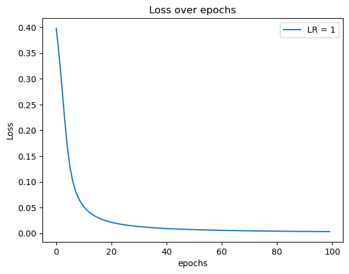

#%% libraries
import matplotlib.pyplot as plt
import numpy as np
import pandas as pd
import math
from sklearn.preprocessing import LabelEncoder,MinMaxScaler
from sklearn.metrics import confusion_matrix
import seaborn as sns
import randomModule 2 Assignment - Part 1: One Layer NN with One Output
Module 2 Assignment - Part 1: One Layer NN with One Output
Instructions:
This assignment has a two large parts with many sub-parts. Each part will enable you to practice with a neural networks and to practice for Exam 2.
This Assignment will TAKE TIME so use all of the time you have to work on it. Please avoid waiting until the last few days as this will not be enough time. You need weeks - not days :)
Be sure to show all work and (when requested) to code using Python (and no NN/TF/Keras packages). Do not worry, we will use packages in coming modules but first it is best to learn about what is going on inside the model.
You may use examples and code that I have shared as a reference. Using my code will not be considered cheating although I strongly recommend that you write as much (if not all) of your own code so that you learn the concepts more robustly.
This is not a team assignment. Please work and code alone. You may discuss concepts, but you cannot share code or work with others. Papers that look too similar with split the grade (first offense) and can suffer less pleasant outcomes for further offenses. Keep it simple and smart - do your own work.

1) Fill out this network by hand and create all the needed matrices, etc. Show all multiplications and shapes.
In other words, illustrate the \(X\), \(y\), \(W1\), \(B\), \(Z_1\), \(H_1\), \(W2\), \(Z_2\), \(C\), \(\hat{y}\), \(\hat{y}-y\), and \(L\). Assume that \(H_1\) uses the Sigmoid Function.
As you do this - ask yourself:
- How many columns does \(X\) have?
- How many hidden layers are there in this architecture?
- How many hidden units are there in the hidden layer?
- How many outputs are there?
JK’s answer:
Input Matrix \(X\)
\[\begin{equation} X = \begin{bmatrix} x_{11} & x_{12} & x_{13} \\ \vdots & \vdots & \vdots \\ x_{n1} & x_{n2} & x_{n3} \\ \end{bmatrix} \nonumber \end{equation}\]
Where \(n\) is any integer.
In any case, the point being: this architecture implies \(X\) has 3 columns (but gives no restriction/information about the number of rows of \(X\).)
Targets \(y\)
\[\begin{align*} \mathbf{y} = \begin{bmatrix} y_1 \\ \vdots \\ y_n \end{bmatrix} \end{align*}\]
Weight matrix \(W1\)
The weight matrix connecting inputs \(X\) with the first hidden layer (or in this case, the only hidden layer).
I will use both notations \(W1 = W^{(1)}\), to be clear and be able to distinct weights \(w\) in \(W1\) and \(W2\)
\[\begin{align*} W1 = W^{(1)} = \begin{bmatrix} w_{11} & w_{12} & w_{13} & w_{14} \\ w_{21} & w_{22} & w_{23} & w_{24} \\ w_{31} & w_{32} & w_{33} & w_{34} \end{bmatrix} \end{align*}\]
When creating the matrix to match the subscript notation so that the first number in the subscript of \(w\) is associated with the connected \(x\) value and the second number is associated with the hidden unit \(h\) (i.e. \(w_{12}\) is the weight connecting \(x_1\) to \(h_2\)), then the \(W^{(1)}\) matrix is an \(m \times p\) matrix, where \(m\) is the number of columns of \(X\) and \(p\) is the number of units in the first hidden layer (which is also the number of rows of \(H_1\)).
Bias \(B\)
The “bias”. Column vector with length that matches the number of rows in \(X\).
\[\mathbf{B} = [b_1,\cdots, b_n]^\top\]
\(Z_1\)
\[\begin{align*} Z_1 & = X\cdot W_1 + B \\ & = \begin{bmatrix} x_{11} & x_{12} & x_{13} \\ \vdots & \vdots & \vdots \\ x_{n1} & x_{n2} & x_{n3} \\ \end{bmatrix} \begin{bmatrix} w_{11} & w_{12} & w_{13} & w_{14} \\ w_{21} & w_{22} & w_{23} & w_{24} \\ w_{31} & w_{32} & w_{33} & w_{34} \end{bmatrix} + \begin{bmatrix} b_1 \\ \vdots \\ b_n \end{bmatrix} \\ & = \begin{bmatrix} z_{11} & z_{12} & z_{13} & z_{14} \\ z_{21} & z_{22} & z_{23} & z_{24} \\ \vdots & \vdots & \vdots & \vdots \\ z_{n1} & z_{n2} & z_{n3} & z_{n4} \end{bmatrix} \end{align*}\]
Where we have:
\[\begin{align*} & z_{11} = x_{11}w_{11} + x_{12}w_{21} + x_{13}w_{31} + b_1 & & \\ & z_{12} = x_{11}w_{12} + x_{12}w_{22} + x_{13}w_{32} + b_1 & &\\ \end{align*}\]
\[\vdots\]
\[\begin{align*} z_{n4} = x_{n1}w_{14} + x_{n2}w_{24} + x_{n3}w_{34} + b_n \end{align*}\]
In other words, I guess any \(Z\) element can be summarized as,
\[z_{i,k} = \sum_j^3 x_{i,j}w_{j,k} + b_i\]
\(H_1\)
We’re assuming the first hidden layer uses the Simoid activation function. Thus \(S(z)\) is the Sigmoid of \(z\).
(Very) Generically we have, \[h = S(z) = \frac{1}{1+e^{-z}}\]
Thus the matrix is as follows:
\[\begin{align*} H_1 & = \begin{bmatrix} S(z_{11}) & S(z_{12}) & S(z_{13}) & S(z_{14}) \\ \vdots & \vdots & \vdots & \vdots \\ S(z_{n1}) & S(z_{n2}) & S(z_{n3}) & S(z_{n4}) \\ \end{bmatrix} \\ & = \begin{bmatrix} h_{11} & h_{12} & h_{13} & h_{14} \\ \vdots & \vdots & \vdots & \vdots \\ h_{n1} & h_{n2} & h_{n3} & h_{n4} \\ \end{bmatrix} \end{align*}\]
The number of columns in \(H_1\) is the number of hidden units in the hidden layer.
\(W2\)
The weight matrix connecting the hidden layer and the last node.
Again, I will use both notations \(W1 = W^{(1)}\) and \(W2 = W^{(2)}\), to be able to distinguish weights from each weight matrix.
\[\begin{align*} W2 = W^{(2)} = \begin{bmatrix} w_1^{(2)} \\[6pt] w_2^{(2)} \\[6pt] w_3^{(2)} \\[6pt] w_4^{(2)} \\[6pt] \end{bmatrix} \end{align*}\]
\(C\)
I believe this is the “bias” associated to calculate \(Z_2\). So much like \(B\) it’s going to be a column vector with length that matches the number of rows in \(X\).
\[\begin{equation*} C = \begin{bmatrix} c_1 \\ \vdots \\ c_n \end{bmatrix} \end{equation*}\]
\(Z_2\)
\[\begin{align*} Z^{(2)} &= H_1 W^{(2)} + C \\ &= \begin{bmatrix} h_{11} & h_{12} & h_{13} & h_{14} \\ \vdots & \vdots & \vdots & \vdots \\ h_{n1} & h_{n2} & h_{n3} & h_{n4} \\ \end{bmatrix} \begin{bmatrix} w_1^{(2)} \\[6pt] w_2^{(2)} \\[6pt] w_3^{(2)} \\[6pt] w_4^{(2)} \\[6pt] \end{bmatrix} + \begin{bmatrix} c_1 \\ \vdots \\ c_n \end{bmatrix} \\ &= \begin{bmatrix} h_{11}w_1^{(2)} + h_{12}w_2^{(2)} + h_{13}w_3^{(2)} + h_{14}w_4^{(2)} + c_1\\ \vdots \\ h_{n1}w_1^{(2)} + h_{n2}w_2^{(2)} + h_{n3}w_3^{(2)} + h_{n4}w_4^{(2)} + c_n \end{bmatrix} \\ &= \begin{bmatrix} z_1^{(2)} \\ \vdots \\ z_n^{(2)} \end{bmatrix} \end{align*}\]
Or in other words, each \(Z^{(2)}\) element can be summarized as,
\[\begin{align*} z_i^{(2)} = \sum_k^4 h_{i,k}w_k^{(2)} + c_i \end{align*}\]
\(\mathbf{\hat{y}}\)
In terms of notation,
\[\begin{align*} \mathbf{\hat{y}} = \begin{bmatrix} \hat{y}_1 \\ \vdots \\ \hat{y}_n \\ \end{bmatrix} \end{align*}\]
(Should have the same shape as \(\mathbf{y}\))
I’m guessing I have to do sigmoid again to get probability for binary labels?
\[\begin{align*} \Rightarrow \mathbf{\hat{y}} = \begin{bmatrix} \hat{y}_1 \\ \vdots \\ \hat{y}_n \\ \end{bmatrix} = \begin{bmatrix} S(z_1^{(2)}) \\ \vdots \\ S(z_n^{(2)}) \end{bmatrix} \end{align*}\]
\(\mathbf{\hat{y}} - \mathbf{y}\)
\[\begin{align*} \mathbf{\hat{y}} - \mathbf{y} = \begin{bmatrix} \hat{y}_1 \\ \vdots \\ \hat{y}_n \\ \end{bmatrix} - \begin{bmatrix} y_1 \\ \vdots \\ y_n \end{bmatrix} = \begin{bmatrix} \hat{y}_1 - y_1 \\ \vdots \\ \hat{y}_n - y_n \\ \end{bmatrix} \end{align*}\]
Loss \(L\)
There’s really no limit of what Loss function \(L\) to use. (A NN architecture doesn’t define this, the NN model builder does :)) It could be LCE or a simple one.
For the purpose of this assignment I’ll use a simple MSE (that’s supposedly pretty commonly used as well), since it uses \(\mathbf{\hat{y}} - \mathbf{y}\).
\[\begin{align*} Loss = L &= \frac{1}{2} (\mathbf{y} - \mathbf{\hat{y}})^2 \\ &= \frac{1}{2} \begin{bmatrix} \hat{y}_1 - y_1 \\ \vdots \\ \hat{y}_n - y_n \end{bmatrix}^2 \\ &=\frac{1}{2} \begin{bmatrix} \hat{y}_1 - y_1 \\ \vdots \\ \hat{y}_n - y_n \end{bmatrix} \begin{bmatrix} \hat{y}_1 - y_1, & \cdots, & \hat{y}_1 - y_1 \end{bmatrix} \\ &= \frac{1}{2} \sum_i^n (\hat{y}_i - y_i)^2 \end{align*}\]
2) Use Python to code the Feed-Forward portion of this NN.
Print out \(X\), \(y\), \(W1\), \(B\), \(Z_1\), \(H_1\), \(W_2\), \(Z_2\), \(C\), \(\hat{y}\), \(\hat{y}-y\), and \(L\).
Assumptions and Notes:
Create your own small labeled dataset. Have the right number of columns and have a column called “LABEL” which is 0 or 1.
Read in the data and create \(X\) and \(y\)
YOU create the dataset so that everyone will have a unique dataset. Have between 5 and 7 rows (no more), assure that your labels “make sense” for the data, and have a balance of labels (so nearish 50% \(0\) and 50% \(1\)). You want your NN to “work” so again make sure your labeled data has a predictable pattern. INVENT the data yourself - type it into a
.csvfile - save the file as A2_Data_YourName.csv. You will submit this dataset with your Assignment submission.Create \(H_1\) using Sigmoid. You will need to code a function for the Sigmoid (and its derivative) into your code. Do this using
def.Use \(L = \frac{1}{n} \displaystyle \sum^n (\hat{y} - y)^2\) as the Loss Function when \(n\) is the number of rows in your dataset. Do not “hard code”. The TAs or I should be able to use your code to read ANY dataset that has 3 columns of data, one label column called “LABEL” (of 0 or 1), and any number of rows.
JK answer:
# %%
class HW2_FeedForward():
def __init__(self,
data_filename = "A2_Data_JasmineKobayashi.csv",
scale_data = True,
verbose = True):
# Read Data
self.df = pd.read_csv(data_filename)
# create X and y, assuming data has column "LABEL" as column with labels
## X matrix
if scale_data:
mm_scaler = MinMaxScaler()
X = mm_scaler.fit_transform(self.df.drop(columns="LABEL",axis=1))
else:
X = np.array(self.df.drop(columns=['LABEL'],axis=1))
self.X = X
## y
self.y = np.array(self.df[['LABEL']])
if verbose:
print("Shape of X:", self.X.shape)
print("X matrix: \n", self.X)
print("Shape of y:", self.y.shape)
print("y vector: \n", self.y)
def MSE_loss(self,y_hat,y):
# L = mean((y_hat - y)^2)
return np.mean((y_hat - y)**2)
def lin_eq(self,X,W,B):
assert X.shape[1] == W.shape[0], "Linear eq: z = X @ W + B. Shape of X: {}; Shape of W: {}".format(X.shape,W.shape)
assert B.shape[0] == X.shape[0], "Linear eq: z = X @ W + B. Length of B should match X rows; Length B = {}; Shape of X = {}".format(B.shape[0],X.shape)
return X @ W + B
def Sigmoid(self,z,
derivative = False):
if derivative:
return self.Sigmoid(z) * (1 - self.Sigmoid(z)) # dS/dz = S(z)(1-S(z))
# Sigmoid
return 1/(1 + math.e**(-z)) # S(z) = 1/(1 + e^(-z))
def FeedForward(self,
hidden_units= 4,
randomize_parameters = False,
activation = "sigmoid",
verbose = True):
# Shape of W1
w1_ncol = hidden_units # Number of W1 cols should be number of hidden units in H1
w1_nrow = self.X.shape[1] # Number of W1 rows should be number of X columns (dim of X)
# Shape of B (column vector)
b_length = self.X.shape[0] # length of X rows
# Shape of W2:
w2_ncol = 1 # Number of W2 cols should be number of outputs (in this case, only one output)
w2_nrow = hidden_units # Number of W2 rows should be number of hidden units in H1
# Shape of C (column vector)
c_length = self.X.shape[0] # length of X rows
if randomize_parameters:
# TODO: Finish potential code of randomized parameters
# # bounds of randomized weights
# bound = 1/np.sqrt(w1_nrow) # I found online that supposedly this is a standard range for randomized weights
# rand_w = [np.random.uniform(-bound,bound) for i in range(w1_ncol)]
# self.W1 = np.array([rand_w]*w1_nrow)
# self.W2 = np.array([]*w2_nrow)
# print('All parameters were randomized')
pass
else: # These are the parameters defined by the question 2 in Assignment2
self.W1 = np.array([[1]*w1_ncol]*w1_nrow) # otherwise, all weights of W1 = 1
self.B = np.array([[0]]*b_length) # otherwise, all bias (B) = 0
self.W2 = np.array([[2]*w2_ncol]*w2_nrow) # otherwise, all weights of W2 = 2
self.C = np.array([[0]]*c_length)
print("Parameters built for simple calculation (not randomized)")
if verbose:
# print("# of X cols (should be # of W1 rows):", self.X.shape[1])
# print("# of hidden units (should be # of W1 cols):", hidden_units)
print("W1 has shape:", self.W1.shape)
print("W1 matrix: \n", self.W1)
print("Shape of B:", self.B.shape)
print("B (bias vector for Z1): \n", self.B)
print("Shape of W2:",self.W2.shape)
print("W2 matrix: \n", self.W2)
print("Shape of C :", self.C.shape)
print("C (bias vector for Z2): \n",self.C)
# Create H1
# Z1 = X @ W1 + B
self.Z1 = self.lin_eq(self.X,self.W1,self.B)
if verbose:
print("Shape of Z1:",self.Z1.shape)
print("Z1 matrix: \n",self.Z1)
self.H1 = self.Sigmoid(self.Z1)
# TODO: Add flexibility with other activation functions
if verbose:
print("Activation function:",activation)
print("H1 matrix: \n", self.H1)
# Z2 and y-hat
# Z2 = H1 @ W2 + C
self.Z2 = self.lin_eq(self.H1,self.W2,self.C)
self.y_hat = self.Sigmoid(self.Z2)
if verbose:
print("Shape of Z2:", self.Z2.shape)
print("Z2 matrix: \n", self.Z2)
print("y_hat:\n",self.y_hat)NN = HW2_FeedForward()
NN.FeedForward()
print("MSE Loss:",NN.MSE_loss(y_hat=NN.y_hat,y=NN.y))Shape of X: (6, 3)
X matrix:
[[0.86363636 0. 0.07894737]
[0.09090909 0.4 0.81578947]
[0. 0.8 1. ]
[1. 0.2 0.05263158]
[0.90909091 1. 0. ]
[0.04545455 0.6 0.94736842]]
Shape of y: (6, 1)
y vector:
[[0]
[1]
[1]
[0]
[0]
[1]]
Parameters built for simple calculation (not randomized)
W1 has shape: (3, 4)
W1 matrix:
[[1 1 1 1]
[1 1 1 1]
[1 1 1 1]]
Shape of B: (6, 1)
B (bias vector for Z1):
[[0]
[0]
[0]
[0]
[0]
[0]]
Shape of W2: (4, 1)
W2 matrix:
[[2]
[2]
[2]
[2]]
Shape of C : (6, 1)
C (bias vector for Z2):
[[0]
[0]
[0]
[0]
[0]
[0]]
Shape of Z1: (6, 4)
Z1 matrix:
[[0.94258373 0.94258373 0.94258373 0.94258373]
[1.30669856 1.30669856 1.30669856 1.30669856]
[1.8 1.8 1.8 1.8 ]
[1.25263158 1.25263158 1.25263158 1.25263158]
[1.90909091 1.90909091 1.90909091 1.90909091]
[1.59282297 1.59282297 1.59282297 1.59282297]]
Activation function: sigmoid
H1 matrix:
[[0.71962126 0.71962126 0.71962126 0.71962126]
[0.78696018 0.78696018 0.78696018 0.78696018]
[0.85814894 0.85814894 0.85814894 0.85814894]
[0.77775507 0.77775507 0.77775507 0.77775507]
[0.87091698 0.87091698 0.87091698 0.87091698]
[0.8310129 0.8310129 0.8310129 0.8310129 ]]
Shape of Z2: (6, 1)
Z2 matrix:
[[5.75697011]
[6.29568146]
[6.86519148]
[6.22204054]
[6.96733585]
[6.64810323]]
y_hat:
[[0.99684928]
[0.99815914]
[0.99895761]
[0.99801874]
[0.99905873]
[0.9987052 ]]
MSE Loss: 0.49797906668781683) Compare by-hand and code
Here, will compare your by-hand work in (1) with your code in (2).
To do this, use your dataset values (just the first row) and your label (for the first row) to FF by hand on paper through the network. Show numeric and clear results for \(X\), \(y\), \(W_1\), \(B\), \(Z_1\), \(H_1\), \(W_2\), \(Z_2\), \(C\), \(\hat{y}\), \(\hat{y}-y\), and \(L\).
Then, using your code and the same \(X\) (first row) and \(y\) (first label), print out \(X\), \(y\), \(W_1\), \(B\), \(Z_1\), \(H_1\), \(W_2\), \(Z_2\), \(C\), \(\hat{y}\), \(\hat{y}-y\), and \(L\).
Both the “by hand on paper” and the “by code” results should be the same.
If they are not, find and fix your bugs until they are the same.
Notes: \(\mathbf{W_1}\), \(\mathbf{W_2}\), \(\mathbf{B}\) (which is \(b_1\), \(b_2\), \(b_3\), \(b_4\)), and \(C\) (which is \(c_1\)) would normally be randomly initialized. However, to make your code and “by hand” comparison easier, let all the values in \(W_1\) be \(1\), let all the values in \(W_2\) be 2, let all the \(\mathbf{B}\) values be \(0\), and let \(c\) be \(-1\). You will code this in and will use this by hand so that your code and by-hand results will be the same.
Print out all key matrices and results.
Illustrate and compare your “by-hand” results with your code print outs to show that they are the same.
JK’s answer
X Matrix
\[\begin{align*} X &= \begin{bmatrix} x_{11} & x_{12} & x_{13} \\ x_{21} & x_{22} & x_{23} \\ \vdots & \vdots & \vdots \\ x_{n1} & x_{n2} & x_{n3} \\ \end{bmatrix} \\ &= \begin{bmatrix} 22 & 10 & 24 \\ 5 & 12 & 52 \\ 3 & 15 & 59 \\ 25 & 11 & 23 \\ 23 & 14 & 21 \\ 4 & 13 & 57 \end{bmatrix} \end{align*}\]
NN = HW2_FeedForward(scale_data=False,verbose=False)
print("non-scaled X:\n",NN.X)non-scaled X:
[[22 10 24]
[ 5 12 52]
[ 3 14 59]
[25 11 23]
[23 15 21]
[ 4 13 57]]To avoid errors with Sigmoid, so going to Min-Max scale the data. I’m not going to calculate individually I”m going to leave it to the Sklearn package min-max normalizer and trust it works.
But this is the formula I would use if I did calculate by hand:
\[x' = \frac{x - min}{max - min}\]
Where \(x'\) is the scaled value, \(x\) is the value to scale. (\(min\) & \(max\) are the minimum value and maximum value of the list of values to scale to.)
NN = HW2_FeedForward(scale_data=True,verbose=False)
print("Min-Max Scaled X:\n",NN.X)Min-Max Scaled X:
[[0.86363636 0. 0.07894737]
[0.09090909 0.4 0.81578947]
[0. 0.8 1. ]
[1. 0.2 0.05263158]
[0.90909091 1. 0. ]
[0.04545455 0.6 0.94736842]]Targets \(\mathbf{y}\)
\[\begin{align*} \mathbf{y} &= \begin{bmatrix} y_1 \\ \vdots \\ y_n \end{bmatrix} \\ &= \begin{bmatrix} 0 \\ 1 \\ 1 \\ 0 \\ 0 \\ 1 \end{bmatrix} \end{align*}\]
print("y target vector:\n",NN.y)y target vector:
[[0]
[1]
[1]
[0]
[0]
[1]]\(W^{(1)}\) Matrix
For this assignment we’re using all weights in \(W^{(1)}\) are equal to \(1\)
\[\begin{align*} W^{(1)} &= \begin{bmatrix} w_{11} & w_{12} & w_{13} & w_{14} \\ w_{21} & w_{22} & w_{23} & w_{24} \\ w_{31} & w_{32} & w_{33} & w_{34} \end{bmatrix} \\ &= \begin{bmatrix} 1 & 1 & 1 & 1 \\ 1 & 1 & 1 & 1 \\ 1 & 1 & 1 & 1 \end{bmatrix} \end{align*}\]
NN.FeedForward(verbose=False)
print("W1 matrix: \n",NN.W1)Parameters built for simple calculation (not randomized)
W1 matrix:
[[1 1 1 1]
[1 1 1 1]
[1 1 1 1]]Bias vector \(\mathbf{B}\)
For this assignment we using all bias = 0
\[\begin{align*} \mathbf{B} = \begin{bmatrix} b_1 \\ \vdots \\ b_n \end{bmatrix} = \begin{bmatrix} 0 \\ 0 \\ 0 \\ 0 \\ 0 \\ 0 \\ \end{bmatrix} \end{align*}\]
print("Bias vector B: \n",NN.B)Bias vector B:
[[0]
[0]
[0]
[0]
[0]
[0]]\(Z_1\) Matrix
\[\begin{align*} Z_1 &= X \cdot W^{(1)} + B \\ &= \begin{bmatrix} x_{11} & x_{12} & x_{13} \\ x_{21} & x_{22} & x_{23} \\ \vdots & \vdots & \vdots \\ x_{n1} & x_{n2} & x_{n3} \\ \end{bmatrix} \begin{bmatrix} w_{11} & w_{12} & w_{13} & w_{14} \\ w_{21} & w_{22} & w_{23} & w_{24} \\ w_{31} & w_{32} & w_{33} & w_{34} \end{bmatrix} + \begin{bmatrix} b_1 \\ \vdots \\ b_n \end{bmatrix} \\ &= \begin{bmatrix} 0.863 & 0.0 & 0.0789 \\ 0.091 & 0.4 & 0.816 \\ 0.0 & 0.8 & 1.0 \\ 1.0 & 0.2 & 0.0526 \\ 0.909 & 1.0 & 0.0 \\ 0.045 & 0.6 & 0.947 \end{bmatrix} \begin{bmatrix} 1 & 1 & 1 & 1 \\ 1 & 1 & 1 & 1 \\ 1 & 1 & 1 & 1 \end{bmatrix} + \begin{bmatrix} 0 \\ 0 \\ 0 \\ 0 \\ 0 \\ 0 \\ \end{bmatrix} \\ &= \begin{bmatrix} 0.942 & 0.942 & 0.942 & 0.942 \\ 1.306 & 1.306 & 1.306 & 1.306 \\ 1.8 & 1.8 & 1.8 & 1.8 \\ 1.253 & 1.253 & 1.253 & 1.253 \\ 1.91 & 1.91 & 1.91 & 1.91 \\ 1.597 & 1.597 & 1.597 & 1.597 \end{bmatrix} \end{align*}\]
NN.Z1array([[0.94258373, 0.94258373, 0.94258373, 0.94258373],
[1.30669856, 1.30669856, 1.30669856, 1.30669856],
[1.8 , 1.8 , 1.8 , 1.8 ],
[1.25263158, 1.25263158, 1.25263158, 1.25263158],
[1.90909091, 1.90909091, 1.90909091, 1.90909091],
[1.59282297, 1.59282297, 1.59282297, 1.59282297]])\(H_1\) Matrix
Using the Sigmoid as the activation function which is defined as follows,
\[\begin{align*} S(z) &= \frac{e^z}{1+e^z} \\[6pt] &= \frac{1}{1+e^{-z}} \end{align*}\]
And \(h=S(z)\)
\[\begin{align*} H_1 & = \begin{bmatrix} S(z_{11}) & S(z_{12}) & S(z_{13}) & S(z_{14}) \\ \vdots & \vdots & \vdots & \vdots \\ S(z_{n1}) & S(z_{n2}) & S(z_{n3}) & S(z_{n4}) \\ \end{bmatrix} \\ & = \begin{bmatrix} 0.7195 & 0.7195 & 0.7195 & 0.7195 \\ 0.787 & 0.787 & 0.787 & 0.787 \\ 0.858 & 0.858 & 0.858 & 0.858 \\ 0.778 & 0.778 & 0.778 & 0.778 \\ 0.871 & 0.871 & 0.871 & 0.871 \\ 0.832 & 0.832 & 0.832 & 0.832 \end{bmatrix} \end{align*}\]
print("H1 matrix: \n",NN.H1)H1 matrix:
[[0.71962126 0.71962126 0.71962126 0.71962126]
[0.78696018 0.78696018 0.78696018 0.78696018]
[0.85814894 0.85814894 0.85814894 0.85814894]
[0.77775507 0.77775507 0.77775507 0.77775507]
[0.87091698 0.87091698 0.87091698 0.87091698]
[0.8310129 0.8310129 0.8310129 0.8310129 ]]\(W^{(2)}\) Matrix
For this assignment we’re using all weights in \(W^{(2)}\) are equal to \(2\)
\[\begin{align*} W^{(2)} = \begin{bmatrix} w_1^{(2)} \\[6pt] w_2^{(2)} \\[6pt] w_3^{(2)} \\[6pt] w_4^{(2)} \\[6pt] \end{bmatrix} = \begin{bmatrix} 2 \\ 2 \\ 2 \\ 2 \end{bmatrix} \end{align*}\]
print("W2 matrix: \n",NN.W2)W2 matrix:
[[2]
[2]
[2]
[2]]\(\mathbf{C}\) bias vector
For this assignment we using all bias = 0
\[\begin{equation*} C = \begin{bmatrix} c_1 \\ \vdots \\ c_n \end{bmatrix} = \begin{bmatrix} 0 \\ 0 \\ 0 \\ 0 \\ 0 \\ 0 \end{bmatrix} \end{equation*}\]
print("C bias vector: \n",NN.C)C bias vector:
[[0]
[0]
[0]
[0]
[0]
[0]]\(Z_2\) Matrix
\[\begin{align*} Z_2 &= H_1 W^{(2)} + C \\ &= \begin{bmatrix} h_{11} & h_{12} & h_{13} & h_{14} \\ \vdots & \vdots & \vdots & \vdots \\ h_{n1} & h_{n2} & h_{n3} & h_{n4} \\ \end{bmatrix} \begin{bmatrix} w_1^{(2)} \\[6pt] w_2^{(2)} \\[6pt] w_3^{(2)} \\[6pt] w_4^{(2)} \\[6pt] \end{bmatrix} + \begin{bmatrix} c_1 \\ \vdots \\ c_n \end{bmatrix} = \begin{bmatrix} z_1^{(2)} \\ \vdots \\ z_n^{(2)} \end{bmatrix} \\ &= \begin{bmatrix} 0.7195 & 0.7195 & 0.7195 & 0.7195 \\ 0.787 & 0.787 & 0.787 & 0.787 \\ 0.858 & 0.858 & 0.858 & 0.858 \\ 0.778 & 0.778 & 0.778 & 0.778 \\ 0.871 & 0.871 & 0.871 & 0.871 \\ 0.832 & 0.832 & 0.832 & 0.832 \end{bmatrix} \begin{bmatrix} 2 \\ 2 \\ 2 \\ 2 \end{bmatrix} + \begin{bmatrix} 0 \\ 0 \\ 0 \\ 0 \\ 0 \\ 0 \end{bmatrix} \\ &= \begin{bmatrix} 5.756 \\ 6.296 \\ 6.864 \\ 6.224 \\ 6.968 \\ 6.656 \end{bmatrix} \end{align*}\]
print("Z2 matrix: \n",NN.Z2)Z2 matrix:
[[5.75697011]
[6.29568146]
[6.86519148]
[6.22204054]
[6.96733585]
[6.64810323]]\(\mathbf{\hat{y}}\) prediction vector
I’m guessing I have to do sigmoid again to get probability for binary labels.
So something like,
\[\begin{align*} \mathbf{\hat{y}} &= \begin{bmatrix} \hat{y}_1 \\ \vdots \\ \hat{y}_n \\ \end{bmatrix} = \begin{bmatrix} S(z_1^{(2)}) \\ \vdots \\ S(z_n^{(2)}) \end{bmatrix} \\ & = \begin{bmatrix} 0.997 \\ 0.998 \\ 0.999 \\ 0.998 \\ 0.999 \\ 0.999 \end{bmatrix} \end{align*}\]
print("y-hat prediction vector:\n",NN.y_hat)y-hat prediction vector:
[[0.99684928]
[0.99815914]
[0.99895761]
[0.99801874]
[0.99905873]
[0.9987052 ]]MSE Loss
We’re using MSE
\[\begin{align*} L = \frac{1}{n} \displaystyle \sum_i^n (\hat{y}_i - y_i)^2 \end{align*}\]
Gonna start with \(\hat{y} - y\)
\[\begin{align*} \mathbf{\hat{y}} - \mathbf{y} &= \begin{bmatrix} \hat{y}_1 \\ \vdots \\ \hat{y}_n \\ \end{bmatrix} - \begin{bmatrix} y_1 \\ \vdots \\ y_n \end{bmatrix} = \begin{bmatrix} \hat{y}_1 - y_1 \\ \vdots \\ \hat{y}_n - y_n \\ \end{bmatrix} \\ &= \begin{bmatrix} 0.997 \\ 0.998 \\ 0.999 \\ 0.998 \\ 0.999 \\ 0.999 \end{bmatrix} - \begin{bmatrix} 0 \\ 1 \\ 1 \\ 0 \\ 0 \\ 1 \end{bmatrix} = \begin{bmatrix} 0.997 \\ -0.002 \\ -0.001 \\ 0.998 \\ 0.999 \\ -0.001 \end{bmatrix} \end{align*}\]
print("(y_hat) - y:\n", NN.y_hat-NN.y)(y_hat) - y:
[[ 0.99684928]
[-0.00184086]
[-0.00104239]
[ 0.99801874]
[ 0.99905873]
[-0.0012948 ]]\[\begin{align*} \Rightarrow L \frac{1}{n} \displaystyle \sum_i^n (\hat{y}_i - y_i)^2 \approx 0.498 \end{align*}\]
print("MSE Loss:",NN.MSE_loss(y_hat=NN.y_hat,y=NN.y))MSE Loss: 0.49797906668781684) Writing out the derivatives by hand.
For this part and in order to help you to code the back propagation, write out the derivatives for updating \(\mathbf{W1}\), \(\mathbf{W2}\), \(\mathbf{B}\), and \(\mathbf{C}\).
Please write them clearly :)
You can do this “matrix style” - so for example, \(\frac{\partial L}{\partial \mathbf{W1}}\), or you can write them out individually, such as \(\frac{\partial L}{dw_{11}}\), \(\frac{\partial L}{\partial w_{12}}\), etc…
Either way, show all your work and illustrate how the matrices (such as \(\mathbf{X}\), \(\mathbf{W_1}\), \(\mathbf{W_2}\), etc. etc.) will all fit together to create the final derivative.
Hints: There are many examples on the PowerPoints. We reviewed this in class. You can also see examples of this in my code examples which are all here: Gates Bolton Analytics - Neural Networks Page
JK’s answer:
Parameters we want to update via back propagation (and gradient descent):
\[\begin{aligned} \begin{array}{ccc} \hline \text{Parameter} & \text{Matrix/Vector form} & \text{Shape} \\ \hline \\ W^{(1)} & \begin{bmatrix} w_{11} & w_{12} & w_{13} & w_{14} \\ w_{21} & w_{22} & w_{23} & w_{24} \\ w_{31} & w_{32} & w_{33} & w_{34} \end{bmatrix} & [3 \times 4]\\ \\ \hline \\ \mathbf{B} & \begin{bmatrix} b_1 \\ \vdots \\ b_n \end{bmatrix} & [n \times 1]\\ \\ \hline \\ W^{(2)} & \begin{bmatrix} w_1^{(2)} \\[6pt] w_2^{(2)} \\[6pt] w_3^{(2)} \\[6pt] w_4^{(2)} \\[6pt] \end{bmatrix} & [4 \times 1]\\ \\ \hline \\ \mathbf{C} & \begin{bmatrix} c_1 \\ \vdots \\ c_n \end{bmatrix} & [n \times 1] \end{array} \end{aligned}\]And I believe for gradient descent to work properly, I think the (final matrix/vector form of the) partial derivatives of each parameter needs to match the shape of the original parameter.
Other relevant formulas:
\[\begin{aligned} \begin{array}{c|c|c|c} \hline \text{Variable (matrix/vector form)}& \text{Shape} & \text{Vector/Matrix Formula} & \text{Element-wise formula} \\ \hline \\ L & \text{(scalar)} & \frac{1}{2}([\mathbf{\hat{y}} - \mathbf{y}]\cdot[\mathbf{\hat{y}} - \mathbf{y}]) & L = \frac{1}{2} \displaystyle\sum_i^n (\hat{y}_i - y_i)^2 \\ \\ \hline \\ \mathbf{\hat{y}} = \begin{bmatrix} \hat{y}_1 \\ \vdots \\ \hat{y}_n \\ \end{bmatrix} = \begin{bmatrix} S(z_1^{(2)}) \\ \vdots \\ S(z_n^{(2)}) \end{bmatrix} & [n \times 1] & \mathbf{\hat{y}} = S(Z^{(2)}) & \hat{y}_i = S(z_i^{(2)}) \\ \\ \hline \\ Z^{(2)} = \begin{bmatrix} z_1^{(2)} \\ \vdots \\ z_n^{(2)} \end{bmatrix} & [n \times 4] & Z^{(2)} = H_1 W^{(2)} + C & z_i^{(2)} = \displaystyle \sum_k^4 h_{i,k}w_k^{(2)} + c_i \\ \\ \hline \\ H_1 = \begin{bmatrix} h_{11} & h_{12} & h_{13} & h_{14} \\ \vdots & \vdots & \vdots & \vdots \\ h_{n1} & h_{n2} & h_{n3} & h_{n4} \\ \end{bmatrix} & [n \times 4] & H_1 = S(Z^{(1)}) & h_{i,k} = S(z_{i,k}^{(1)}) \\ \\ \hline \\ Z^{(1)} = \begin{bmatrix} z_{11} & z_{12} & z_{13} & z_{14} \\ z_{21} & z_{22} & z_{23} & z_{24} \\ \vdots & \vdots & \vdots & \vdots \\ z_{n1} & z_{n2} & z_{n3} & z_{n4} \end{bmatrix} & [n \times 4] & Z^{(1)} = X\cdot W_1 + B & z_{i,k} = \displaystyle \sum_j^3 x_{i,j}w_{j,k} + b_i \\ \end{array} \end{aligned}\]Reminder (to self) the following are specific to the architecture of this assignment:
- \(4\) comes from the number of units in the hidden layer
- \(3\) comes from the number of inputs/columns in \(X\)
- (\(n\) in this is supposed to be 6 for the dataset I created)
Other potentially useful multiplication notation to match with python.
I will try my best to match the multiplication notation as done in Professor Gates’ lecture slides.
Thus, I will use an “o-dot” (\(\odot\)) to represent matrix multiplcation, (equivalent to @ in Python) i.e.:
\[\begin{align*} A \odot B = \begin{bmatrix} a_{11} & a_{12} \\ a_{21} & a_{22}\\ \end{bmatrix} \odot \begin{bmatrix} b_{11} & b_{12} \\ b_{21} & b_{22} \\ \end{bmatrix} = \begin{bmatrix} a_{11}b_{11} + a_{12}b_{21} & a_{11}b_{12} + a_{12}b_{22} \\ a_{21}b_{11} + a_{22}b_{21} & a_{21}b_{12} + a_{22}b_{22} \end{bmatrix} \end{align*}\]
And I will use an asterisk (\(\ast\)) for element-wise (“regular”) multiplication, (equivalent to * in Python) i.e.:
\[\begin{align*} A \ast B = \begin{bmatrix} a_{11} & a_{12} \\ a_{21} & a_{22}\\ \end{bmatrix} \ast \begin{bmatrix} b_{11} & b_{12} \\ b_{21} & b_{22} \\ \end{bmatrix} = \begin{bmatrix} a_{11}b_{11} & a_{12}b_{12} \\ a_{21}b_{21} & a_{22}b_{22} \end{bmatrix} \end{align*}\]
\(\frac{\partial L}{\partial C}\)
\[\begin{equation*} C = \begin{bmatrix} c_1 \\ \vdots \\ c_n \end{bmatrix} \end{equation*}\]
Let’s start with finding \(\frac{\partial L}{\partial c_i}\)
\[\begin{align*} \frac{\partial L}{\partial c_i} &= \frac{\partial L}{\partial \hat{y}_i} \cdot \frac{\partial \hat{y}_i}{\partial z^{(2)}_i} \cdot \frac{\partial z^{(2)}_i}{\partial c_i} \end{align*}\]
Breaking down each partial derivative one at a time:
\[\begin{align*} L &= \frac{1}{2} \displaystyle\sum_i^n (\hat{y}_i - y_i)^2 \\ \Rightarrow \frac{\partial L}{\partial \hat{y}_i} &= \frac{1}{2} (2) (\hat{y}_i - y_i) \\ &= \hat{y}_i - y_i \end{align*}\]
Then we have \(\frac{\partial \hat{y}_i}{\partial z_i^{(2)}}\):
\[\begin{align*} \hat{y}_i = S(z_i^{(2)}) \end{align*}\]
And reminder: \(\frac{d}{dz} S(z) = S(z)(1-S(z))\)
\[\begin{align*} \Rightarrow \frac{\partial \hat{y}_i}{\partial z^{(2)}_i} &= S(z^{(2)}_i)(1-S(z^{(2)}_i)) \\ &= \hat{y}_i(1- \hat{y}_i) \end{align*}\]
Then finally we have \(\frac{\partial z^{(2)}_i}{\partial c_i}\)
\[\begin{align*} z_i^{(2)} &= \displaystyle \sum_k^4 h_{i,k}w_k^{(2)} + c_i \\ \Rightarrow \frac{\partial z^{(2)}_i}{\partial c_i} &= 0 + (1) \end{align*}\]
So altogether we have,
\[\begin{align*} \frac{\partial L}{\partial c_i} &= \frac{\partial L}{\partial \hat{y}_i} \cdot \frac{\partial \hat{y}_i}{\partial z^{(2)}_i} \cdot \frac{\partial z^{(2)}_i}{\partial c_i} \\ &= \underbrace{(\hat{y}_i - y_i)}_{\textstyle \frac{\partial L}{ \partial \hat{y}_i}} \underbrace{S(z^{(2)}_i)(1-S(z^{(2)}_i))}_{\textstyle \frac{\partial \hat{y}_i}{\partial z^{(2)}_i}} \underbrace{(1)}_{\textstyle \frac{\partial z^{(2)}_i}{\partial c_i}} \\ &= [\hat{y}_i - y_i][\hat{y}_i(1- \hat{y}_i)][1] \end{align*}\]
So I think I can summarize this derivative with the following vector notation:
\[\begin{align*} \frac{\partial L}{\partial C} &= \begin{bmatrix} (\hat{y}_1 - y_1)(\hat{y}_1 - (\hat{y}_1)^2) (1)\\ \vdots \\ (\hat{y}_n - y_n)(\hat{y}_n - (\hat{y}_n)^2) (1) \end{bmatrix} \end{align*}\]
I can probably technically stop here, but I want to see if I can make things “simpler” notation to start thinking about how I can translate these into Python.
I want to start by breaking these into their own matrices. For instance, maybe we can call the matrix/vector for \(\frac{\partial L}{\partial \hat{y}_i}\), \(E\) (can be anything though).
\[\begin{align*} \frac{\partial L}{\partial \hat{y}_i} &= \mathbf{\hat{y}} - \mathbf{y} = \begin{bmatrix} \hat{y}_1 - y_1\\ \vdots \\ \hat{y}_n - y_n \end{bmatrix} \\ &= E \end{align*}\]
And then maybe call the matrix/vector for \(\frac{\partial \hat{y}_i}{\partial z^{(2)}_i}\), \(\Phi\).
\[\begin{align*} \frac{\partial \hat{y}_i}{\partial z^{(2)}_i} &= S(z^{(2)}_i)(1-S(z^{(2)}_i)) \\ &= \hat{y}_i(1- \hat{y}_i) \\ &= \hat{y}_i - (\hat{y}_i)^2 \\ &= \mathbf{\hat{y}} - (\mathbf{\hat{y}} \ast \mathbf{\hat{y}}) \\ &= \Phi \end{align*}\]
And this is not really vital, but just for the sake of clarity and commiting to everything written before, I’ll will use \(\vec{1}_n\) as notation of a vector entirely made of ones, where \(n\) is the number of elements in the vector.
i.e:
\[\begin{align*} \vec{1}_3 = \begin{bmatrix} 1 \\ 1 \\ 1 \end{bmatrix} \end{align*}\]
Thus I think I can finalize the matrix/vector notation as follows for this partial derivative:
\[\begin{align*} \frac{\partial L}{\partial C} &= \begin{bmatrix} (\hat{y}_1 - y_1)(\hat{y}_1 - (\hat{y}_1)^2) (1)\\ \vdots \\ (\hat{y}_n - y_n)(\hat{y}_n - (\hat{y}_n)^2) (1) \end{bmatrix}\\ &= \begin{bmatrix} \hat{y}_1 - y_1\\ \vdots \\ \hat{y}_n - y_n \end{bmatrix} \ast \begin{bmatrix} \hat{y}_1 - (\hat{y}_1)^2 \\ \vdots \\ \hat{y}_n - (\hat{y}_n)^2 \end{bmatrix} \ast \begin{bmatrix} 1 \\ \vdots \\ 1 \end{bmatrix}\\ &= E \ast \Phi \ast \vec{1}_n \end{align*}\]
Because the vector of ones (\(\vec{1}_n\)), we can also see that technically \(\frac{\partial L}{\partial C} = \frac{\partial L}{\partial Z^{(2)}}\)
\[\begin{align*} \frac{\partial L}{\partial C} &= E \ast \Phi \\ &= \frac{\partial L}{\partial \mathbf{\hat{y}}} \cdot \frac{\partial \mathbf{\hat{y}}}{\partial Z^{(2)}} \end{align*}\]
This will come in handy with the rest of the derivatives as we’ll soon see.
\(\frac{\partial L}{\partial W^{(2)}}\)
\[\begin{align*} W^{(2)} = \begin{bmatrix} w_1^{(2)} \\[6pt] w_2^{(2)} \\[6pt] w_3^{(2)} \\[6pt] w_4^{(2)} \\[6pt] \end{bmatrix} \end{align*}\]
Let’s start small again,
\[\begin{align*} \frac{\partial L}{\partial w_k^{(2)}} &= \frac{\partial L}{\partial \hat{y}_i} \cdot \frac{\partial \hat{y}_i}{\partial z^{(2)}_i} \cdot \frac{\partial z^{(2)}_i}{\partial w_k^{(2)}} \end{align*}\]
First pattern emerges! We’ve seen \(\textstyle \frac{\partial L}{\partial \hat{y}_i} \cdot \frac{\partial \hat{y}_i}{\partial z^{(2)}_i}\) before when deriving \(\frac{\partial L}{\partial C}\).
\[\begin{align*} \frac{\partial L}{\partial \hat{y}_i} \cdot \frac{\partial \hat{y}_i}{\partial z^{(2)}_i} &= \frac{\partial L}{\partial \mathbf{\hat{y}}} \cdot \frac{\partial \mathbf{\hat{y}}}{\partial Z^{(2)}} \\ &= E \ast \Phi \end{align*}\]
Yay! So that essentially means all I have to worry about is \(\frac{\partial z^{(2)}_i}{\partial w_k^{(2)}}\).
So we had,
\[\begin{align*} z_i^{(2)} &= \sum_k^4 h_{i,k}w_k^{(2)} + c_i\\ \Rightarrow \frac{\partial z^{(2)}_i}{\partial w_k^{(2)}} &= h_{i,k}(1) + 0 \\ &= h_{i,k} \end{align*}\]
Where in this case, (\(i=1,\dots,n\)) and (\(k=1,\dots,4\)).
Thus,
\[\begin{align*} \frac{\partial z^{(2)}_i}{\partial w_k^{(2)}} &= h_{i,k} \\ \end{align*}\]
\[\begin{align*} \Rightarrow \frac{\partial Z^{(2)}}{\partial W^{(2)}} &= \begin{bmatrix} \frac{\partial z^{(2)}_1}{\partial w_1^{(2)}} & \frac{\partial z^{(2)}_1}{\partial w_2^{(2)}} & \frac{\partial z^{(2)}_1}{\partial w_3^{(2)}} & \frac{\partial z^{(2)}_1}{\partial w_4^{(2)}} \\[6pt] \frac{\partial z^{(2)}_2}{\partial w_1^{(2)}} & \frac{\partial z^{(2)}_2}{\partial w_2^{(2)}} & \frac{\partial z^{(2)}_2}{\partial w_3^{(2)}} & \frac{\partial z^{(2)}_2}{\partial w_4^{(2)}} \\[6pt] \vdots & \vdots & \vdots & \vdots \\ \frac{\partial z^{(2)}_n}{\partial w_1^{(2)}} & \frac{\partial z^{(2)}_n}{\partial w_2^{(2)}} & \frac{\partial z^{(2)}_n}{\partial w_3^{(2)}} & \frac{\partial z^{(2)}_n}{\partial w_4^{(2)}} \\[6pt] \end{bmatrix}\\ &= \begin{bmatrix} h_{11} & h_{12} & h_{13} & h_{14} \\ \vdots & \vdots & \vdots & \vdots \\ h_{n1} & h_{n2} & h_{n3} & h_{n4} \\ \end{bmatrix} \\ &=H_1 \\ \end{align*}\]
So finally we have,
\[\begin{align*} \frac{\partial L}{\partial w_k^{(2)}} &= \frac{\partial L}{\partial \hat{y}_i} \cdot \frac{\partial \hat{y}_i}{\partial z^{(2)}_i} \cdot \frac{\partial z^{(2)}_i}{\partial w_k^{(2)}}\\ &= [\hat{y}_i - y_i][\hat{y}_i(1- \hat{y}_i)](h_{i,k})\\ \Rightarrow \frac{\partial L}{\partial W^{(2)}} &= \underbrace{\frac{\partial L}{\partial \mathbf{\hat{y}}}}_E \cdot \underbrace{\frac{\partial \mathbf{\hat{y}}}{\partial Z^{(2)}}}_{\textstyle \Phi} \cdot \underbrace{\frac{\partial Z^{(2)}}{\partial W^{(2)}}}_{H_1} \\ \end{align*}\]
\(E \ast \Phi\) has shape (\(n \times 1\)), and \(H_1\) has shape (\(n \times 4\)). We want the final matrix of the partial derivative (\(\frac{\partial L}{\partial W^{(2)}}\)) to match the shape of \(W^{(2)}\), (\(4 \times 1\)) (or the transpose (\(1 \times 4\))).
\[\begin{align*} \frac{\partial L}{\partial W^{(2)}} &= \underbrace{\frac{\partial L}{\partial \mathbf{\hat{y}}}}_E \cdot \underbrace{\frac{\partial \mathbf{\hat{y}}}{\partial Z^{(2)}}}_{\textstyle \Phi} \cdot \underbrace{\frac{\partial Z^{(2)}}{\partial W^{(2)}}}_{H_1} \\ &= [E \ast \Phi] \odot H_1 \end{align*}\]
\(\frac{\partial L}{\partial B}\)
\[\begin{equation*} \mathbf{B} = \begin{bmatrix} b_1 \\ \vdots \\ b_n \end{bmatrix} \end{equation*}\]
Starting small again,
\[\begin{align*} \frac{\partial L}{\partial b_i} &= \frac{\partial L}{\partial \hat{y}_i} \cdot \frac{\partial \hat{y}_i}{\partial z^{(2)}_i} \cdot \frac{\partial z^{(2)}_i}{\partial h_{ik}} \cdot \frac{\partial h_{ik}}{\partial z_{ik}^{(1)}} \cdot \frac{\partial z_{ik}^{(1)}}{\partial b_i} \end{align*}\]
Again, since we’re already familiar with \(\frac{\partial L}{\partial \hat{y}_i} \cdot \frac{\partial \hat{y}_i}{\partial z^{(2)}_i}\), we will focus on the last few partial derivatives.
Starting with \(\frac{\partial z^{(2)}_i}{\partial h_{ik}}\).
\[\begin{align*} z_{i}^{(2)} &= \displaystyle \sum_k^4 h_{ik}w_k^{(2)} + c_i \\ \Rightarrow \frac{\partial z^{(2)}_i}{\partial h_{ik}} &= \sum_k^4 (1)w_k^{(2)} + 0 \\ &= \sum_k^4 w_k^{(2)} \end{align*}\]
(I don’t think I can put this in itself into a matrix, but I can start to see this can utilize a dot product (matrix multiplication))
Then \(\frac{\partial h_{ik}}{\partial z_{ik}}\),
\[\begin{align*} h_{ik} &= S(z_{ik}^{(1)}) \\ \Rightarrow \frac{\partial h_{ik}}{\partial z_{ik}^{(1)}} &= S(z_{ik}^{(1)})(1 - S(z_{ik}^{(1)})) \\ &= h_{ik}(1 - h_{ik}) \\ &= h_{ik} - (h_{ik})^2 \\ \end{align*}\] We can put this in matrix form again, and perhaps call it \(\Omega\).
\[\begin{align*} \Rightarrow \frac{\partial H_1}{\partial Z^{(1)}} &= H_1 - [H_1 \ast H_1] \\ &= \Omega \end{align*}\]
Then finally, \(\frac{\partial z_{ik}^{(1)}}{\partial b_i}\),
\[\begin{align*} z_{i,k}^{(1)} &= \sum_j^3 x_{i,j}w_{j,k} + b_i \\ \Rightarrow \frac{\partial z_{ik}^{(1)}}{\partial b_i} &= 0 + (1) \end{align*}\]
I can summarize this as a vector of ones again.
\[\begin{align*} \frac{\partial Z^{(1)}}{\partial B} &= \begin{bmatrix} 1 \\ \vdots \\ 1 \end{bmatrix} \\ &= \vec{1}_n \end{align*}\]
Altogether, we get something like this:
\[\begin{align*} \frac{\partial L}{\partial b_i} &= \frac{\partial L}{\partial \hat{y}_i} \cdot \frac{\partial \hat{y}_i}{\partial z^{(2)}_i} \cdot \frac{\partial z^{(2)}_i}{\partial h_{ik}} \cdot \frac{\partial h_{ik}}{\partial z_{ik}^{(1)}} \cdot \frac{\partial z_{ik}^{(1)}}{\partial b_i} \\ &= [\hat{y}_i - y_i][\hat{y}_i(1- \hat{y}_i)](\displaystyle \sum_k^4 w_k^{(2)}) [h_{ik} - (h_{ik})^2][1] \end{align*}\]
As mentioned before, \(E \ast \Phi\) has shape (\(n \times 1\)), \(\Omega\) has the same shape as \(H_1\), (\(n \times 4\)). And we can use a dot product (matrix multiplication) with \(W^{(2)}\) to get \(\sum w_k{(2)}\), and \(W^{(2)}\) has shape (\(4 \times 1\)). We want the final matrix of the partial derivative (\(\frac{\partial L}{\partial B}\)) to match the shape of \(\mathbf{B}\), (\(n \times 1\)) (or the transpose (\(1 \times n\))).
Thus we can build the matrix/vector formula as such:
\[\begin{align*} \frac{\partial L}{\partial B} &= \underbrace{\frac{\partial L}{\partial \mathbf{\hat{y}}} \cdot \frac{\partial \mathbf{\hat{y}}}{\partial Z^{(2)}}}_{E \ast \Phi} \cdot \underbrace{\frac{\partial Z^{(2)}}{\partial H_1}}_{W^{(2)}} \cdot \underbrace{\frac{\partial H_1}{\partial Z^{(1)}}}_{\Omega} \cdot \underbrace{\frac{\partial Z^{(1)}}{\partial B}}_{\vec{1}_n} \\ \Rightarrow &= [E \ast \Phi] \ast [\Omega \odot W^{(2)}] \ast \vec{1}_n \\ &= [E \ast \Phi] \ast [\Omega \odot W^{(2)}] \end{align*}\]
\(\frac{\partial L}{\partial W^{(1)}}\)
(FINALLY)
\[\begin{align*} W^{(1)} = \begin{bmatrix} w_{11} & w_{12} & w_{13} & w_{14} \\ w_{21} & w_{22} & w_{23} & w_{24} \\ w_{31} & w_{32} & w_{33} & w_{34} \end{bmatrix} \end{align*}\]
Let’s start element-wise again,
\[\begin{align*} \frac{\partial L}{\partial w_{j,k}^{(1)}} &= \frac{\partial L}{\partial \hat{y}_i} \cdot \frac{\partial \hat{y}_i}{\partial z^{(2)}_i} \cdot \frac{\partial z^{(2)}_i}{\partial h_{ik}} \cdot \frac{\partial h_{ik}}{\partial z_{ik}^{(1)}} \cdot \frac{\partial z_{ik}^{(1)}}{\partial w_{jk}^{(1)}} \end{align*}\]
Much like last time, we only need the last derivative (\(\frac{\partial z_{ik}^{(1)}}{\partial w_{jk}^{(1)}}\)).
\[\begin{align*} z_{i,k}^{(1)} &= \sum_j^3 x_{i,j}w_{j,k} + b_i \\ \Rightarrow \frac{\partial z_{ik}^{(1)}}{\partial w_{jk}^{(1)}} &= \sum_j^3 x_{i,j}(1) + 0\\ &= x_{i,j} \\ \end{align*}\]
It appears that regardless of the value of \(k\) the partial derivative is an \(x\) value associated the row of \(z\) (the \(i\) value), and the column of \(w^{(1)}\) (value of \(j\)).
\[\begin{align*} \Rightarrow \frac{\partial z_{i1}^{(1)}}{\partial w_{j1}^{(1)}} &= \frac{\partial z_{i2}^{(1)}}{\partial w_{j2}^{(1)}} = \frac{\partial z_{i3}^{(1)}}{\partial w_{j3}^{(1)}} = \frac{\partial z_{i4}^{(1)}}{\partial w_{j4}^{(1)}} = x_{i,j} \\ \end{align*}\]
Thus I think I can summarize as the following matrix (which turns out to be X)
\[\begin{align*} \Rightarrow \frac{\partial Z^{(1)}}{\partial W^{(1)}} &= \begin{bmatrix} \frac{\partial z_{1k}^{(1)}}{\partial w_{1k}^{(1)}} & \frac{\partial z_{1k}^{(1)}}{\partial w_{2k}^{(1)}} & \frac{\partial z_{1k}^{(1)}}{\partial w_{3k}^{(1)}} \\[8pt] \frac{\partial z_{2k}^{(1)}}{\partial w_{1k}^{(1)}} & \frac{\partial z_{2k}^{(1)}}{\partial w_{2k}^{(1)}} & \frac{\partial z_{2k}^{(1)}}{\partial w_{3k}^{(1)}} \\[8pt] \vdots & \vdots & \vdots \\[6pt] \frac{\partial z_{nk}^{(1)}}{\partial w_{1k}^{(1)}} & \frac{\partial z_{nk}^{(1)}}{\partial w_{2k}^{(1)}} & \frac{\partial z_{nk}^{(1)}}{\partial w_{3k}^{(1)}} \\[8pt] \end{bmatrix}\\ & = \begin{bmatrix} x_{11} & x_{12} & x_{13} \\ \vdots & \vdots & \vdots \\ x_{n1} & x_{n2} & x_{n3} \\ \end{bmatrix} \\ &= X \end{align*}\]
\[\begin{align*} \frac{\partial L}{\partial w_{j,k}^{(1)}} &= \frac{\partial L}{\partial \hat{y}_i} \cdot \frac{\partial \hat{y}_i}{\partial z^{(2)}_i} \cdot \frac{\partial z^{(2)}_i}{\partial h_{ik}} \cdot \frac{\partial h_{ik}}{\partial z_{ik}^{(1)}} \cdot \frac{\partial z_{ik}^{(1)}}{\partial w_{jk}^{(1)}} \\ &= [\hat{y}_i - y_i][\hat{y}_i(1- \hat{y}_i)](\displaystyle \sum_k^4 w_k^{(2)}) [h_{ik} - (h_{ik})^2][x_{ij}] \\ \Rightarrow \frac{\partial L}{\partial W^{(1)}} &= \underbrace{\frac{\partial L}{\partial \mathbf{\hat{y}}} \cdot \frac{\partial \mathbf{\hat{y}}}{\partial Z^{(2)}}}_{E \ast \Phi} \cdot \underbrace{\frac{\partial Z^{(2)}}{\partial H_1}}_{W^{(2)}} \cdot \underbrace{\frac{\partial H_1}{\partial Z^{(1)}}}_{\Omega} \cdot \underbrace{\frac{\partial Z^{(1)}}{\partial W^{(1)}}}_{X} \\ \end{align*}\]
The following is just to check the shapes work out as hoped:
\[\begin{align*} \Rightarrow &= \underbrace{X^\top}_{(3 \times n)} \odot [(\underbrace{[E \ast \Phi]}_{(n \times 1)} \odot \underbrace{W^{(2)\top}}_{(1 \times 4)}) \ast \underbrace{\Omega}_{(n \times 4)}] \\ &= \underbrace{X^\top}_{(3 \times n)} \odot [(\underbrace{[E \ast \Phi] \odot W^{(2)\top}}_{(n \times 4)}) \ast \underbrace{\Omega}_{(n \times 4)}] \\ &= \underbrace{X^\top}_{(3 \times n)} \odot \underbrace{[([E \ast \Phi] \odot W^{(2)\top}) \ast \Omega]}_{(n \times 4)} \\ \end{align*}\]
The final shape is (\(3 \times 4\)) matrix as hoped, thus:
\[\begin{align*} \frac{\partial L}{\partial W^{(1)}} &= \frac{\partial L}{\partial \mathbf{\hat{y}}} \cdot \frac{\partial \mathbf{\hat{y}}}{\partial Z^{(2)}} \cdot \frac{\partial Z^{(2)}}{\partial H_1} \cdot \frac{\partial H_1}{\partial Z^{(1)}} \cdot \frac{\partial Z^{(1)}}{\partial W^{(1)}} \\ &= X^\top \odot [([E \ast \Phi] \odot W^{(2)\top}) \ast \Omega] \end{align*}\]
5) Adding Back Propagation to your code so that \(\mathbf{W_1}\), \(\mathbf{B}\), and \(C\) are updated.
For this step, you will add back propagation to your code. Specifically, you already have code (2) above. In your code (so far) you have read in your dataset, have created \(X\) and \(y\), and have function (or class if you OO programming) for Feed Forward.
In this next step, you will add a function for Back Propagation that will update your parameters. Recall that the parameters for this NN architecture are \(\mathbf{W_1}\), \(\mathbf{W_2}\), \(\mathbf{B}\), and \(C\). Each must be updated (using a learning rate) and the derivatives you calculated in (4).
Once you create code for the Back Propagation, add further code for epochs so that your code will “update” (FF and BP and calculate the Loss each time) for as many iterations (epochs) as you wish.
Be sure to have a visualization of the change in the average Loss over epochs.
Be sure to have a final visualization that is a confusion matrix that shows the label predictions.
Be sure to print out some of your matrices so that a viewer can see what you are doing. While there are many ways to do this, you can consider printing \(\mathbf{W_1}\), the updates for \(\mathbf{W_1}\), the new \(\mathbf{W_1}\) (which will be the derivative updates times the learning rate added to \(\mathbf{W_1}\)). In other words, make your code verbose (shows/tells what its doing) so you can print out the last epoch steps. (An example on Canvas)
NOTE: At this point, you should have code that will read in any dataset with 3 columns of numeric data and one column called “LABEL” (of \(0\) or \(1\)) and will perform NN modeling and a prediction result on the dataset.
JK’s answer
#%% libraries
import matplotlib.pyplot as plt
import numpy as np
import pandas as pd
import math
from sklearn.preprocessing import LabelEncoder,MinMaxScaler
from sklearn.metrics import confusion_matrix
import seaborn as sns
import random
# %%
class OneLayer_OneOutput():
def __init__(self,
data_filename = "A2_Data_JasmineKobayashi.csv",
scale_data = True,
hidden_units= 4,
randomize_initial_parameters = False,
verbose = True):
# Read Data
self.df = pd.read_csv(data_filename)
# create X and y, assuming data has column "LABEL" as column with labels
## X matrix
if scale_data:
mm_scaler = MinMaxScaler()
X = mm_scaler.fit_transform(self.df.drop(columns="LABEL",axis=1))
else:
X = np.array(self.df.drop(columns=['LABEL'],axis=1))
self.X = X
## y
self.y = np.array(self.df[['LABEL']])
if verbose:
print("Shape of X:", self.X.shape)
print("X matrix: \n", self.X)
print("Shape of y:", self.y.shape)
print("y vector: \n", self.y)
# Shape of W1
w1_ncol = hidden_units # Number of W1 cols should be number of hidden units in H1
w1_nrow = self.X.shape[1] # Number of W1 rows should be number of X columns (dim of X)
# Shape of B (column vector)
b_length = self.X.shape[0] # length of X rows
# Shape of W2:
w2_ncol = 1 # Number of W2 cols should be number of outputs (in this case, only one output)
w2_nrow = hidden_units # Number of W2 rows should be number of hidden units in H1
# Shape of C (column vector)
c_length = self.X.shape[0] # length of X rows
if randomize_initial_parameters:
# TODO: Finish potential code of randomized parameters
# # bounds of randomized weights
# bound = 1/np.sqrt(w1_nrow) # I found online that supposedly this is a standard range for randomized weights
# rand_w = [np.random.uniform(-bound,bound) for i in range(w1_ncol)]
# self.W1 = np.array([rand_w]*w1_nrow)
# self.W2 = np.array([]*w2_nrow)
# print('All parameters were randomized')
pass
else: # These are the parameters defined by the question 2 in Assignment2
self.W1 = np.array([[1]*w1_ncol]*w1_nrow) # otherwise, all weights of W1 = 1
self.B = np.array([[0]]*b_length) # otherwise, all bias (B) = 0
self.W2 = np.array([[2]*w2_ncol]*w2_nrow) # otherwise, all weights of W2 = 2
self.C = np.array([[0]]*c_length)
print("Parameters built for simple calculation (not randomized)")
if verbose:
# print("# of X cols (should be # of W1 rows):", self.X.shape[1])
# print("# of hidden units (should be # of W1 cols):", hidden_units)
print("W1 has shape:", self.W1.shape)
print("W1 matrix: \n", self.W1)
print("Shape of B:", self.B.shape)
print("B (bias vector for Z1): \n", self.B)
print("Shape of W2:",self.W2.shape)
print("W2 matrix: \n", self.W2)
print("Shape of C :", self.C.shape)
print("C (bias vector for Z2): \n",self.C)
def MSE_loss(self,y_hat,y):
# L = mean((y_hat - y)^2)
return np.mean((y_hat - y)**2)
def lin_eq(self,X,W,B):
assert X.shape[1] == W.shape[0], "Linear eq: z = X @ W + B. Shape of X: {}; Shape of W: {}".format(X.shape,W.shape)
assert B.shape[0] == X.shape[0], "Linear eq: z = X @ W + B. Length of B should match X rows; Length B = {}; Shape of X = {}".format(B.shape[0],X.shape)
return X @ W + B
def Sigmoid(self,z,
derivative = False):
if derivative:
return self.Sigmoid(z) * (1 - self.Sigmoid(z)) # dS/dz = S(z)(1-S(z))
# Sigmoid
return 1/(1 + math.e**(-z)) # S(z) = 1/(1 + e^(-z))
def FeedForward(self,
activation = "sigmoid",
verbose = True):
# Create H1
# Z1 = X @ W1 + B
self.Z1 = self.lin_eq(self.X,self.W1,self.B)
if verbose:
print("Shape of Z1:",self.Z1.shape)
print("Z1 matrix: \n",self.Z1)
self.H1 = self.Sigmoid(self.Z1)
# TODO: Add flexibility with other activation functions
if verbose:
print("Activation function:",activation)
print("H1 matrix: \n", self.H1)
# Z2 and y-hat
# Z2 = H1 @ W2 + C
self.Z2 = self.lin_eq(self.H1,self.W2,self.C)
self.y_hat = self.Sigmoid(self.Z2)
if verbose:
print("Shape of Z2:", self.Z2.shape)
print("Z2 matrix: \n", self.Z2)
print("y_hat:\n",self.y_hat)
# Gradient descent----------------------------------------------
def grad_desc(self,y_hat,y,LR,
verbose = True):
# Error = y^ - y = E
self.E = y_hat - y # shape = n x 1
# dy^/dZ2 = S(Z2)(1 - S(Z2)) = y^(1 - y^) = y^ - (y^)(y^) = Phi
self.Phi = self.Sigmoid(self.Z2,derivative=True) # shape = Z2.shape = n x 1
# dL/dZ2 = [y^-y][S(Z2)(1 - S(Z2))] is a term that shows up in every gradient
# so it's going to be useful to save this
self.dL_dZ2 = self.E * self.Phi # shape = [n x 1]*[n x 1] => [n x 1]
self.dH_dZ1 = self.Sigmoid(self.Z1,derivative=True) # shape = Z1.shape = n x 4
# dL/dC = [dL/dy^][dy^/dZ2][dZ2/C]
# = [y^-y][S(Z2)(1 - S(Z2))][1]
self.dZ2_dC = np.array([[1]]*self.C.shape[0]) # vector of 1s with same shape of C
self.dL_dC = self.dL_dZ2 * self.dZ2_dC # should match shape of C (n x 1)
# dL/dW2 = [dL/dy^][dy^/dZ2][dZ2/W2]
# = [y^-y][S(Z2)(1 - S(Z2))][H1]
self.dL_dW2 = self.H1.T @ self.dL_dZ2 # should match shape of W2 (4 x 1)
# dL/dB = [dL/dy^][dy^/dZ2][dZ2/dH1][dH1/dZ1][dZ1/dB]
# = [y^-y][S(Z2)(1 - S(Z2))][W2][S(Z1)(1-S(Z1))][1]
# = ([y^-y] * [S(Z2)(1 - S(Z2))]) * ([S(Z1)(1-S(Z1))] @ [W2]) * [1]
# dH1/dZ1 = S(Z1)(1-S(Z1)) = H1(1-H1) # I'm going to call this matrix Omega
self.Omega = self.Sigmoid(self.Z1,derivative = True) # should match shape of Z1 (n x 4)
self.dZ1_dB = np.array([[1]]*self.B.shape[0]) # vector of 1s with same shape of B
# [n x n][n x 1][n x 1]
self.dL_dB = self.dL_dZ2 * (self.Omega @ self.W2) * self.dZ1_dB # should match shape of B (n x 1)
# dL/dW1 = [dL/dy^][dy^/dZ2][dZ2/dH1][dH1/dZ1][dZ1/dW1]
# = [y^-y][S(Z2)(1 - S(Z2))][W2][S(Z1)(1-S(Z1))][X]
# = [X]^T @ [([[y^-y] * [S(Z2)(1 - S(Z2))]] @ [W2]) * [S(Z1)(1-S(Z1))]]
# = [X]^T @ [([E * Phi] * [W2]^T) * Omega]
self.dL_W1 = self.X.T @ (( (self.E * self.Phi) @ self.W2.T) * self.Omega) # should match shape of W1 (3 x 4)
# Gradient descent
self.C = self.C - (LR*self.dL_dC)
self.W2 = self.W2 - (LR*self.dL_dW2)
self.B = self.B - (LR*self.dL_dB)
self.W1 = self.W1 - (LR*self.dL_W1)
if verbose:
# print("# of X cols (should be # of W1 rows):", self.X.shape[1])
# print("# of hidden units (should be # of W1 cols):", hidden_units)
print("Updated W1 has shape:", self.W1.shape)
print("Updated W1 matrix: \n", self.W1)
print("Shape of updated B:", self.B.shape)
print("Updated B (bias vector for Z1): \n", self.B)
print("Shape of updated W2:",self.W2.shape)
print("Updated W2 matrix: \n", self.W2)
print("Shape of updated C :", self.C.shape)
print("Updated C (bias vector for Z2): \n",self.C)
# Visualizations (confusion matrix & Lce plot)==================
# Confusion matrix-------------------------------------------------------------
def ConfusionMatrix(self, y_hat,y):
self.prediction = y_hat
self.prediction[y_hat >= .5] = 1
self.prediction[y_hat < .5] = 0
self.labels = y
self.cm = confusion_matrix(self.labels, self.prediction)
print(self.cm)
plt.figure()
ax= plt.subplot()
sns.heatmap(self.cm, annot=True, fmt='g', ax=ax, cmap='Blues')
#annot=True to annotate cells, ftm='g' to disable scientific notation
# labels, title and ticks
ax.set_xlabel("Predicted labels")
ax.set_ylabel("True labels")
ax.set_title("Confusion Matrix")
ax.xaxis.set_ticklabels(["0", "1"])
ax.yaxis.set_ticklabels(["0", "1"])
# Plot of Lce vs. Epochs--------------------------------------------------------
def plot_LCE(self):
plt.figure()
plt.plot(np.arange(0,len(self.loss_record)),self.loss_record,'-',label="LR = {}".format(self.LR))
plt.xlabel("epochs")
plt.ylabel('Loss')
plt.title("Loss over epochs")
plt.legend()
# Run multiple iterations (with specified epochs, etc.)========================================================
def run_model(self,
epochs,
LR= 1,
hidden_units= 4,
randomize_parameters = False,
activation = "sigmoid",
verbose = True):
# Save LCE values (for plotting)------------------------------------
self.loss_record = []
#-------------------------------------------------------------------
self.LR = LR
print("Running model for {} epochs...".format(epochs))
for i in range(epochs):
print("Epoch",i)
self.FeedForward(activation= activation,
verbose=verbose)
self.loss_record.append(self.MSE_loss(y_hat=self.y_hat,
y=self.y))
# Update params with gradient descent---------------------------
self.grad_desc(y_hat=self.y_hat,
y=self.y,
LR=self.LR,
verbose=verbose)
print("finished running all epochs")
# Visualizations
self.ConfusionMatrix(y_hat=self.y_hat,y=self.y)
self.plot_LCE()NN = OneLayer_OneOutput()
NN.run_model(epochs=100)Shape of X: (6, 3)
X matrix:
[[0.86363636 0. 0.07894737]
[0.09090909 0.4 0.81578947]
[0. 0.8 1. ]
[1. 0.2 0.05263158]
[0.90909091 1. 0. ]
[0.04545455 0.6 0.94736842]]
Shape of y: (6, 1)
y vector:
[[0]
[1]
[1]
[0]
[0]
[1]]
Parameters built for simple calculation (not randomized)
W1 has shape: (3, 4)
W1 matrix:
[[1 1 1 1]
[1 1 1 1]
[1 1 1 1]]
Shape of B: (6, 1)
B (bias vector for Z1):
[[0]
[0]
[0]
[0]
[0]
[0]]
Shape of W2: (4, 1)
W2 matrix:
[[2]
[2]
[2]
[2]]
Shape of C : (6, 1)
C (bias vector for Z2):
[[0]
[0]
[0]
[0]
[0]
[0]]
Running model for 100 epochs...
Epoch 0
Shape of Z1: (6, 4)
Z1 matrix:
[[0.94258373 0.94258373 0.94258373 0.94258373]
[1.30669856 1.30669856 1.30669856 1.30669856]
[1.8 1.8 1.8 1.8 ]
[1.25263158 1.25263158 1.25263158 1.25263158]
[1.90909091 1.90909091 1.90909091 1.90909091]
[1.59282297 1.59282297 1.59282297 1.59282297]]
Activation function: sigmoid
H1 matrix:
[[0.71962126 0.71962126 0.71962126 0.71962126]
[0.78696018 0.78696018 0.78696018 0.78696018]
[0.85814894 0.85814894 0.85814894 0.85814894]
[0.77775507 0.77775507 0.77775507 0.77775507]
[0.87091698 0.87091698 0.87091698 0.87091698]
[0.8310129 0.8310129 0.8310129 0.8310129 ]]
Shape of Z2: (6, 1)
Z2 matrix:
[[5.75697011]
[6.29568146]
[6.86519148]
[6.22204054]
[6.96733585]
[6.64810323]]
y_hat:
[[0.99684928]
[0.99815914]
[0.99895761]
[0.99801874]
[0.99905873]
[0.9987052 ]]
Updated W1 has shape: (3, 4)
Updated W1 matrix:
[[0.99803474 0.99803474 0.99803474 0.99803474]
[0.99965327 0.99965327 0.99965327 0.99965327]
[0.99986599 0.99986599 0.99986599 0.99986599]]
Shape of updated B: (6, 1)
Updated B (bias vector for Z1):
[[-5.05367376e-03]
[ 4.53673555e-06]
[ 1.05705327e-06]
[-2.72887048e-03]
[-8.44954642e-04]
[ 1.88102311e-06]]
Shape of updated W2: (4, 1)
Updated W2 matrix:
[[1.99539887]
[1.99539887]
[1.99539887]
[1.99539887]]
Shape of updated C : (6, 1)
Updated C (bias vector for Z2):
[[-3.13089248e-03]
[ 3.38251659e-06]
[ 1.08545449e-06]
[-1.97341407e-03]
[-9.39501632e-04]
[ 1.67433685e-06]]
Epoch 1
Shape of Z1: (6, 4)
Z1 matrix:
[[0.93582221 0.93582221 0.93582221 0.93582221]
[1.30627642 1.30627642 1.30627642 1.30627642]
[1.79958965 1.79958965 1.79958965 1.79958965]
[1.24786105 1.24786105 1.24786105 1.24786105]
[1.90611262 1.90611262 1.90611262 1.90611262]
[1.59240052 1.59240052 1.59240052 1.59240052]]
Activation function: sigmoid
H1 matrix:
[[0.71825499 0.71825499 0.71825499 0.71825499]
[0.7868894 0.7868894 0.7868894 0.7868894 ]
[0.85809898 0.85809898 0.85809898 0.85809898]
[0.77692938 0.77692938 0.77692938 0.77692938]
[0.87058179 0.87058179 0.87058179 0.87058179]
[0.83095357 0.83095357 0.83095357 0.83095357]]
Shape of Z2: (6, 1)
Z2 matrix:
[[5.72968989]
[6.28063624]
[6.84899999]
[6.19916259]
[6.94769217]
[6.63233693]]
y_hat:
[[0.99676243]
[0.99813129]
[0.99894061]
[0.99797299]
[0.99904007]
[0.99868465]]
Updated W1 has shape: (3, 4)
Updated W1 matrix:
[[0.99601915 0.99601915 0.99601915 0.99601915]
[0.99929921 0.99929921 0.99929921 0.99929921]
[0.99972838 0.99972838 0.99972838 0.99972838]]
Shape of updated B: (6, 1)
Updated B (bias vector for Z1):
[[-1.02491681e-02]
[ 9.20204165e-06]
[ 2.14665008e-06]
[-5.52146502e-03]
[-1.70654143e-03]
[ 3.81826093e-06]]
Shape of updated W2: (4, 1)
Updated W2 matrix:
[[1.99069108]
[1.99069108]
[1.99069108]
[1.99069108]]
Shape of updated C : (6, 1)
Updated C (bias vector for Z2):
[[-6.34753118e-03]
[ 6.86806953e-06]
[ 2.20657733e-06]
[-3.99221850e-03]
[-1.89758732e-03]
[ 3.40220446e-06]]
Epoch 2
Shape of Z1: (6, 4)
Z1 matrix:
[[0.92887511 0.92887511 0.92887511 0.92887511]
[1.30584397 1.30584397 1.30584397 1.30584397]
[1.7991699 1.7991699 1.7991699 1.7991699 ]
[1.24297481 1.24297481 1.24297481 1.24297481]
[1.90306462 1.90306462 1.90306462 1.90306462]
[1.59196804 1.59196804 1.59196804 1.59196804]]
Activation function: sigmoid
H1 matrix:
[[0.71684701 0.71684701 0.71684701 0.71684701]
[0.78681687 0.78681687 0.78681687 0.78681687]
[0.85804786 0.85804786 0.85804786 0.85804786]
[0.7760814 0.7760814 0.7760814 0.7760814 ]
[0.87023799 0.87023799 0.87023799 0.87023799]
[0.83089281 0.83089281 0.83089281 0.83089281]]
Shape of Z2: (6, 1)
Z2 matrix:
[[5.7017363 ]
[6.26524418]
[6.83243507]
[6.17576105]
[6.92760241]
[6.61620705]]
y_hat:
[[0.99667096]
[0.99810236]
[0.99892293]
[0.99792509]
[0.99902061]
[0.99866329]]
Updated W1 has shape: (3, 4)
Updated W1 matrix:
[[0.99395071 0.99395071 0.99395071 0.99395071]
[0.99893752 0.99893752 0.99893752 0.99893752]
[0.999587 0.999587 0.999587 0.999587 ]]
Shape of updated B: (6, 1)
Updated B (bias vector for Z1):
[[-1.55940030e-02]
[ 1.40026210e-05]
[ 3.27057054e-06]
[-8.38074176e-03]
[-2.58546947e-03]
[ 5.81473542e-06]]
Shape of updated W2: (4, 1)
Updated W2 matrix:
[[1.98587158]
[1.98587158]
[1.98587158]
[1.98587158]]
Shape of updated C : (6, 1)
Updated C (bias vector for Z2):
[[-9.65444441e-03]
[ 1.04622783e-05]
[ 3.36540338e-06]
[-6.05852567e-03]
[-2.87505824e-03]
[ 5.18660702e-06]]
Epoch 3
Shape of Z1: (6, 4)
Z1 matrix:
[[0.92173273 0.92173273 0.92173273 0.92173273]
[1.30540072 1.30540072 1.30540072 1.30540072]
[1.79874029 1.79874029 1.79874029 1.79874029]
[1.23796731 1.23796731 1.23796731 1.23796731]
[1.8999436 1.8999436 1.8999436 1.8999436 ]
[1.59152506 1.59152506 1.59152506 1.59152506]]
Activation function: sigmoid
H1 matrix:
[[0.71539503 0.71539503 0.71539503 0.71539503]
[0.78674251 0.78674251 0.78674251 0.78674251]
[0.85799552 0.85799552 0.85799552 0.85799552]
[0.77521 0.77521 0.77521 0.77521 ]
[0.86988514 0.86988514 0.86988514 0.86988514]
[0.83083056 0.83083056 0.83083056 0.83083056]]
Shape of Z2: (6, 1)
Z2 matrix:
[[5.67307619]
[6.24948884]
[6.81547906]
[6.15181148]
[6.90704567]
[6.59969638]]
y_hat:
[[0.9965745 ]
[0.99807228]
[0.99890453]
[0.99787491]
[0.99900029]
[0.99864107]]
Updated W1 has shape: (3, 4)
Updated W1 matrix:
[[0.9918267 0.9918267 0.9918267 0.9918267 ]
[0.99856784 0.99856784 0.99856784 0.99856784]
[0.99944165 0.99944165 0.99944165 0.99944165]]
Shape of updated B: (6, 1)
Updated B (bias vector for Z1):
[[-2.10962891e-02]
[ 1.89456938e-05]
[ 4.43073691e-06]
[-1.13098676e-02]
[-3.48249536e-03]
[ 7.87370700e-06]]
Shape of updated W2: (4, 1)
Updated W2 matrix:
[[1.98093494]
[1.98093494]
[1.98093494]
[1.98093494]]
Shape of updated C : (6, 1)
Updated C (bias vector for Z2):
[[-1.30565174e-02]
[ 1.41712109e-05]
[ 4.56413527e-06]
[-8.17459807e-03]
[-3.87276984e-03]
[ 7.03079346e-06]]
Epoch 4
Shape of Z1: (6, 4)
Z1 matrix:
[[0.9143846 0.9143846 0.9143846 0.9143846 ]
[1.30494612 1.30494612 1.30494612 1.30494612]
[1.79830035 1.79830035 1.79830035 1.79830035]
[1.23283259 1.23283259 1.23283259 1.23283259]
[1.89674598 1.89674598 1.89674598 1.89674598]
[1.59107107 1.59107107 1.59107107 1.59107107]]
Activation function: sigmoid
H1 matrix:
[[0.71389655 0.71389655 0.71389655 0.71389655]
[0.78666623 0.78666623 0.78666623 0.78666623]
[0.85794191 0.85794191 0.85794191 0.85794191]
[0.77431396 0.77431396 0.77431396 0.77431396]
[0.86952279 0.86952279 0.86952279 0.86952279]
[0.83076674 0.83076674 0.83076674 0.83076674]]
Shape of Z2: (6, 1)
Z2 matrix:
[[5.64367395]
[6.23335265]
[6.798113 ]
[6.1272877 ]
[6.88599954]
[6.58278648]]
y_hat:
[[0.99647265]
[0.99804099]
[0.99888536]
[0.99782226]
[0.99897905]
[0.99861793]]
Updated W1 has shape: (3, 4)
Updated W1 matrix:
[[0.9896442 0.9896442 0.9896442 0.9896442 ]
[0.99818981 0.99818981 0.99818981 0.99818981]
[0.99929211 0.99929211 0.99929211 0.99929211]]
Shape of updated B: (6, 1)
Updated B (bias vector for Z1):
[[-2.67647908e-02]
[ 2.40390509e-05]
[ 5.62922873e-06]
[-1.43122384e-02]
[-4.39842765e-03]
[ 9.99869950e-06]]
Shape of updated W2: (4, 1)
Updated W2 matrix:
[[1.97587532]
[1.97587532]
[1.97587532]
[1.97587532]]
Shape of updated C : (6, 1)
Updated C (bias vector for Z2):
[[-1.65590299e-02]
[ 1.80014317e-05]
[ 5.80516168e-06]
[-1.03428629e-02]
[-4.89163694e-03]
[ 8.93828395e-06]]
Epoch 5
Shape of Z1: (6, 4)
Z1 matrix:
[[0.90681941 0.90681941 0.90681941 0.90681941]
[1.3044796 1.3044796 1.3044796 1.3044796 ]
[1.79784958 1.79784958 1.79784958 1.79784958]
[1.22756424 1.22756424 1.22756424 1.22756424]
[1.89346792 1.89346792 1.89346792 1.89346792]
[1.5906055 1.5906055 1.5906055 1.5906055 ]]
Activation function: sigmoid
H1 matrix:
[[0.71234887 0.71234887 0.71234887 0.71234887]
[0.78658793 0.78658793 0.78658793 0.78658793]
[0.85788696 0.85788696 0.85788696 0.85788696]
[0.77339198 0.77339198 0.77339198 0.77339198]
[0.86915044 0.86915044 0.86915044 0.86915044]
[0.83070128 0.83070128 0.83070128 0.83070128]]
Shape of Z2: (6, 1)
Z2 matrix:
[[5.61349122]
[6.2168167 ]
[6.78031654]
[6.10216161]
[6.86443995]
[6.56545754]]
y_hat:
[[0.99636495]
[0.99800839]
[0.99886537]
[0.99776697]
[0.99895682]
[0.9985938 ]]
Updated W1 has shape: (3, 4)
Updated W1 matrix:
[[0.98740005 0.98740005 0.98740005 0.98740005]
[0.99780302 0.99780302 0.99780302 0.99780302]
[0.99913814 0.99913814 0.99913814 0.99913814]]
Shape of updated B: (6, 1)
Updated B (bias vector for Z1):
[[-3.26089954e-02]
[ 2.92911146e-05]
[ 6.86829996e-06]
[-1.73915010e-02]
[-5.33413172e-03]
[ 1.21935287e-05]]
Shape of updated W2: (4, 1)
Updated W2 matrix:
[[1.97068646]
[1.97068646]
[1.97068646]
[1.97068646]]
Shape of updated C : (6, 1)
Updated C (bias vector for Z2):
[[-2.01676990e-02]
[ 2.19600552e-05]
[ 7.09107816e-06]
[-1.25659284e-02]
[-5.93263941e-03]
[ 1.09128999e-05]]
Epoch 6
Shape of Z1: (6, 4)
Z1 matrix:
[[0.89902492 0.89902492 0.89902492 0.89902492]
[1.30400052 1.30400052 1.30400052 1.30400052]
[1.79738743 1.79738743 1.79738743 1.79738743]
[1.22215537 1.22215537 1.22215537 1.22215537]
[1.8901053 1.8901053 1.8901053 1.8901053 ]
[1.59012775 1.59012775 1.59012775 1.59012775]]
Activation function: sigmoid
H1 matrix:
[[0.71074908 0.71074908 0.71074908 0.71074908]
[0.78650749 0.78650749 0.78650749 0.78650749]
[0.85783061 0.85783061 0.85783061 0.85783061]
[0.77244263 0.77244263 0.77244263 0.77244263]
[0.86876754 0.86876754 0.86876754 0.86876754]
[0.83063408 0.83063408 0.83063408 0.83063408]]
Shape of Z2: (6, 1)
Z2 matrix:
[[5.58248667]
[6.19986064]
[6.76206777]
[6.07640301]
[6.84234104]
[6.54768822]]
y_hat:
[[0.99625091]
[0.9979744 ]
[0.9988445 ]
[0.99770884]
[0.99893354]
[0.99856863]]
Updated W1 has shape: (3, 4)
Updated W1 matrix:
[[0.98509084 0.98509084 0.98509084 0.98509084]
[0.99740706 0.99740706 0.99740706 0.99740706]
[0.99897951 0.99897951 0.99897951 0.99897951]]
Shape of updated B: (6, 1)
Updated B (bias vector for Z1):
[[-3.86391941e-02]
[ 3.47110074e-05]
[ 8.15039840e-06]
[-2.05515791e-02]
[-6.29053535e-03]
[ 1.44623345e-05]]
Shape of updated W2: (4, 1)
Updated W2 matrix:
[[1.96536158]
[1.96536158]
[1.96536158]
[1.96536158]]
Shape of updated C : (6, 1)
Updated C (bias vector for Z2):
[[-2.38887279e-02]
[ 2.60548078e-05]
[ 8.42471078e-06]
[-1.48466021e-02]
[-6.99682856e-03]
[ 1.29587981e-05]]
Epoch 7
Shape of Z1: (6, 4)
Z1 matrix:
[[0.89098788 0.89098788 0.89098788 0.89098788]
[1.30350822 1.30350822 1.30350822 1.30350822]
[1.79691331 1.79691331 1.79691331 1.79691331]
[1.21659854 1.21659854 1.21659854 1.21659854]
[1.88665365 1.88665365 1.88665365 1.88665365]
[1.5896372 1.5896372 1.5896372 1.5896372 ]]
Activation function: sigmoid
H1 matrix:
[[0.70909399 0.70909399 0.70909399 0.70909399]
[0.78642482 0.78642482 0.78642482 0.78642482]
[0.85777278 0.85777278 0.85777278 0.85777278]
[0.7714644 0.7714644 0.7714644 0.7714644 ]
[0.86837351 0.86837351 0.86837351 0.86837351]
[0.83056505 0.83056505 0.83056505 0.83056505]]
Shape of Z2: (6, 1)
Z2 matrix:
[[5.55061565]
[6.18246256]
[6.74334309]
[6.04997939]
[6.81967492]
[6.52945555]]
y_hat:
[[0.99612997]
[0.99793892]
[0.99882269]
[0.99764764]
[0.99890912]
[0.99854233]]
Updated W1 has shape: (3, 4)
Updated W1 matrix:
[[0.98271287 0.98271287 0.98271287 0.98271287]
[0.99700145 0.99700145 0.99700145 0.99700145]
[0.99881593 0.99881593 0.99881593 0.99881593]]
Shape of updated B: (6, 1)
Updated B (bias vector for Z1):
[[-4.48665720e-02]
[ 4.03086297e-05]
[ 9.47818796e-06]
[-2.37967015e-02]
[-7.26863490e-03]
[ 1.68096178e-05]]
Shape of updated W2: (4, 1)
Updated W2 matrix:
[[1.95989338]
[1.95989338]
[1.95989338]
[1.95989338]]
Shape of updated C : (6, 1)
Updated C (bias vector for Z2):
[[-2.77288610e-02]
[ 3.02940980e-05]
[ 9.80914336e-06]
[-1.71879119e-02]
[-8.08533434e-03]
[ 1.50805100e-05]]
Epoch 8
Shape of Z1: (6, 4)
Z1 matrix:
[[0.88269389 0.88269389 0.88269389 0.88269389]
[1.30300195 1.30300195 1.30300195 1.30300195]
[1.79642657 1.79642657 1.79642657 1.79642657]
[1.21088572 1.21088572 1.21088572 1.21088572]
[1.88310815 1.88310815 1.88310815 1.88310815]
[1.58913312 1.58913312 1.58913312 1.58913312]]
Activation function: sigmoid
H1 matrix:
[[0.70738015 0.70738015 0.70738015 0.70738015]
[0.78633977 0.78633977 0.78633977 0.78633977]
[0.85771339 0.85771339 0.85771339 0.85771339]
[0.77045563 0.77045563 0.77045563 0.77045563]
[0.86796773 0.86796773 0.86796773 0.86796773]
[0.8304941 0.8304941 0.8304941 0.8304941 ]]
Shape of Z2: (6, 1)
Z2 matrix:
[[5.51782984]
[6.16459877]
[6.72411698]
[6.02285565]
[6.7964115 ]
[6.51073469]]
y_hat:
[[0.9960015 ]
[0.99790185]
[0.99879986]
[0.99758311]
[0.99888347]
[0.99851482]]
Updated W1 has shape: (3, 4)
Updated W1 matrix:
[[0.98026212 0.98026212 0.98026212 0.98026212]
[0.99658572 0.99658572 0.99658572 0.99658572]
[0.99864711 0.99864711 0.99864711 0.99864711]]
Shape of updated B: (6, 1)
Updated B (bias vector for Z1):
[[-5.13033127e-02]
[ 4.60947491e-05]
[ 1.08545741e-05]
[-2.71314340e-02]
[-8.26950239e-03]
[ 1.92402825e-05]]
Shape of updated W2: (4, 1)
Updated W2 matrix:
[[1.95427395]
[1.95427395]
[1.95427395]
[1.95427395]]
Shape of updated C : (6, 1)
Updated C (bias vector for Z2):
[[-3.16954475e-02]
[ 3.46870962e-05]
[ 1.12477485e-05]
[-1.95931290e-02]
[-9.19937353e-03]
[ 1.72829863e-05]]
Epoch 9
Shape of Z1: (6, 4)
Z1 matrix:
[[0.87412726 0.87412726 0.87412726 0.87412726]
[1.30248092 1.30248092 1.30248092 1.30248092]
[1.79592654 1.79592654 1.79592654 1.79592654]
[1.20500821 1.20500821 1.20500821 1.20500821]
[1.8794636 1.8794636 1.8794636 1.8794636 ]
[1.58861478 1.58861478 1.58861478 1.58861478]]
Activation function: sigmoid
H1 matrix:
[[0.70560377 0.70560377 0.70560377 0.70560377]
[0.78625222 0.78625222 0.78625222 0.78625222]
[0.85765235 0.85765235 0.85765235 0.85765235]
[0.76941452 0.76941452 0.76941452 0.76941452]
[0.8675495 0.8675495 0.8675495 0.8675495 ]
[0.83042112 0.83042112 0.83042112 0.83042112]]
Shape of Z2: (6, 1)
Z2 matrix:
[[5.48407683]
[6.14624365]
[6.70436186]
[5.99499388]
[6.77251821]
[6.49149877]]
y_hat:
[[0.9958648 ]
[0.99786307]
[0.99877595]
[0.997515 ]
[0.9988565 ]
[0.99848602]]
Updated W1 has shape: (3, 4)
Updated W1 matrix:
[[0.97773423 0.97773423 0.97773423 0.97773423]
[0.99615932 0.99615932 0.99615932 0.99615932]
[0.99847273 0.99847273 0.99847273 0.99847273]]
Shape of updated B: (6, 1)
Updated B (bias vector for Z1):
[[-5.79627176e-02]
[ 5.20811028e-05]
[ 1.22827329e-05]
[-3.05607170e-02]
[-9.29429340e-03]
[ 2.17596838e-05]]
Shape of updated W2: (4, 1)
Updated W2 matrix:
[[1.94849471]
[1.94849471]
[1.94849471]
[1.94849471]]
Shape of updated C : (6, 1)
Updated C (bias vector for Z2):
[[-3.57965143e-02]
[ 3.92438277e-05]
[ 1.27442236e-05]
[-2.20657955e-02]
[-1.03402589e-02]
[ 1.95716489e-05]]
Epoch 10
Shape of Z1: (6, 4)
Z1 matrix:
[[0.86527092 0.86527092 0.86527092 0.86527092]
[1.30194428 1.30194428 1.30194428 1.30194428]
[1.79541247 1.79541247 1.79541247 1.79541247]
[1.19895658 1.19895658 1.19895658 1.19895658]
[1.87571433 1.87571433 1.87571433 1.87571433]
[1.58808135 1.58808135 1.58808135 1.58808135]]
Activation function: sigmoid
H1 matrix:
[[0.70376072 0.70376072 0.70376072 0.70376072]
[0.78616202 0.78616202 0.78616202 0.78616202]
[0.85758958 0.85758958 0.85758958 0.85758958]
[0.76833911 0.76833911 0.76833911 0.76833911]
[0.86711809 0.86711809 0.86711809 0.86711809]
[0.83034599 0.83034599 0.83034599 0.83034599]]
Shape of Z2: (6, 1)
Z2 matrix:
[[5.44929967]
[6.12736941]
[6.68404779]
[5.966353 ]
[6.74795979]
[6.47171867]]
y_hat:
[[0.99571909]
[0.99782244]
[0.99875086]
[0.99744298]
[0.9988281 ]
[0.99845582]]
Updated W1 has shape: (3, 4)
Updated W1 matrix:
[[0.97512444 0.97512444 0.97512444 0.97512444]
[0.99572168 0.99572168 0.99572168 0.99572168]
[0.99829243 0.99829243 0.99829243 0.99829243]]
Shape of updated B: (6, 1)
Updated B (bias vector for Z1):
[[-6.48593426e-02]
[ 5.82805145e-05]
[ 1.37661451e-05]
[-3.40899061e-02]
[-1.03442561e-02]
[ 2.43736839e-05]]
Shape of updated W2: (4, 1)
Updated W2 matrix:
[[1.94254633]
[1.94254633]
[1.94254633]
[1.94254633]]
Shape of updated C : (6, 1)
Updated C (bias vector for Z2):
[[-4.00408500e-02]
[ 4.39752788e-05]
[ 1.43026323e-05]
[-2.46097542e-02]
[-1.15094098e-02]
[ 2.19524502e-05]]
Epoch 11
Shape of Z1: (6, 4)
Z1 matrix:
[[0.85610614 0.85610614 0.85610614 0.85610614]
[1.30139108 1.30139108 1.30139108 1.30139108]
[1.79488354 1.79488354 1.79488354 1.79488354]
[1.19272057 1.19272057 1.19272057 1.19272057]
[1.87185418 1.87185418 1.87185418 1.87185418]
[1.58753194 1.58753194 1.58753194 1.58753194]]
Activation function: sigmoid
H1 matrix:
[[0.70184647 0.70184647 0.70184647 0.70184647]
[0.78606901 0.78606901 0.78606901 0.78606901]
[0.85752497 0.85752497 0.85752497 0.85752497]
[0.76722728 0.76722728 0.76722728 0.76722728]
[0.86667268 0.86667268 0.86667268 0.86667268]
[0.83026858 0.83026858 0.83026858 0.83026858]]
Shape of Z2: (6, 1)
Z2 matrix:
[[5.41343633]
[6.10794585]
[6.66314225]
[5.93688843]
[6.72269791]
[6.45136271]]
y_hat:
[[0.99556347]
[0.99777982]
[0.9987245 ]
[0.99736672]
[0.99879816]
[0.99842412]]
Updated W1 has shape: (3, 4)
Updated W1 matrix:
[[0.97242752 0.97242752 0.97242752 0.97242752]
[0.99527217 0.99527217 0.99527217 0.99527217]
[0.99810583 0.99810583 0.99810583 0.99810583]]
Shape of updated B: (6, 1)
Updated B (bias vector for Z1):
[[-7.20091572e-02]
[ 6.47070299e-05]
[ 1.53086345e-05]
[-3.77248208e-02]
[-1.14207418e-02]
[ 2.70887159e-05]]
Shape of updated W2: (4, 1)
Updated W2 matrix:
[[1.93641866]
[1.93641866]
[1.93641866]
[1.93641866]]
Shape of updated C : (6, 1)
Updated C (bias vector for Z2):
[[-4.44381017e-02]
[ 4.88935197e-05]
[ 1.59274524e-05]
[-2.72291838e-02]
[-1.27083640e-02]
[ 2.44319424e-05]]
Epoch 12
Shape of Z1: (6, 4)
Z1 matrix:
[[0.84661244 0.84661244 0.84661244 0.84661244]
[1.3008203 1.3008203 1.3008203 1.3008203 ]
[1.79433887 1.79433887 1.79433887 1.79433887]
[1.18628902 1.18628902 1.18628902 1.18628902]
[1.86787644 1.86787644 1.86787644 1.86787644]
[1.58696558 1.58696558 1.58696558 1.58696558]]
Activation function: sigmoid
H1 matrix:
[[0.69985604 0.69985604 0.69985604 0.69985604]
[0.78597301 0.78597301 0.78597301 0.78597301]
[0.85745841 0.85745841 0.85745841 0.85745841]
[0.7660767 0.7660767 0.7660767 0.7660767 ]
[0.86621237 0.86621237 0.86621237 0.86621237]
[0.83018875 0.83018875 0.83018875 0.83018875]]
Shape of Z2: (6, 1)
Z2 matrix:
[[5.37641908]
[6.08794007]
[6.64160979]
[5.90655169]
[6.69669084]
[6.4303964 ]]
y_hat:
[[0.99539693]
[0.99773506]
[0.99869678]
[0.99728583]
[0.99876653]
[0.99839078]]
Updated W1 has shape: (3, 4)
Updated W1 matrix:
[[0.96963777 0.96963777 0.96963777 0.96963777]
[0.99481011 0.99481011 0.99481011 0.99481011]
[0.9979125 0.9979125 0.9979125 0.9979125 ]]
Shape of updated B: (6, 1)
Updated B (bias vector for Z1):
[[-7.94297283e-02]
[ 7.13760738e-05]
[ 1.69144139e-05]
[-4.14717986e-02]
[-1.25252162e-02]
[ 2.99118590e-05]]
Shape of updated W2: (4, 1)
Updated W2 matrix:
[[1.93010059]
[1.93010059]
[1.93010059]
[1.93010059]]
Shape of updated C : (6, 1)
Updated C (bias vector for Z2):
[[-4.89988884e-02]
[ 5.40118480e-05]
[ 1.76236326e-05]
[-2.99286391e-02]
[-1.39387916e-02]
[ 2.70173579e-05]]
Epoch 13
Shape of Z1: (6, 4)
Z1 matrix:
[[0.83676728 0.83676728 0.83676728 0.83676728]
[1.30023082 1.30023082 1.30023082 1.30023082]
[1.7937775 1.7937775 1.7937775 1.7937775 ]
[1.17964971 1.17964971 1.17964971 1.17964971]
[1.86377378 1.86377378 1.86377378 1.86377378]
[1.58638121 1.58638121 1.58638121 1.58638121]]
Activation function: sigmoid
H1 matrix:
[[0.69778393 0.69778393 0.69778393 0.69778393]
[0.78587383 0.78587383 0.78587383 0.78587383]
[0.85738979 0.85738979 0.85738979 0.85738979]
[0.76488481 0.76488481 0.76488481 0.76488481]
[0.86573621 0.86573621 0.86573621 0.86573621]
[0.83010636 0.83010636 0.83010636 0.83010636]]
Shape of Z2: (6, 1)
Z2 matrix:
[[5.33817381]
[6.06731615]
[6.61941173]
[5.87528987]
[6.66989305]
[6.40878207]]
y_hat:
[[0.99521834]
[0.99768797]
[0.99866756]
[0.99719988]
[0.99873307]
[0.99835568]]
Updated W1 has shape: (3, 4)
Updated W1 matrix:
[[0.96674892 0.96674892 0.96674892 0.96674892]
[0.99433477 0.99433477 0.99433477 0.99433477]
[0.99771197 0.99771197 0.99771197 0.99771197]]
Shape of updated B: (6, 1)
Updated B (bias vector for Z1):
[[-8.71404341e-02]
[ 7.83046321e-05]
[ 1.85881375e-05]
[-4.53377585e-02]
[-1.36592734e-02]
[ 3.28509248e-05]]
Shape of updated W2: (4, 1)
Updated W2 matrix:
[[1.92357997]
[1.92357997]
[1.92357997]
[1.92357997]]
Shape of updated C : (6, 1)
Updated C (bias vector for Z2):
[[-5.37349319e-02]
[ 5.93449559e-05]
[ 1.93966575e-05]
[-3.27130972e-02]
[-1.52025107e-02]
[ 2.97167035e-05]]
Epoch 14
Shape of Z1: (6, 4)
Z1 matrix:
[[0.82654582 0.82654582 0.82654582 0.82654582]
[1.2996214 1.2996214 1.2996214 1.2996214 ]
[1.79319837 1.79319837 1.79319837 1.79319837]
[1.17278927 1.17278927 1.17278927 1.17278927]
[1.85953815 1.85953815 1.85953815 1.85953815]
[1.58577766 1.58577766 1.58577766 1.58577766]]
Activation function: sigmoid
H1 matrix:
[[0.69562407 0.69562407 0.69562407 0.69562407]
[0.78577126 0.78577126 0.78577126 0.78577126]
[0.85731896 0.85731896 0.85731896 0.85731896]
[0.76364882 0.76364882 0.76364882 0.76364882]
[0.86524311 0.86524311 0.86524311 0.86524311]
[0.83002122 0.83002122 0.83002122 0.83002122]]
Shape of Z2: (6, 1)
Z2 matrix:
[[5.29861915]
[6.04603475]
[6.59650569]
[5.84304519]
[6.64225471]
[6.38647848]]
y_hat:
[[0.99502637]
[0.99763836]
[0.99863673]
[0.99710839]
[0.99869761]
[0.99831866]]
Updated W1 has shape: (3, 4)
Updated W1 matrix:
[[0.96375405 0.96375405 0.96375405 0.96375405]
[0.99384533 0.99384533 0.99384533 0.99384533]
[0.99750374 0.99750374 0.99750374 0.99750374]]
Shape of updated B: (6, 1)
Updated B (bias vector for Z1):
[[-9.51627148e-02]
[ 8.55114654e-05]
[ 2.03349629e-05]
[-4.93302732e-02]
[-1.48246515e-02]
[ 3.59145595e-05]]
Shape of updated W2: (4, 1)
Updated W2 matrix:
[[1.91684345]
[1.91684345]
[1.91684345]
[1.91684345]]
Shape of updated C : (6, 1)
Updated C (bias vector for Z2):
[[-5.86592116e-02]
[ 6.49091255e-05]
[ 2.12526259e-05]
[-3.55880110e-02]
[-1.65015056e-02]
[ 3.25388714e-05]]
Epoch 15
Shape of Z1: (6, 4)
Z1 matrix:
[[0.81592062 0.81592062 0.81592062 0.81592062]
[1.29899069 1.29899069 1.29899069 1.29899069]
[1.79260033 1.79260033 1.79260033 1.79260033]
[1.16569304 1.16569304 1.16569304 1.16569304]
[1.85516072 1.85516072 1.85516072 1.85516072]
[1.58515365 1.58515365 1.58515365 1.58515365]]
Activation function: sigmoid
H1 matrix:
[[0.69336972 0.69336972 0.69336972 0.69336972]
[0.78566507 0.78566507 0.78566507 0.78566507]
[0.85724579 0.85724579 0.85724579 0.85724579]
[0.76236563 0.76236563 0.76236563 0.76236563]
[0.86473189 0.86473189 0.86473189 0.86473189]
[0.82993316 0.82993316 0.82993316 0.82993316]]
Shape of Z2: (6, 1)
Z2 matrix:
[[5.25766559]
[6.02405269]
[6.57284517]
[5.80975426]
[6.61372117]
[6.36344034]]
y_hat:
[[0.99481953]
[0.997586 ]
[0.99860414]
[0.9970108 ]
[0.99865997]
[0.99827954]]
Updated W1 has shape: (3, 4)
Updated W1 matrix:
[[0.96064551 0.96064551 0.96064551 0.96064551]
[0.99334091 0.99334091 0.99334091 0.99334091]
[0.99728722 0.99728722 0.99728722 0.99728722]]
Shape of updated B: (6, 1)
Updated B (bias vector for Z1):
[[-1.03520367e-01]
[ 9.30173587e-05]
[ 2.21606243e-05]
[-5.34576542e-02]
[-1.60232503e-02]
[ 3.91123635e-05]]
Shape of updated W2: (4, 1)
Updated W2 matrix:
[[1.90987635]
[1.90987635]
[1.90987635]
[1.90987635]]
Shape of updated C : (6, 1)
Updated C (bias vector for Z2):
[[-6.37861459e-02]
[ 7.07224605e-05]
[ 2.31983412e-05]
[-3.85593716e-02]
[-1.78379483e-02]
[ 3.54937691e-05]]
Epoch 16
Shape of Z1: (6, 4)
Z1 matrix:
[[0.80486123 0.80486123 0.80486123 0.80486123]
[1.2983372 1.2983372 1.2983372 1.2983372 ]
[1.7919821 1.7919821 1.7919821 1.7919821 ]
[1.15834484 1.15834484 1.15834484 1.15834484]
[1.85063175 1.85063175 1.85063175 1.85063175]
[1.58450778 1.58450778 1.58450778 1.58450778]]
Activation function: sigmoid
H1 matrix:
[[0.69101338 0.69101338 0.69101338 0.69101338]
[0.785555 0.785555 0.785555 0.785555 ]
[0.85717012 0.85717012 0.85717012 0.85717012]
[0.76103183 0.76103183 0.76103183 0.76103183]
[0.86420126 0.86420126 0.86420126 0.86420126]
[0.82984198 0.82984198 0.82984198 0.82984198]]
Shape of Z2: (6, 1)
Z2 matrix:
[[5.21521434]
[6.00132243]
[6.54837894]
[5.77534743]
[6.58423226]
[6.33961781]]
y_hat:
[[0.99459609]
[0.99753064]
[0.99856961]
[0.99690648]
[0.99861992]
[0.99823813]]
Updated W1 has shape: (3, 4)
Updated W1 matrix:
[[0.95741482 0.95741482 0.95741482 0.95741482]
[0.99282053 0.99282053 0.99282053 0.99282053]
[0.99706179 0.99706179 0.99706179 0.99706179]]
Shape of updated B: (6, 1)
Updated B (bias vector for Z1):
[[-1.12239892e-01]
[ 1.00845417e-04]
[ 2.40715188e-05]
[-5.77290504e-02]
[-1.72571527e-02]
[ 4.24550333e-05]]
Shape of updated W2: (4, 1)
Updated W2 matrix:
[[1.90266243]
[1.90266243]
[1.90266243]
[1.90266243]]
Shape of updated C : (6, 1)
Updated C (bias vector for Z2):
[[-6.91318072e-02]
[ 7.68051591e-05]
[ 2.52414212e-05]
[-4.16337813e-02]
[-1.92142223e-02]
[ 3.85924753e-05]]
Epoch 17
Shape of Z1: (6, 4)
Z1 matrix:
[[0.79333376 0.79333376 0.79333376 0.79333376]
[1.29765928 1.29765928 1.29765928 1.29765928]
[1.79134228 1.79134228 1.79134228 1.79134228]
[1.15072681 1.15072681 1.15072681 1.15072681]
[1.84594048 1.84594048 1.84594048 1.84594048]
[1.58383848 1.58383848 1.58383848 1.58383848]]
Activation function: sigmoid
H1 matrix:
[[0.68854671 0.68854671 0.68854671 0.68854671]
[0.78544078 0.78544078 0.78544078 0.78544078]
[0.85709177 0.85709177 0.85709177 0.85709177]
[0.75964365 0.75964365 0.75964365 0.75964365]
[0.86364976 0.86364976 0.86364976 0.86364976]
[0.82974745 0.82974745 0.82974745 0.82974745]]
Shape of Z2: (6, 1)
Z2 matrix:
[[5.17115598]
[5.97779145]
[6.52305044]
[5.73974792]
[6.55372161]
[6.31495581]]
y_hat:
[[0.99435406]
[0.99747199]
[0.99853297]
[0.99679473]
[0.99857722]
[0.99819422]]
Updated W1 has shape: (3, 4)
Updated W1 matrix:
[[0.95405254 0.95405254 0.95405254 0.95405254]
[0.99228312 0.99228312 0.99228312 0.99228312]
[0.99682673 0.99682673 0.99682673 0.99682673]]
Shape of updated B: (6, 1)
Updated B (bias vector for Z1):
[[-1.21350906e-01]
[ 1.09021416e-04]
[ 2.60748092e-05]
[-6.21545632e-02]
[-1.85286491e-02]
[ 4.59545293e-05]]
Shape of updated W2: (4, 1)
Updated W2 matrix:
[[1.89518369]
[1.89518369]
[1.89518369]
[1.89518369]]
Shape of updated C : (6, 1)
Updated C (bias vector for Z2):
[[-7.47141774e-02]
[ 8.31798400e-05]
[ 2.73904271e-05]
[-4.48185386e-02]
[-2.06329526e-02]
[ 4.18474247e-05]]
Epoch 18
Shape of Z1: (6, 4)
Z1 matrix:
[[0.78130041 0.78130041 0.78130041 0.78130041]
[1.29695507 1.29695507 1.29695507 1.29695507]
[1.7906793 1.7906793 1.7906793 1.7906793 ]
[1.14281916 1.14281916 1.14281916 1.14281916]
[1.84107496 1.84107496 1.84107496 1.84107496]
[1.58314402 1.58314402 1.58314402 1.58314402]]
Activation function: sigmoid
H1 matrix:
[[0.68596031 0.68596031 0.68596031 0.68596031]
[0.78532208 0.78532208 0.78532208 0.78532208]
[0.85701054 0.85701054 0.85701054 0.85701054]
[0.75819686 0.75819686 0.75819686 0.75819686]
[0.86307579 0.86307579 0.86307579 0.86307579]
[0.82964933 0.82964933 0.82964933 0.82964933]]
Shape of Z2: (6, 1)
Z2 matrix:
[[5.12536901]
[5.95340157]
[6.49679698]
[5.70287079]
[6.5221157 ]
[6.28939333]]
y_hat:
[[0.9940911 ]
[0.99740974]
[0.99849401]
[0.99667472]
[0.9985316 ]
[0.99814755]]
Updated W1 has shape: (3, 4)
Updated W1 matrix:
[[0.95054812 0.95054812 0.95054812 0.95054812]
[0.9917275 0.9917275 0.9917275 0.9917275 ]
[0.99658126 0.99658126 0.99658126 0.99658126]]
Shape of updated B: (6, 1)
Updated B (bias vector for Z1):
[[-1.30886635e-01]
[ 1.17574217e-04]
[ 2.81785476e-05]
[-6.67453828e-02]
[-1.98402661e-02]
[ 4.96242780e-05]]
Shape of updated W2: (4, 1)
Updated W2 matrix:
[[1.88742012]
[1.88742012]
[1.88742012]
[1.88742012]]
Shape of updated C : (6, 1)
Updated C (bias vector for Z2):
[[-8.05534544e-02]
[ 8.98719320e-05]
[ 2.96550205e-05]
[-4.81217397e-02]
[-2.20970386e-02]
[ 4.52726299e-05]]
Epoch 19
Shape of Z1: (6, 4)
Z1 matrix:
[[0.76871876 0.76871876 0.76871876 0.76871876]
[1.29622254 1.29622254 1.29622254 1.29622254]
[1.78999144 1.78999144 1.78999144 1.78999144]
[1.13459989 1.13459989 1.13459989 1.13459989]
[1.83602189 1.83602189 1.83602189 1.83602189]
[1.58242247 1.58242247 1.58242247 1.58242247]]
Activation function: sigmoid
H1 matrix:
[[0.68324367 0.68324367 0.68324367 0.68324367]
[0.78519856 0.78519856 0.78519856 0.78519856]
[0.85692623 0.85692623 0.85692623 0.85692623]
[0.75668679 0.75668679 0.75668679 0.75668679]
[0.86247754 0.86247754 0.86247754 0.86247754]
[0.82954733 0.82954733 0.82954733 0.82954733]]
Shape of Z2: (6, 1)
Z2 matrix:
[[5.07771795]
[5.92808809]
[6.46954886]
[5.66462177]
[6.48933284]
[6.26286252]]
y_hat:
[[0.9938045 ]
[0.99734351]
[0.99845247]
[0.99654552]
[0.99848274]
[0.99809784]]
Updated W1 has shape: (3, 4)
Updated W1 matrix:
[[0.94688975 0.94688975 0.94688975 0.94688975]
[0.99115236 0.99115236 0.99115236 0.99115236]
[0.99632448 0.99632448 0.99632448 0.99632448]]
Shape of updated B: (6, 1)
Updated B (bias vector for Z1):
[[-1.40884505e-01]
[ 1.26536273e-04]
[ 3.03918231e-05]
[-7.15139494e-02]
[-2.11948012e-02]
[ 5.34794134e-05]]
Shape of updated W2: (4, 1)
Updated W2 matrix:
[[1.87934938]
[1.87934938]
[1.87934938]
[1.87934938]]
Shape of updated C : (6, 1)
Updated C (bias vector for Z2):
[[-8.66724198e-02]
[ 9.69101450e-05]
[ 3.20461519e-05]
[-5.15523979e-02]
[-2.36096949e-02]
[ 4.88839508e-05]]
Epoch 20
Shape of Z1: (6, 4)
Z1 matrix:
[[0.75554111 0.75554111 0.75554111 0.75554111]
[1.29545939 1.29545939 1.29545939 1.29545939]
[1.78927676 1.78927676 1.78927676 1.78927676]
[1.1260444 1.1260444 1.1260444 1.1260444 ]
[1.83076642 1.83076642 1.83076642 1.83076642]
[1.58167169 1.58167169 1.58167169 1.58167169]]
Activation function: sigmoid
H1 matrix:
[[0.68038488 0.68038488 0.68038488 0.68038488]
[0.78506981 0.78506981 0.78506981 0.78506981]
[0.85683858 0.85683858 0.85683858 0.85683858]
[0.75510817 0.75510817 0.75510817 0.75510817]
[0.861853 0.861853 0.861853 0.861853 ]
[0.82944114 0.82944114 0.82944114 0.82944114]]
Shape of Z2: (6, 1)
Z2 matrix:
[[5.02805119]
[5.90177879]
[6.44122828]
[5.62489589]
[6.45528194]
[6.23528765]]
y_hat:
[[0.99349108]
[0.99727288]
[0.99840809]
[0.99640602]
[0.99843027]
[0.99804476]]
Updated W1 has shape: (3, 4)
Updated W1 matrix:
[[0.9430641 0.9430641 0.9430641 0.9430641 ]
[0.99055622 0.99055622 0.99055622 0.99055622]
[0.9960554 0.9960554 0.9960554 0.9960554 ]]
Shape of updated B: (6, 1)
Updated B (bias vector for Z1):
[[-1.51386855e-01]
[ 1.35944230e-04]
[ 3.27249427e-05]
[-7.64741446e-02]
[-2.25953622e-02]
[ 5.75370710e-05]]
Shape of updated W2: (4, 1)
Updated W2 matrix:
[[1.87094643]
[1.87094643]
[1.87094643]
[1.87094643]]
Shape of updated C : (6, 1)
Updated C (bias vector for Z2):
[[-9.30968857e-02]
[ 1.04327040e-04]
[ 3.45762915e-05]
[-5.51205864e-02]
[-2.51744987e-02]
[ 5.26994206e-05]]
Epoch 21
Shape of Z1: (6, 4)
Z1 matrix:
[[0.74171355 0.74171355 0.74171355 0.74171355]
[1.29466304 1.29466304 1.29466304 1.29466304]
[1.7885331 1.7885331 1.7885331 1.7885331 ]
[1.11712517 1.11712517 1.11712517 1.11712517]
[1.82529186 1.82529186 1.82529186 1.82529186]
[1.58088925 1.58088925 1.58088925 1.58088925]]
Activation function: sigmoid
H1 matrix:
[[0.67737045 0.67737045 0.67737045 0.67737045]
[0.78493541 0.78493541 0.78493541 0.78493541]
[0.85674734 0.85674734 0.85674734 0.85674734]
[0.75345508 0.75345508 0.75345508 0.75345508]
[0.8611999 0.8611999 0.8611999 0.8611999 ]
[0.82933042 0.82933042 0.82933042 0.82933042]]
Shape of Z2: (6, 1)
Z2 matrix:
[[4.9761984 ]
[5.87439274]
[6.41174805]
[5.58357574]
[6.41986099]
[6.20658385]]
y_hat:
[[0.99314704]
[0.99719738]
[0.99836054]
[0.99625498]
[0.99837377]
[0.99798794]]
Updated W1 has shape: (3, 4)
Updated W1 matrix:
[[0.93905611 0.93905611 0.93905611 0.93905611]
[0.98993746 0.98993746 0.98993746 0.98993746]
[0.99577286 0.99577286 0.99577286 0.99577286]]
Shape of updated B: (6, 1)
Updated B (bias vector for Z1):
[[-1.62441808e-01]
[ 1.45839664e-04]
[ 3.51896505e-05]
[-8.16415217e-02]
[-2.40454169e-02]
[ 6.18167452e-05]]
Shape of updated W2: (4, 1)
Updated W2 matrix:
[[1.86218307]
[1.86218307]
[1.86218307]
[1.86218307]]
Shape of updated C : (6, 1)
Updated C (bias vector for Z2):
[[-9.98562392e-02]
[ 1.12159725e-04]
[ 3.72597113e-05]
[-5.88376105e-02]
[-2.67954474e-02]
[ 5.67396465e-05]]
Epoch 22
Shape of Z1: (6, 4)
Z1 matrix:
[[0.72717484 0.72717484 0.72717484 0.72717484]
[1.29383058 1.29383058 1.29383058 1.29383058]
[1.78775802 1.78775802 1.78775802 1.78775802]
[1.10781118 1.10781118 1.10781118 1.10781118]
[1.81957942 1.81957942 1.81957942 1.81957942]
[1.58007243 1.58007243 1.58007243 1.58007243]]
Activation function: sigmoid
H1 matrix:
[[0.674185 0.674185 0.674185 0.674185 ]
[0.78479485 0.78479485 0.78479485 0.78479485]
[0.85665218 0.85665218 0.85665218 0.85665218]
[0.75172082 0.75172082 0.75172082 0.75172082]
[0.86051565 0.86051565 0.86051565 0.86051565]
[0.82921478 0.82921478 0.82921478 0.82921478]]
Shape of Z2: (6, 1)
Z2 matrix:
[[4.92196736]
[5.84583888]
[6.38101003]
[5.54052953]
[6.38295527]
[6.1766556 ]]
y_hat:
[[0.9927679 ]
[0.99711643]
[0.99830945]
[0.99609089]
[0.99831273]
[0.99792694]]
Updated W1 has shape: (3, 4)
Updated W1 matrix:
[[0.93484865 0.93484865 0.93484865 0.93484865]
[0.98929425 0.98929425 0.98929425 0.98929425]
[0.99547558 0.99547558 0.99547558 0.99547558]]
Shape of updated B: (6, 1)
Updated B (bias vector for Z1):
[[-1.74104329e-01]
[ 1.56269985e-04]
[ 3.77993988e-05]
[-8.70335821e-02]
[-2.55488503e-02]
[ 6.63407291e-05]]
Shape of updated W2: (4, 1)
Updated W2 matrix:
[[1.85302742]
[1.85302742]
[1.85302742]
[1.85302742]]
Shape of updated C : (6, 1)
Updated C (bias vector for Z2):
[[-1.06984111e-01]
[ 1.20450717e-04]
[ 4.01128354e-05]
[-6.27162151e-02]
[-2.84770276e-02]
[ 6.10283039e-05]]
Epoch 23
Shape of Z1: (6, 4)
Z1 matrix:
[[0.71185513 0.71185513 0.71185513 0.71185513]
[1.29295871 1.29295871 1.29295871 1.29295871]
[1.78694878 1.78694878 1.78694878 1.78694878]
[1.09806736 1.09806736 1.09806736 1.09806736]
[1.8136078 1.8136078 1.8136078 1.8136078 ]
[1.57921814 1.57921814 1.57921814 1.57921814]]
Activation function: sigmoid
H1 matrix:
[[0.67081095 0.67081095 0.67081095 0.67081095]
[0.78464756 0.78464756 0.78464756 0.78464756]
[0.85655278 0.85655278 0.85655278 0.85655278]
[0.74989781 0.74989781 0.74989781 0.74989781]
[0.85979734 0.85979734 0.85979734 0.85979734]
[0.82909376 0.82909376 0.82909376 0.82909376]]
Shape of Z2: (6, 1)
Z2 matrix:
[[4.86514019]
[5.81601422]
[6.34890326]
[5.49560861]
[6.34443518]
[6.1453949 ]]
y_hat:
[[0.99234825]
[0.99702939]
[0.99825439]
[0.99591202]
[0.99824659]
[0.99786125]]
Updated W1 has shape: (3, 4)
Updated W1 matrix:
[[0.93042215 0.93042215 0.93042215 0.93042215]
[0.9886245 0.9886245 0.9886245 0.9886245 ]
[0.99516208 0.99516208 0.99516208 0.99516208]]
Shape of updated B: (6, 1)
Updated B (bias vector for Z1):
[[-1.86437540e-01]
[ 1.67289548e-04]
[ 4.05696840e-05]
[-9.26701124e-02]
[-2.71100357e-02]
[ 7.11346592e-05]]
Shape of updated W2: (4, 1)
Updated W2 matrix:
[[1.84344323]
[1.84344323]
[1.84344323]
[1.84344323]]
Shape of updated C : (6, 1)
Updated C (bias vector for Z2):
[[-1.14519207e-01]
[ 1.29249003e-04]
[ 4.31546755e-05]
[-6.67708376e-02]
[-3.02242988e-02]
[ 6.55927522e-05]]
Epoch 24
Shape of Z1: (6, 4)
Z1 matrix:
[[0.69567429 0.69567429 0.69567429 0.69567429]
[1.29204367 1.29204367 1.29204367 1.29204367]
[1.78610225 1.78610225 1.78610225 1.78610225]
[1.08785389 1.08785389 1.08785389 1.08785389]
[1.80735278 1.80735278 1.80735278 1.80735278]
[1.57832287 1.57832287 1.57832287 1.57832287]]
Activation function: sigmoid
H1 matrix:
[[0.66722801 0.66722801 0.66722801 0.66722801]
[0.7844929 0.7844929 0.7844929 0.7844929 ]
[0.85644874 0.85644874 0.85644874 0.85644874]
[0.74797738 0.74797738 0.74797738 0.74797738]
[0.85904163 0.85904163 0.85904163 0.85904163]
[0.82896686 0.82896686 0.82896686 0.82896686]]
Shape of Z2: (6, 1)
Z2 matrix:
[[4.80546863]
[5.78480176]
[6.31530166]
[5.44864452]
[6.30415362]
[6.11267903]]
y_hat:
[[0.99188158]
[0.9969355 ]
[0.99819484]
[0.9957163 ]
[0.99817464]
[0.99779028]]
Updated W1 has shape: (3, 4)
Updated W1 matrix:
[[0.92575414 0.92575414 0.92575414 0.92575414]
[0.98792587 0.98792587 0.98792587 0.98792587]
[0.99483063 0.99483063 0.99483063 0.99483063]]
Shape of updated B: (6, 1)
Updated B (bias vector for Z1):
[[-1.99514348e-01]
[ 1.78961045e-04]
[ 4.35184669e-05]
[-9.85735957e-02]
[-2.87339209e-02]
[ 7.62281961e-05]]
Shape of updated W2: (4, 1)
Updated W2 matrix:
[[1.83338911]
[1.83338911]
[1.83338911]
[1.83338911]]
Shape of updated C : (6, 1)
Updated C (bias vector for Z2):
[[-1.22506341e-01]
[ 1.38611382e-04]
[ 4.64073802e-05]
[-7.10179191e-02]
[-3.20429963e-02]
[ 7.04648082e-05]]
Epoch 25
Shape of Z1: (6, 4)
Z1 matrix:
[[0.67853985 0.67853985 0.67853985 0.67853985]
[1.29108113 1.29108113 1.29108113 1.29108113]
[1.78521485 1.78521485 1.78521485 1.78521485]
[1.07712522 1.07712522 1.07712522 1.07712522]
[1.80078662 1.80078662 1.80078662 1.80078662]
[1.57738261 1.57738261 1.57738261 1.57738261]]
Activation function: sigmoid
H1 matrix:
[[0.66341273 0.66341273 0.66341273 0.66341273]
[0.78433013 0.78433013 0.78433013 0.78433013]
[0.8563396 0.8563396 0.8563396 0.8563396 ]
[0.74594957 0.74594957 0.74594957 0.74594957]
[0.85824466 0.85824466 0.85824466 0.85824466]
[0.82883351 0.82883351 0.82883351 0.82883351]]
Shape of Z2: (6, 1)
Z2 matrix:
[[4.74266834]
[5.75206784]
[6.28006118]
[5.39944536]
[6.26194267]
[6.07836779]]
y_hat:
[[0.99135994]
[0.99683385]
[0.99813022]
[0.99550124]
[0.9980961 ]
[0.99771333]]
Updated W1 has shape: (3, 4)
Updated W1 matrix:
[[0.92081861 0.92081861 0.92081861 0.92081861]
[0.9871957 0.9871957 0.9871957 0.9871957 ]
[0.99447926 0.99447926 0.99447926 0.99447926]]
Shape of updated B: (6, 1)
Updated B (bias vector for Z1):
[[-2.13419494e-01]
[ 1.91357249e-04]
[ 4.66667046e-05]
[-1.04769720e-01]
[-3.04261341e-02]
[ 8.16558834e-05]]
Shape of updated W2: (4, 1)
Updated W2 matrix:
[[1.82281743]
[1.82281743]
[1.82281743]
[1.82281743]]
Shape of updated C : (6, 1)
Updated C (bias vector for Z2):
[[-1.30997744e-01]
[ 1.48604148e-04]
[ 4.98969331e-05]
[-7.54762890e-02]
[-3.39396582e-02]
[ 7.56817278e-05]]
Epoch 26
Shape of Z1: (6, 4)
Z1 matrix:
[[0.66034446 0.66034446 0.66034446 0.66034446]
[1.29006613 1.29006613 1.29006613 1.29006613]
[1.78428248 1.78428248 1.78428248 1.78428248]
[1.06582904 1.06582904 1.06582904 1.06582904]
[1.79387739 1.79387739 1.79387739 1.79387739]
[1.57639271 1.57639271 1.57639271 1.57639271]]
Activation function: sigmoid
H1 matrix:
[[0.65933776 0.65933776 0.65933776 0.65933776]
[0.78415838 0.78415838 0.78415838 0.78415838]
[0.85622486 0.85622486 0.85622486 0.85622486]
[0.74380291 0.74380291 0.74380291 0.74380291]
[0.857402 0.857402 0.857402 0.857402 ]
[0.82869303 0.82869303 0.82869303 0.82869303]]
Shape of Z2: (6, 1)
Z2 matrix:
[[4.67641172]
[5.71765888]
[6.2430163 ]
[5.34779132]
[6.21760958]
[6.04230009]]
y_hat:
[[0.99077355]
[0.99672337]
[0.99805979]
[0.99526389]
[0.99800996]
[0.99762955]]
Updated W1 has shape: (3, 4)
Updated W1 matrix:
[[0.91558531 0.91558531 0.91558531 0.91558531]
[0.9864309 0.9864309 0.9864309 0.9864309 ]
[0.99410565 0.99410565 0.99410565 0.99410565]]
Shape of updated B: (6, 1)
Updated B (bias vector for Z1):
[[-2.28252136e-01]
[ 2.04563230e-04]
[ 5.00390295e-05]
[-1.11288011e-01]
[-3.21931164e-02]
[ 8.74582426e-05]]
Shape of updated W2: (4, 1)
Updated W2 matrix:
[[1.81167315]
[1.81167315]
[1.81167315]
[1.81167315]]
Shape of updated C : (6, 1)
Updated C (bias vector for Z2):
[[-1.40054724e-01]
[ 1.59305250e-04]
[ 5.36540491e-05]
[-8.01676459e-02]
[-3.59217835e-02]
[ 8.12874649e-05]]
Epoch 27
Shape of Z1: (6, 4)
Z1 matrix:
[[0.64096266 0.64096266 0.64096266 0.64096266]
[1.28899288 1.28899288 1.28899288 1.28899288]
[1.78330041 1.78330041 1.78330041 1.78330041]
[1.05390483 1.05390483 1.05390483 1.05390483]
[1.78658807 1.78658807 1.78658807 1.78658807]
[1.57534782 1.57534782 1.57534782 1.57534782]]
Activation function: sigmoid
H1 matrix:
[[0.65497104 0.65497104 0.65497104 0.65497104]
[0.78397667 0.78397667 0.78397667 0.78397667]
[0.85610392 0.85610392 0.85610392 0.85610392]
[0.74152403 0.74152403 0.74152403 0.74152403]
[0.85650845 0.85650845 0.85650845 0.85650845]
[0.82854465 0.82854465 0.82854465 0.82854465]]
Shape of Z2: (6, 1)
Z2 matrix:
[[4.60631906]
[5.68139728]
[6.20397562]
[5.29342906]
[6.17093171]
[6.00428965]]
y_hat:
[[0.99011027]
[0.99660279]
[0.9979827 ]
[0.99500062]
[0.99791507]
[0.99753793]]
Updated W1 has shape: (3, 4)
Updated W1 matrix:
[[0.91001879 0.91001879 0.91001879 0.91001879]
[0.98562795 0.98562795 0.98562795 0.98562795]
[0.99370709 0.99370709 0.99370709 0.99370709]]
Shape of updated B: (6, 1)
Updated B (bias vector for Z1):
[[-2.44129164e-01]
[ 2.18679207e-04]
[ 5.36646268e-05]
[-1.18162624e-01]
[-3.40422869e-02]
[ 9.36831851e-05]]
Shape of updated W2: (4, 1)
Updated W2 matrix:
[[1.79989215]
[1.79989215]
[1.79989215]
[1.79989215]]
Shape of updated C : (6, 1)
Updated C (bias vector for Z2):
[[-1.49749811e-01]
[ 1.70807090e-04]
[ 5.77153417e-05]
[-8.51171652e-02]
[-3.79980311e-02]
[ 8.73343057e-05]]
Epoch 28
Shape of Z1: (6, 4)
Z1 matrix:
[[0.62024671 0.62024671 0.62024671 0.62024671]
[1.28785463 1.28785463 1.28785463 1.28785463]
[1.78226312 1.78226312 1.78226312 1.78226312]
[1.04128213 1.04128213 1.04128213 1.04128213]
[1.77887547 1.77887547 1.77887547 1.77887547]
[1.57424166 1.57424166 1.57424166 1.57424166]]
Activation function: sigmoid
H1 matrix:
[[0.65027466 0.65027466 0.65027466 0.65027466]
[0.78378384 0.78378384 0.78378384 0.78378384]
[0.85597609 0.85597609 0.85597609 0.85597609]
[0.73909732 0.73909732 0.73909732 0.73909732]
[0.85555795 0.85555795 0.85555795 0.85555795]
[0.82838745 0.82838745 0.82838745 0.82838745]]
Shape of Z2: (6, 1)
Z2 matrix:
[[4.53194718]
[5.64307632]
[6.16271628]
[5.23606466]
[6.12165013]
[5.9641196 ]]
y_hat:
[[0.98935483]
[0.99647055]
[0.9978979 ]
[0.99470701]
[0.99780998]
[0.99743728]]
Updated W1 has shape: (3, 4)
Updated W1 matrix:
[[0.90407715 0.90407715 0.90407715 0.90407715]
[0.98478273 0.98478273 0.98478273 0.98478273]
[0.99328036 0.99328036 0.99328036 0.99328036]]
Shape of updated B: (6, 1)
Updated B (bias vector for Z1):
[[-2.61189477e-01]
[ 2.33824250e-04]
[ 5.75783823e-05]
[-1.25433357e-01]
[-3.59822532e-02]
[ 1.00387854e-04]]
Shape of updated W2: (4, 1)
Updated W2 matrix:
[[1.78739916]
[1.78739916]
[1.78739916]
[1.78739916]]
Shape of updated C : (6, 1)
Updated C (bias vector for Z2):
[[-1.60169544e-01]
[ 1.83220171e-04]
[ 6.21248583e-05]
[-9.03542734e-02]
[-4.01784737e-02]
[ 9.38850150e-05]]
Epoch 29
Shape of Z1: (6, 4)
Z1 matrix:
[[0.59802129 0.59802129 0.59802129 0.59802129]
[1.28664341 1.28664341 1.28664341 1.28664341]
[1.78116412 1.78116412 1.78116412 1.78116412]
[1.02787825 1.02787825 1.02787825 1.02787825]
[1.77068879 1.77068879 1.77068879 1.77068879]
[1.57306689 1.57306689 1.57306689 1.57306689]]
Activation function: sigmoid
H1 matrix:
[[0.64520348 0.64520348 0.64520348 0.64520348]
[0.78357851 0.78357851 0.78357851 0.78357851]
[0.85584055 0.85584055 0.85584055 0.85584055]
[0.73650434 0.73650434 0.73650434 0.73650434]
[0.85454331 0.85454331 0.85454331 0.85454331]
[0.82822038 0.82822038 0.82822038 0.82822038]]
Shape of Z2: (6, 1)
Z2 matrix:
[[4.45277508]
[5.6024535 ]
[6.11897686]
[5.17535471]
[6.06946149]
[5.92153552]]
y_hat:
[[0.98848787]
[0.99632476]
[0.99780413]
[0.99437758]
[0.99769292]
[0.99732609]]
Updated W1 has shape: (3, 4)
Updated W1 matrix:
[[0.89771047 0.89771047 0.89771047 0.89771047]
[0.98389041 0.98389041 0.98389041 0.98389041]
[0.99282162 0.99282162 0.99282162 0.99282162]]
Shape of updated B: (6, 1)
Updated B (bias vector for Z1):
[[-2.79599570e-01]
[ 2.50141160e-04]
[ 6.18224043e-05]
[-1.33146942e-01]
[-3.80230810e-02]
[ 1.07641064e-04]]
Shape of updated W2: (4, 1)
Updated W2 matrix:
[[1.77410517]
[1.77410517]
[1.77410517]
[1.77410517]]
Shape of updated C : (6, 1)
Updated C (bias vector for Z2):
[[-1.71418142e-01]
[ 1.96677952e-04]
[ 6.69361326e-05]
[-9.59136485e-02]
[-4.24749239e-02]
[ 1.01015698e-04]]
Epoch 30
Shape of Z1: (6, 4)
Z1 matrix:
[[0.57407649 0.57407649 0.57407649 0.57407649]
[1.28534977 1.28534977 1.28534977 1.28534977]
[1.77999577 1.77999577 1.77999577 1.77999577]
[1.01359538 1.01359538 1.01359538 1.01359538]
[1.76196776 1.76196776 1.76196776 1.76196776]
[1.57181476 1.57181476 1.57181476 1.57181476]]
Activation function: sigmoid
H1 matrix:
[[0.63970327 0.63970327 0.63970327 0.63970327]
[0.78335905 0.78335905 0.78335905 0.78335905]
[0.85569634 0.85569634 0.85569634 0.85569634]
[0.73372318 0.73372318 0.73372318 0.73372318]
[0.85345594 0.85345594 0.85345594 0.85345594]
[0.82804216 0.82804216 0.82804216 0.82804216]]
Shape of Z2: (6, 1)
Z2 matrix:
[[4.36818539]
[5.55924205]
[6.07244818]
[5.11089472]
[6.01400745]
[5.87623655]]
y_hat:
[[0.98748441]
[0.99616308]
[0.99769978]
[0.99400547]
[0.99756169]
[0.99720252]]
Updated W1 has shape: (3, 4)
Updated W1 matrix:
[[0.89085873 0.89085873 0.89085873 0.89085873]
[0.9829453 0.9829453 0.9829453 0.9829453 ]
[0.99232622 0.99232622 0.99232622 0.99232622]]
Shape of updated B: (6, 1)
Updated B (bias vector for Z1):
[[-2.99560932e-01]
[ 2.67802994e-04]
[ 6.64480730e-05]
[-1.41358733e-01]
[-4.01766447e-02]
[ 1.15526572e-04]]
Shape of updated W2: (4, 1)
Updated W2 matrix:
[[1.75990392]
[1.75990392]
[1.75990392]
[1.75990392]]
Shape of updated C : (6, 1)
Updated C (bias vector for Z2):
[[-1.83622415e-01]
[ 2.11343390e-04]
[ 7.22149685e-05]
[-1.01836529e-01]
[-4.49013609e-02]
[ 1.08819674e-04]]
Epoch 31
Shape of Z1: (6, 4)
Z1 matrix:
[[0.54815861 0.54815861 0.54815861 0.54815861]
[1.28396237 1.28396237 1.28396237 1.28396237]
[1.77874891 1.77874891 1.77874891 1.77874891]
[0.99831675 0.99831675 0.99831675 0.99831675]
[1.75264023 1.75264023 1.75264023 1.75264023]
[1.57047481 1.57047481 1.57047481 1.57047481]]
Activation function: sigmoid
H1 matrix:
[[0.63370827 0.63370827 0.63370827 0.63370827]
[0.7831235 0.7831235 0.7831235 0.7831235 ]
[0.85554231 0.85554231 0.85554231 0.85554231]
[0.7307275 0.7307275 0.7307275 0.7307275 ]
[0.8522855 0.8522855 0.8522855 0.8522855 ]
[0.82785129 0.82785129 0.82785129 0.82785129]]
Shape of Z2: (6, 1)
Z2 matrix:
[[4.27744024]
[5.51309983]
[6.02276128]
[5.04220425]
[5.95486102]
[5.8278637 ]]
y_hat:
[[0.98631183]
[0.99598262]
[0.99758289]
[0.99358196]
[0.9974135 ]
[0.99706428]]
Updated W1 has shape: (3, 4)
Updated W1 matrix:
[[0.88344896 0.88344896 0.88344896 0.88344896]
[0.98194061 0.98194061 0.98194061 0.98194061]
[0.99178852 0.99178852 0.99178852 0.99178852]]
Shape of updated B: (6, 1)
Updated B (bias vector for Z1):
[[-3.21319959e-01]
[ 2.87021929e-04]
[ 7.15188451e-05]
[-1.50134923e-01]
[-4.24570898e-02]
[ 1.24147548e-04]]
Shape of updated W2: (4, 1)
Updated W2 matrix:
[[1.74466727]
[1.74466727]
[1.74466727]
[1.74466727]]
Shape of updated C : (6, 1)
Updated C (bias vector for Z2):
[[-1.96938423e-01]
[ 2.27417896e-04]
[ 7.80432832e-05]
[-1.08172448e-01]
[-4.74744952e-02]
[ 1.17412804e-04]]
Epoch 32
Shape of Z1: (6, 4)
Z1 matrix:
[[0.51995779 0.51995779 0.51995779 0.51995779]
[1.28246744 1.28246744 1.28246744 1.28246744]
[1.77741253 1.77741253 1.77741253 1.77741253]
[0.98190156 0.98190156 0.98190156 0.98190156]
[1.74261894 1.74261894 1.74261894 1.74261894]
[1.56903441 1.56903441 1.56903441 1.56903441]]
Activation function: sigmoid
H1 matrix:
[[0.6271379 0.6271379 0.6271379 0.6271379 ]
[0.7828695 0.7828695 0.7828695 0.7828695 ]
[0.85537707 0.85537707 0.85537707 0.85537707]
[0.72748536 0.72748536 0.72748536 0.72748536]
[0.85101941 0.85101941 0.85101941 0.85101941]
[0.82764591 0.82764591 0.82764591 0.82764591]]
Shape of Z2: (6, 1)
Z2 matrix:
[[4.1796494 ]
[5.46361456]
[5.96947155]
[4.96870716]
[5.89150836]
[5.77598433]]
y_hat:
[[0.98492681]
[0.99577968]
[0.99745092]
[0.99309587]
[0.99724481]
[0.99690844]]
Updated W1 has shape: (3, 4)
Updated W1 matrix:
[[0.8753915 0.8753915 0.8753915 0.8753915 ]
[0.98086814 0.98086814 0.98086814 0.98086814]
[0.99120155 0.99120155 0.99120155 0.99120155]]
Shape of updated B: (6, 1)
Updated B (bias vector for Z1):
[[-3.45181423e-01]
[ 3.08061520e-04]
[ 7.71141643e-05]
[-1.59555514e-01]
[-4.48814522e-02]
[ 1.33632788e-04]]
Shape of updated W2: (4, 1)
Updated W2 matrix:
[[1.72823907]
[1.72823907]
[1.72823907]
[1.72823907]]
Shape of updated C : (6, 1)
Updated C (bias vector for Z2):
[[-2.11560639e-01]
[ 2.45153846e-04]
[ 8.45245143e-05]
[-1.14981574e-01]
[-5.02145281e-02]
[ 1.26940975e-04]]
Epoch 33
Shape of Z1: (6, 4)
Z1 matrix:
[[0.48909127 0.48909127 0.48909127 0.48909127]
[1.28084815 1.28084815 1.28084815 1.28084815]
[1.77597317 1.77597317 1.77597317 1.77597317]
[0.96417812 0.96417812 0.96417812 0.96417812]
[1.73179714 1.73179714 1.73179714 1.73179714]
[1.56747808 1.56747808 1.56747808 1.56747808]]
Activation function: sigmoid
H1 matrix:
[[0.61989233 0.61989233 0.61989233 0.61989233]
[0.78259412 0.78259412 0.78259412 0.78259412]
[0.85519892 0.85519892 0.85519892 0.85519892]
[0.72395755 0.72395755 0.72395755 0.72395755]
[0.84964215 0.84964215 0.84964215 0.84964215]
[0.82742379 0.82742379 0.82742379 0.82742379]]
Shape of Z2: (6, 1)
Z2 matrix:
[[4.07372798]
[5.41028407]
[5.91203729]
[4.88970535]
[5.82332452]
[5.72007145]]
y_hat:
[[0.98327079]
[0.99554953]
[0.99730064]
[0.99253254]
[0.99705097]
[0.99673124]]
Updated W1 has shape: (3, 4)
Updated W1 matrix:
[[0.86657476 0.86657476 0.86657476 0.86657476]
[0.97971787 0.97971787 0.97971787 0.97971787]
[0.99055662 0.99055662 0.99055662 0.99055662]]
Shape of updated B: (6, 1)
Updated B (bias vector for Z1):
[[-3.71527050e-01]
[ 3.31254003e-04]
[ 8.33350282e-05]
[-1.69718351e-01]
[-4.74705016e-02]
[ 1.44145531e-04]]
Shape of updated W2: (4, 1)
Updated W2 matrix:
[[1.71042674]
[1.71042674]
[1.71042674]
[1.71042674]]
Shape of updated C : (6, 1)
Updated C (bias vector for Z2):
[[-2.27734802e-01]
[ 2.64872423e-04]
[ 9.17913936e-05]
[-1.22337922e-01]
[-5.31461933e-02]
[ 1.37590820e-04]]
Epoch 34
Shape of Z1: (6, 4)
Z1 matrix:
[[0.45508026 0.45508026 0.45508026 0.45508026]
[1.27908359 1.27908359 1.27908359 1.27908359]
[1.77441426 1.77441426 1.77441426 1.77441426]
[0.94493454 0.94493454 0.94493454 0.94493454]
[1.72004261 1.72004261 1.72004261 1.72004261]
[1.5657867 1.5657867 1.5657867 1.5657867 ]]
Activation function: sigmoid
H1 matrix:
[[0.61184643 0.61184643 0.61184643 0.61184643]
[0.78229374 0.78229374 0.78229374 0.78229374]
[0.85500577 0.85500577 0.85500577 0.85500577]
[0.72009533 0.72009533 0.72009533 0.72009533]
[0.84813432 0.84813432 0.84813432 0.84813432]
[0.82718214 0.82718214 0.82718214 0.82718214]]
Shape of Z2: (6, 1)
Z2 matrix:
[[3.95833919]
[5.35248943]
[5.84979072]
[4.80434334]
[5.74954032]
[5.65947539]]
y_hat:
[[0.98126298]
[0.99528598]
[0.99712777]
[0.99187252]
[0.99682586]
[0.99652775]]
Updated W1 has shape: (3, 4)
Updated W1 matrix:
[[0.85685795 0.85685795 0.85685795 0.85685795]
[0.97847744 0.97847744 0.97847744 0.97847744]
[0.98984275 0.98984275 0.98984275 0.98984275]]
Shape of updated B: (6, 1)
Updated B (bias vector for Z1):
[[-4.00841507e-01]
[ 3.57025263e-04]
[ 9.03120972e-05]
[-1.80744717e-01]
[-5.02499140e-02]
[ 1.55896253e-04]]
Shape of updated W2: (4, 1)
Updated W2 matrix:
[[1.69098957]
[1.69098957]
[1.69098957]
[1.69098957]]
Shape of updated C : (6, 1)
Updated C (bias vector for Z2):
[[-2.45776250e-01]
[ 2.86989637e-04]
[ 1.00017395e-04]
[-1.30333829e-01]
[-5.63002120e-02]
[ 1.49605448e-04]]
Epoch 35
Shape of Z1: (6, 4)
Z1 matrix:
[[0.41731765 0.41731765 0.41731765 0.41731765]
[1.27714747 1.27714747 1.27714747 1.27714747]
[1.77271501 1.77271501 1.77271501 1.77271501]
[0.9239057 0.9239057 0.9239057 0.9239057 ]
[1.70718929 1.70718929 1.70718929 1.70718929]
[1.56393621 1.56393621 1.56393621 1.56393621]]
Activation function: sigmoid
H1 matrix:
[[0.60284121 0.60284121 0.60284121 0.60284121]
[0.78196382 0.78196382 0.78196382 0.78196382]
[0.85479498 0.85479498 0.85479498 0.85479498]
[0.71583725 0.71583725 0.71583725 0.71583725]
[0.84647137 0.84647137 0.84647137 0.84647137]
[0.82691745 0.82691745 0.82691745 0.82691745]]
Shape of Z2: (6, 1)
Z2 matrix:
[[3.83181655]
[5.28945767]
[5.78189764]
[4.71155948]
[5.66919681]
[5.59338473]]
y_hat:
[[0.97878942]
[0.99498082]
[0.99692662]
[0.99108937]
[0.99656123]
[0.9962914 ]]
Updated W1 has shape: (3, 4)
Updated W1 matrix:
[[0.84606076 0.84606076 0.84606076 0.84606076]
[0.97713127 0.97713127 0.97713127 0.97713127]
[0.98904581 0.98904581 0.98904581 0.98904581]]
Shape of updated B: (6, 1)
Updated B (bias vector for Z1):
[[-4.33749323e-01]
[ 3.85931777e-04]
[ 9.82178202e-05]
[-1.92787213e-01]
[-5.32519344e-02]
[ 1.69161742e-04]]
Shape of updated W2: (4, 1)
Updated W2 matrix:
[[1.66962238]
[1.66962238]
[1.66962238]
[1.66962238]]
Shape of updated C : (6, 1)
Updated C (bias vector for Z2):
[[-2.66096592e-01]
[ 3.12055322e-04]
[ 1.09434059e-04]
[-1.39086370e-01]
[-5.97153721e-02]
[ 1.63308172e-04]]
Epoch 36
Shape of Z1: (6, 4)
Z1 matrix:
[[0.37502208 0.37502208 0.37502208 0.37502208]
[1.27500622 1.27500622 1.27500622 1.27500622]
[1.77084904 1.77084904 1.77084904 1.77084904]
[0.90075484 0.90075484 0.90075484 0.90075484]
[1.69302547 1.69302547 1.69302547 1.69302547]
[1.561896 1.561896 1.561896 1.561896 ]]
Activation function: sigmoid
H1 matrix:
[[0.59267193 0.59267193 0.59267193 0.59267193]
[0.78159852 0.78159852 0.78159852 0.78159852]
[0.85456323 0.85456323 0.85456323 0.85456323]
[0.7111046 0.7111046 0.7111046 0.7111046 ]
[0.84462162 0.84462162 0.84462162 0.84462162]
[0.82662525 0.82662525 0.82662525 0.82662525]]
Shape of Z2: (6, 1)
Z2 matrix:
[[3.69205669]
[5.22020963]
[5.707301 ]
[4.61001824]
[5.58108131]
[5.52077138]]
y_hat:
[[0.97568525]
[0.99462287]
[0.99668937]
[0.99014642]
[0.99624566]
[0.9960132 ]]
Updated W1 has shape: (3, 4)
Updated W1 matrix:
[[0.8339485 0.8339485 0.8339485 0.8339485 ]
[0.97565947 0.97565947 0.97565947 0.97565947]
[0.98814741 0.98814741 0.98814741 0.98814741]]
Shape of updated B: (6, 1)
Updated B (bias vector for Z1):
[[-4.71068006e-01]
[ 4.18716869e-04]
[ 1.07285110e-04]
[-2.06041158e-01]
[-5.65177942e-02]
[ 1.84314335e-04]]
Shape of updated W2: (4, 1)
Updated W2 matrix:
[[1.64593212]
[1.64593212]
[1.64593212]
[1.64593212]]
Shape of updated C : (6, 1)
Updated C (bias vector for Z2):
[[-2.89243307e-01]
[ 3.40813334e-04]
[ 1.20358037e-04]
[-1.48746719e-01]
[-6.34415751e-02]
[ 1.79139385e-04]]
Epoch 37
Shape of Z1: (6, 4)
Z1 matrix:
[[0.32717188 0.32717188 0.32717188 0.32717188]
[1.27261626 1.27261626 1.27261626 1.27261626]
[1.76878227 1.76878227 1.76878227 1.76878227]
[0.875047 0.875047 0.875047 0.875047 ]
[1.67727668 1.67727668 1.67727668 1.67727668]
[1.5596264 1.5596264 1.5596264 1.5596264 ]]
Activation function: sigmoid
H1 matrix:
[[0.58107109 0.58107109 0.58107109 0.58107109]
[0.78119028 0.78119028 0.78119028 0.78119028]
[0.85430617 0.85430617 0.85430617 0.85430617]
[0.70579479 0.70579479 0.70579479 0.70579479]
[0.84254358 0.84254358 0.84254358 0.84254358]
[0.82629974 0.82629974 0.82629974 0.82629974]]
Shape of Z2: (6, 1)
Z2 matrix:
[[3.53637101]
[5.14348552]
[5.62464023]
[4.49801453]
[5.48363661]
[5.44031226]]
y_hat:
[[0.97170511]
[0.99419657]
[0.99640511]
[0.98899146]
[0.99586299]
[0.99568061]]
Updated W1 has shape: (3, 4)
Updated W1 matrix:
[[0.82021043 0.82021043 0.82021043 0.82021043]
[0.97403609 0.97403609 0.97403609 0.97403609]
[0.98712312 0.98712312 0.98712312 0.98712312]]
Shape of updated B: (6, 1)
Updated B (bias vector for Z1):
[[-5.13885234e-01]
[ 4.56399167e-04]
[ 1.17837092e-04]
[-2.20761417e-01]
[-6.01013182e-02]
[ 2.01868289e-04]]
Shape of updated W2: (4, 1)
Updated W2 matrix:
[[1.61940406]
[1.61940406]
[1.61940406]
[1.61940406]]
Shape of updated C : (6, 1)
Updated C (bias vector for Z2):
[[-3.15959652e-01]
[ 3.74297695e-04]
[ 1.33234821e-04]
[-1.59514215e-01]
[-6.75444253e-02]
[ 1.97715930e-04]]
Epoch 38
Shape of Z1: (6, 4)
Z1 matrix:
[[0.27240909 0.27240909 0.27240909 0.27240909]
[1.26992007 1.26992007 1.26992007 1.26992007]
[1.76646983 1.76646983 1.76646983 1.76646983]
[0.84621008 0.84621008 0.84621008 0.84621008]
[1.65958061 1.65958061 1.65958061 1.65958061]
[1.55707509 1.55707509 1.55707509 1.55707509]]
Activation function: sigmoid
H1 matrix:
[[0.56768424 0.56768424 0.56768424 0.56768424]
[0.78072907 0.78072907 0.78072907 0.78072907]
[0.85401811 0.85401811 0.85401811 0.85401811]
[0.69977152 0.69977152 0.69977152 0.69977152]
[0.8401817 0.8401817 0.8401817 0.8401817 ]
[0.82593325 0.82593325 0.82593325 0.82593325]]
Shape of Z2: (6, 1)
Z2 matrix:
[[3.36128099]
[5.05763758]
[5.53213483]
[4.37333713]
[5.3748302 ]
[5.35027634]]
y_hat:
[[0.96647231]
[0.99367963]
[0.99605807]
[0.98754792]
[0.99538965]
[0.99527559]]
Updated W1 has shape: (3, 4)
Updated W1 matrix:
[[0.80442783 0.80442783 0.80442783 0.80442783]
[0.97222648 0.97222648 0.97222648 0.97222648]
[0.98594006 0.98594006 0.98594006 0.98594006]]
Shape of updated B: (6, 1)
Updated B (bias vector for Z1):
[[-5.63671045e-01]
[ 5.00416893e-04]
[ 1.30336343e-04]
[-2.37287949e-01]
[-6.40744705e-02]
[ 2.22556125e-04]]
Shape of updated W2: (4, 1)
Updated W2 matrix:
[[1.5893525]
[1.5893525]
[1.5893525]
[1.5893525]]
Shape of updated C : (6, 1)
Updated C (bias vector for Z2):
[[-3.47276818e-01]
[ 4.13992254e-04]
[ 1.48712389e-04]
[-1.71658120e-01]
[-7.21123639e-02]
[ 2.19930559e-04]]
Epoch 39
Shape of Z1: (6, 4)
Z1 matrix:
[[0.20889946 0.20889946 0.20889946 0.20889946]
[1.26684033 1.26684033 1.26684033 1.26684033]
[1.76385158 1.76385158 1.76385158 1.76385158]
[0.81347676 0.81347676 0.81347676 0.81347676]
[1.63945004 1.63945004 1.63945004 1.63945004]
[1.55417182 1.55417182 1.55417182 1.55417182]]
Activation function: sigmoid
H1 matrix:
[[0.55203577 0.55203577 0.55203577 0.55203577]
[0.78020138 0.78020138 0.78020138 0.78020138]
[0.85369139 0.85369139 0.85369139 0.85369139]
[0.69284989 0.69284989 0.69284989 0.69284989]
[0.83746009 0.83746009 0.83746009 0.83746009]
[0.82551546 0.82551546 0.82551546 0.82551546]]
Shape of Z2: (6, 1)
Z2 matrix:
[[3.16224091]
[4.96047409]
[5.42741488]
[4.23307268]
[5.25196479]
[5.24836015]]
y_hat:
[[0.95938835]
[0.99303919]
[0.99562479]
[0.98569972]
[0.99479007]
[0.99477135]]
Updated W1 has shape: (3, 4)
Updated W1 matrix:
[[0.78602764 0.78602764 0.78602764 0.78602764]
[0.97018318 0.97018318 0.97018318 0.97018318]
[0.98455323 0.98455323 0.98455323 0.98455323]]
Shape of updated B: (6, 1)
Updated B (bias vector for Z1):
[[-6.22437612e-01]
[ 5.52873236e-04]
[ 1.45470054e-04]
[-2.56085611e-01]
[-6.85361600e-02]
[ 2.47459861e-04]]
Shape of updated W2: (4, 1)
Updated W2 matrix:
[[1.55484929]
[1.55484929]
[1.55484929]
[1.55484929]]
Shape of updated C : (6, 1)
Updated C (bias vector for Z2):
[[-3.84656839e-01]
[ 4.62107877e-04]
[ 1.67771140e-04]
[-1.85552328e-01]
[-7.72681512e-02]
[ 2.47126376e-04]]
Epoch 40
Shape of Z1: (6, 4)
Z1 matrix:
[[0.13413232 0.13413232 0.13413232 0.13413232]
[1.26327137 1.26327137 1.26327137 1.26327137]
[1.76084525 1.76084525 1.76084525 1.76084525]
[0.77579725 0.77579725 0.77579725 0.77579725]
[1.6162176 1.6162176 1.6162176 1.6162176 ]
[1.55082054 1.55082054 1.55082054 1.55082054]]
Activation function: sigmoid
H1 matrix:
[[0.5334829 0.5334829 0.5334829 0.5334829 ]
[0.77958874 0.77958874 0.77958874 0.77958874]
[0.85331549 0.85331549 0.85331549 0.85331549]
[0.68477362 0.68477362 0.68477362 0.68477362]
[0.83427283 0.83427283 0.83427283 0.83427283]
[0.82503221 0.82503221 0.82503221 0.82503221]]
Shape of Z2: (6, 1)
Z2 matrix:
[[2.93328516]
[4.8490341 ]
[5.3072757 ]
[4.07332677]
[5.11140591]
[5.13145011]]
y_hat:
[[0.94946753]
[0.99222498]
[0.99506903]
[0.98326418]
[0.99400851]
[0.99412671]]
Updated W1 has shape: (3, 4)
Updated W1 matrix:
[[0.7642176 0.7642176 0.7642176 0.7642176 ]
[0.96783922 0.96783922 0.96783922 0.96783922]
[0.98290079 0.98290079 0.98290079 0.98290079]]
Shape of updated B: (6, 1)
Updated B (bias vector for Z1):
[[-6.92950280e-01]
[ 6.16973613e-04]
[ 1.64304841e-04]
[-2.77807880e-01]
[-7.36267138e-02]
[ 2.78247869e-04]]
Shape of updated W2: (4, 1)
Updated W2 matrix:
[[1.51462379]
[1.51462379]
[1.51462379]
[1.51462379]]
Shape of updated C : (6, 1)
Updated C (bias vector for Z2):
[[-4.30211287e-01]
[ 5.22088775e-04]
[ 1.91965744e-04]
[-2.01732656e-01]
[-8.31880588e-02]
[ 2.81419282e-04]]
Epoch 41
Shape of Z1: (6, 4)
Z1 matrix:
[[0.04465326 0.04465326 0.04465326 0.04465326]
[1.25906711 1.25906711 1.25906711 1.25906711]
[1.75733647 1.75733647 1.75733647 1.75733647]
[0.73170919 0.73170919 0.73170919 0.73170919]
[1.58895579 1.58895579 1.58895579 1.58895579]
[1.54688812 1.54688812 1.54688812 1.54688812]]
Activation function: sigmoid
H1 matrix:
[[0.51116146 0.51116146 0.51116146 0.51116146]
[0.77886547 0.77886547 0.77886547 0.77886547]
[0.85287576 0.85287576 0.85287576 0.85287576]
[0.67518023 0.67518023 0.67518023 0.67518023]
[0.83046914 0.83046914 0.83046914 0.83046914]
[0.82446382 0.82446382 0.82446382 0.82446382]]
Shape of Z2: (6, 1)
Z2 matrix:
[[2.66665795]
[4.71927479]
[5.16733561]
[3.8888435 ]
[4.94820519]
[4.9952915 ]]
y_hat:
[[0.9350303 ]
[0.99115725]
[0.99433257]
[0.97994157]
[0.99295387]
[0.99327577]]
Updated W1 has shape: (3, 4)
Updated W1 matrix:
[[0.73790869 0.73790869 0.73790869 0.73790869]
[0.96509697 0.96509697 0.96509697 0.96509697]
[0.98089875 0.98089875 0.98089875 0.98089875]]
Shape of updated B: (6, 1)
Updated B (bias vector for Z1):
[[-7.78940791e-01]
[ 6.97846223e-04]
[ 1.88584304e-04]
[-3.03401058e-01]
[-7.95525008e-02]
[ 3.17626214e-04]]
Shape of updated W2: (4, 1)
Updated W2 matrix:
[[1.4669389]
[1.4669389]
[1.4669389]
[1.4669389]]
Shape of updated C : (6, 1)
Updated C (bias vector for Z2):
[[-4.87013103e-01]
[ 5.99591627e-04]
[ 2.23903494e-04]
[-2.20994474e-01]
[-9.01352461e-02]
[ 3.26330462e-04]]
Epoch 42
Shape of Z1: (6, 4)
Z1 matrix:
[[-0.06421664 -0.06421664 -0.06421664 -0.06421664]
[ 1.25402611 1.25402611 1.25402611 1.25402611]
[ 1.7531649 1.7531649 1.7531649 1.7531649 ]
[ 0.67915328 0.67915328 0.67915328 0.67915328]
[ 1.55637055 1.55637055 1.55637055 1.55637055]
[ 1.54218961 1.54218961 1.54218961 1.54218961]]
Activation function: sigmoid
H1 matrix:
[[0.48395136 0.48395136 0.48395136 0.48395136]
[0.77799602 0.77799602 0.77799602 0.77799602]
[0.85235154 0.85235154 0.85235154 0.85235154]
[0.66354969 0.66354969 0.66354969 0.66354969]
[0.82583193 0.82583193 0.82583193 0.82583193]
[0.8237828 0.8237828 0.8237828 0.8237828 ]]
Shape of Z2: (6, 1)
Z2 matrix:
[[2.35269517]
[4.5656901 ]
[5.00161444]
[3.67255294]
[4.7556447 ]
[4.83408248]]
y_hat:
[[0.91314822]
[0.9897044 ]
[0.99331787]
[0.97521823]
[0.99147038]
[0.99210878]]
Updated W1 has shape: (3, 4)
Updated W1 matrix:
[[0.70567096 0.70567096 0.70567096 0.70567096]
[0.96180917 0.96180917 0.96180917 0.96180917]
[0.97844023 0.97844023 0.97844023 0.97844023]]
Shape of updated B: (6, 1)
Updated B (bias vector for Z1):
[[-8.85067736e-01]
[ 8.04167118e-04]
[ 2.21336266e-04]
[-3.34275730e-01]
[-8.66290447e-02]
[ 3.70249773e-04]]
Shape of updated W2: (4, 1)
Updated W2 matrix:
[[1.40949784]
[1.40949784]
[1.40949784]
[1.40949784]]
Shape of updated C : (6, 1)
Updated C (bias vector for Z2):
[[-5.59433566e-01]
[ 7.04499596e-04]
[ 2.68255947e-04]
[-2.44563191e-01]
[-9.85199743e-02]
[ 3.88110360e-04]]
Epoch 43
Shape of Z1: (6, 4)
Z1 matrix:
[[-0.19837935 -0.19837935 -0.19837935 -0.19837935]
[ 1.24788098 1.24788098 1.24788098 1.24788098]
[ 1.7481089 1.7481089 1.7481089 1.7481089 ]
[ 0.61525392 0.61525392 0.61525392 0.61525392]
[ 1.51669919 1.51669919 1.51669919 1.51669919]
[ 1.53647508 1.53647508 1.53647508 1.53647508]]
Activation function: sigmoid
H1 matrix:
[[0.45056717 0.45056717 0.45056717 0.45056717]
[0.77693283 0.77693283 0.77693283 0.77693283]
[0.85171412 0.85171412 0.85171412 0.85171412]
[0.64913836 0.64913836 0.64913836 0.64913836]
[0.8200519 0.8200519 0.8200519 0.8200519 ]
[0.82295172 0.82295172 0.82295172 0.82295172]]
Shape of Z2: (6, 1)
Z2 matrix:
[[1.98086026]
[4.38104509]
[4.8022251 ]
[3.41527326]
[4.52492557]
[4.6401828 ]]
y_hat:
[[0.87877284]
[0.98764235]
[0.99185542]
[0.96817847]
[0.98928063]
[0.99043641]]
Updated W1 has shape: (3, 4)
Updated W1 matrix:
[[0.66590454 0.66590454 0.66590454 0.66590454]
[0.95774727 0.95774727 0.95774727 0.95774727]
[0.97541677 0.97541677 0.97541677 0.97541677]]
Shape of updated B: (6, 1)
Updated B (bias vector for Z1):
[[-1.01573047e+00]
[ 9.51539201e-04]
[ 2.68185602e-04]
[-3.72578439e-01]
[-9.53571768e-02]
[ 4.44664467e-04]]
Shape of updated W2: (4, 1)
Updated W2 matrix:
[[1.33959917]
[1.33959917]
[1.33959917]
[1.33959917]]
Shape of updated C : (6, 1)
Updated C (bias vector for Z2):
[[-6.53050237e-01]
[ 8.55324024e-04]
[ 3.34049811e-04]
[-2.74391727e-01]
[-1.09010767e-01]
[ 4.78697850e-04]]
Epoch 44
Shape of Z1: (6, 4)
Z1 matrix:
[[-0.36362451 -0.36362451 -0.36362451 -0.36362451]
[ 1.24032196 1.24032196 1.24032196 1.24032196]
[ 1.74188277 1.74188277 1.74188277 1.74188277]
[ 0.53621328 0.53621328 0.53621328 0.53621328]
[ 1.46775786 1.46775786 1.46775786 1.46775786]
[ 1.52944046 1.52944046 1.52944046 1.52944046]]
Activation function: sigmoid
H1 matrix:
[[0.41008246 0.41008246 0.41008246 0.41008246]
[0.77562005 0.77562005 0.77562005 0.77562005]
[0.85092605 0.85092605 0.85092605 0.85092605]
[0.63093109 0.63093109 0.63093109 0.63093109]
[0.81271635 0.81271635 0.81271635 0.81271635]
[0.82192443 0.82192443 0.82192443 0.82192443]]
Shape of Z2: (6, 1)
Z2 matrix:
[[1.54433424]
[4.15693521]
[4.55993338]
[3.10638733]
[4.24584583]
[4.40467583]]
y_hat:
[[0.82409391]
[0.98458585]
[0.98964558]
[0.95715545]
[0.98587866]
[0.98792746]]
Updated W1 has shape: (3, 4)
Updated W1 matrix:
[[0.61768749 0.61768749 0.61768749 0.61768749]
[0.95255307 0.95255307 0.95255307 0.95255307]
[0.97180522 0.97180522 0.97180522 0.97180522]]
Shape of updated B: (6, 1)
Updated B (bias vector for Z1):
[[-1.17058776e+00]
[ 1.16969193e-03]
[ 3.40306261e-04]
[-4.21554607e-01]
[-1.06551470e-01]
[ 5.57590336e-04]]
Shape of updated W2: (4, 1)
Updated W2 matrix:
[[1.25507942]
[1.25507942]
[1.25507942]
[1.25507942]]
Shape of updated C : (6, 1)
Updated C (bias vector for Z2):
[[-7.72513474e-01]
[ 1.08925769e-03]
[ 4.40153689e-04]
[-3.13643615e-01]
[-1.22736103e-01]
[ 6.22684543e-04]]
Epoch 45
Shape of Z1: (6, 4)
Z1 matrix:
[[-0.56040892 -0.56040892 -0.56040892 -0.56040892]
[ 1.23113279 1.23113279 1.23113279 1.23113279]
[ 1.73418798 1.73418798 1.73418798 1.73418798]
[ 0.43779114 0.43779114 0.43779114 0.43779114]
[ 1.40753568 1.40753568 1.40753568 1.40753568]
[ 1.52082371 1.52082371 1.52082371 1.52082371]]
Activation function: sigmoid
H1 matrix:
[[0.36345285 0.36345285 0.36345285 0.36345285]
[0.77401678 0.77401678 0.77401678 0.77401678]
[0.84994733 0.84994733 0.84994733 0.84994733]
[0.60773258 0.60773258 0.60773258 0.60773258]
[0.80337696 0.80337696 0.80337696 0.80337696]
[0.82065974 0.82065974 0.82065974 0.82065974]]
Shape of Z2: (6, 1)
Z2 matrix:
[[1.05213529]
[3.88689938]
[4.26744575]
[2.73736699]
[3.91047148]
[4.12059532]]
y_hat:
[[0.74118472]
[0.97990332]
[0.98617623]
[0.93919591]
[0.98036231]
[0.98402451]]
Updated W1 has shape: (3, 4)
Updated W1 matrix:
[[0.56259289 0.56259289 0.56259289 0.56259289]
[0.94568839 0.94568839 0.94568839 0.94568839]
[0.96784625 0.96784625 0.96784625 0.96784625]]
Shape of updated B: (6, 1)
Updated B (bias vector for Z1):
[[-1.33572791e+00]
[ 1.51721973e-03]
[ 4.60969303e-04]
[-4.85745165e-01]
[-1.21518948e-01]
[ 7.43151143e-04]]
Shape of updated W2: (4, 1)
Updated W2 matrix:
[[1.15631735]
[1.15631735]
[1.15631735]
[1.15631735]]
Shape of updated C : (6, 1)
Updated C (bias vector for Z2):
[[-9.14694887e-01]
[ 1.48501758e-03]
[ 6.28608538e-04]
[-3.67278233e-01]
[-1.41610089e-01]
[ 8.73823528e-04]]
Epoch 46
Shape of Z1: (6, 4)
Z1 matrix:
[[-0.77344332 -0.77344332 -0.77344332 -0.77344332]
[ 1.22049617 1.22049617 1.22049617 1.22049617]
[ 1.72485793 1.72485793 1.72485793 1.72485793]
[ 0.31692468 0.31692468 0.31692468 0.31692468]
[ 1.33561753 1.33561753 1.33561753 1.33561753]
[ 1.51063557 1.51063557 1.51063557 1.51063557]]
Activation function: sigmoid
H1 matrix:
[[0.31573472 0.31573472 0.31573472 0.31573472]
[0.77215085 0.77215085 0.77215085 0.77215085]
[0.84875351 0.84875351 0.84875351 0.84875351]
[0.57857459 0.57857459 0.57857459 0.57857459]
[0.79176832 0.79176832 0.79176832 0.79176832]
[0.81915538 0.81915538 0.81915538 0.81915538]]
Shape of Z2: (6, 1)
Z2 matrix:
[[0.54566325]
[3.57289075]
[3.92634227]
[2.30878513]
[3.52053172]
[3.78968814]]
y_hat:
[[0.63312885]
[0.97269208]
[0.98066554]
[0.90960201]
[0.97126635]
[0.97789694]]
Updated W1 has shape: (3, 4)
Updated W1 matrix:
[[0.50509629 0.50509629 0.50509629 0.50509629]
[0.93645501 0.93645501 0.93645501 0.93645501]
[0.96408832 0.96408832 0.96408832 0.96408832]]
Shape of updated B: (6, 1)
Updated B (bias vector for Z1):
[[-1.48268199e+00]
[ 2.10747417e-03]
[ 6.78634552e-04]
[-5.70093925e-01]
[-1.42189376e-01]
[ 1.07049702e-03]]
Shape of updated W2: (4, 1)
Updated W2 matrix:
[[1.04641248]
[1.04641248]
[1.04641248]
[1.04641248]]
Shape of updated C : (6, 1)
Updated C (bias vector for Z2):
[[-1.06175597e+00]
[ 2.21037602e-03]
[ 9.95202391e-04]
[-4.42071343e-01]
[-1.68716220e-01]
[ 1.35157052e-03]]
Epoch 47
Shape of Z1: (6, 4)
Z1 matrix:
[[-0.97035023 -0.97035023 -0.97035023 -0.97035023]
[ 1.20910042 1.20910042 1.20910042 1.20910042]
[ 1.71393096 1.71393096 1.71393096 1.71393096]
[ 0.17303486 0.17303486 0.17303486 0.17303486]
[ 1.25344408 1.25344408 1.25344408 1.25344408]
[ 1.49924925 1.49924925 1.49924925 1.49924925]]
Activation function: sigmoid
H1 matrix:
[[0.2748107 0.2748107 0.2748107 0.2748107 ]
[0.77013974 0.77013974 0.77013974 0.77013974]
[0.84734545 0.84734545 0.84734545 0.84734545]
[0.5431511 0.5431511 0.5431511 0.5431511 ]
[0.77789548 0.77789548 0.77789548 0.77789548]
[0.81746248 0.81746248 0.81746248 0.81746248]]
Shape of Z2: (6, 1)
Z2 matrix:
[[0.08850541]
[3.22574571]
[3.54768662]
[1.83136902]
[3.08728192]
[3.42296332]]
y_hat:
[[0.52211192]
[0.96179172]
[0.97201457]
[0.86192474]
[0.95636508]
[0.96841454]]
Updated W1 has shape: (3, 4)
Updated W1 matrix:
[[0.44847003 0.44847003 0.44847003 0.44847003]
[0.92418957 0.92418957 0.92418957 0.92418957]
[0.96099986 0.96099986 0.96099986 0.96099986]]
Shape of updated B: (6, 1)
Updated B (bias vector for Z1):
[[-1.59134991e+00]
[ 3.14785492e-03]
[ 1.09079852e-03]
[-6.76633442e-01]
[-1.71051160e-01]
[ 1.67391553e-03]]
Shape of updated W2: (4, 1)
Updated W2 matrix:
[[0.92636713]
[0.92636713]
[0.92636713]
[0.92636713]]
Shape of updated C : (6, 1)
Updated C (bias vector for Z2):
[[-1.19202867]
[ 0.00361447]
[ 0.00175647]
[-0.54464942]
[-0.20862621]
[ 0.0023177 ]]
Epoch 48
Shape of Z1: (6, 4)
Z1 matrix:
[[-1.12816647 -1.12816647 -1.12816647 -1.12816647]
[ 1.19756725 1.19756725 1.19756725 1.19756725]
[ 1.70144231 1.70144231 1.70144231 1.70144231]
[ 0.00725344 0.00725344 0.00725344 0.00725344]
[ 1.16083844 1.16083844 1.16083844 1.16083844]
[ 1.48699358 1.48699358 1.48699358 1.48699358]]
Activation function: sigmoid
H1 matrix:
[[0.24449963 0.24449963 0.24449963 0.24449963]
[0.76809173 0.76809173 0.76809173 0.76809173]
[0.84572302 0.84572302 0.84572302 0.84572302]
[0.50181335 0.50181335 0.50181335 0.50181335]
[0.76148503 0.76148503 0.76148503 0.76148503]
[0.8156266 0.8156266 0.8156266 0.8156266 ]]
Shape of Z2: (6, 1)
Z2 matrix:
[[-0.28604299]
[ 2.84975418]
[ 3.13555646]
[ 1.31480415]
[ 2.61303258]
[ 3.02459636]]
y_hat:
[[0.42897288]
[0.94530597]
[0.95833582]
[0.78831595]
[0.93169564]
[0.95367302]]
Updated W1 has shape: (3, 4)
Updated W1 matrix:
[[0.39346197 0.39346197 0.39346197 0.39346197]
[0.90863908 0.90863908 0.90863908 0.90863908]
[0.95882873 0.95882873 0.95882873 0.95882873]]
Shape of updated B: (6, 1)
Updated B (bias vector for Z1):
[[-1.66327367]
[ 0.00501434]
[ 0.00189509]
[-0.79849485]
[-0.21095518]
[ 0.00281443]]
Shape of updated W2: (4, 1)
Updated W2 matrix:
[[0.79476042]
[0.79476042]
[0.79476042]
[0.79476042]]
Shape of updated C : (6, 1)
Updated C (bias vector for Z2):
[[-1.29710779]
[ 0.00644229]
[ 0.00342005]
[-0.67619879]
[-0.26791827]
[ 0.00436446]]
Epoch 49
Shape of Z1: (6, 4)
Z1 matrix:
[[-1.24776861 -1.24776861 -1.24776861 -1.24776861]
[ 1.18644163 1.18644163 1.18644163 1.18644163]
[ 1.68763509 1.68763509 1.68763509 1.68763509]
[-0.1728404 -0.1728404 -0.1728404 -0.1728404 ]
[ 1.05537659 1.05537659 1.05537659 1.05537659]
[ 1.47424657 1.47424657 1.47424657 1.47424657]]
Activation function: sigmoid
H1 matrix:
[[0.22308664 0.22308664 0.22308664 0.22308664]
[0.76610405 0.76610405 0.76610405 0.76610405]
[0.8439129 0.8439129 0.8439129 0.8439129 ]
[0.45689715 0.45689715 0.45689715 0.45689715]
[0.74180601 0.74180601 0.74180601 0.74180601]
[0.81370199 0.81370199 0.81370199 0.81370199]]
Shape of Z2: (6, 1)
Z2 matrix:
[[-0.58790605]
[ 2.441919 ]
[ 2.68625433]
[ 0.7762963 ]
[ 2.09031397]
[ 2.591157 ]]
y_hat:
[[0.35711545]
[0.91996849]
[0.93621065]
[0.68488133]
[0.88995818]
[0.93029029]]
Updated W1 has shape: (3, 4)
Updated W1 matrix:
[[0.34259841 0.34259841 0.34259841 0.34259841]
[0.89052363 0.89052363 0.89052363 0.89052363]
[0.95800228 0.95800228 0.95800228 0.95800228]]
Shape of updated B: (6, 1)
Updated B (bias vector for Z1):
[[-1.7084481 ]
[ 0.00837096]
[ 0.00349035]
[-0.91509565]
[-0.26402281]
[ 0.00499302]]
Shape of updated W2: (4, 1)
Updated W2 matrix:
[[0.6556907]
[0.6556907]
[0.6556907]
[0.6556907]]
Shape of updated C : (6, 1)
Updated C (bias vector for Z2):
[[-1.37909578]
[ 0.01233473]
[ 0.00722956]
[-0.82400912]
[-0.35507421]
[ 0.00888516]]
Epoch 50
Shape of Z1: (6, 4)
Z1 matrix:
[[-1.33693589 -1.33693589 -1.33693589 -1.33693589]
[ 1.17725389 1.17725389 1.17725389 1.17725389]
[ 1.67391153 1.67391153 1.67391153 1.67391153]
[-0.34397134 -0.34397134 -0.34397134 -0.34397134]
[ 0.93795393 0.93795393 0.93795393 0.93795393]
[ 1.46246095 1.46246095 1.46246095 1.46246095]]
Activation function: sigmoid
H1 matrix:
[[0.2080144 0.2080144 0.2080144 0.2080144 ]
[0.76445369 0.76445369 0.76445369 0.76445369]
[0.84209663 0.84209663 0.84209663 0.84209663]
[0.41484512 0.41484512 0.41484512 0.41484512]
[0.71868617 0.71868617 0.71868617 0.71868617]
[0.81190878 0.81190878 0.81190878 0.81190878]]
Shape of Z2: (6, 1)
Z2 matrix:
[[-0.83352335]
[ 2.01731541]
[ 2.21584928]
[ 0.26403121]
[ 1.52986915]
[ 2.1383293 ]]
y_hat:
[[0.30290059]
[0.88260313]
[0.90166378]
[0.56562699]
[0.82198717]
[0.89457315]]
Updated W1 has shape: (3, 4)
Updated W1 matrix:
[[0.30019283 0.30019283 0.30019283 0.30019283]
[0.87193519 0.87193519 0.87193519 0.87193519]
[0.95916767 0.95916767 0.95916767 0.95916767]]
Shape of updated B: (6, 1)
Updated B (bias vector for Z1):
[[-1.73608343]
[ 0.01411563]
[ 0.00653112]
[-1.00357439]
[-0.32780079]
[ 0.00897549]]
Shape of updated W2: (4, 1)
Updated W2 matrix:
[[0.52300805]
[0.52300805]
[0.52300805]
[0.52300805]]
Shape of updated C : (6, 1)
Updated C (bias vector for Z2):
[[-1.4430538 ]
[ 0.02449879]
[ 0.01594866]
[-0.96297977]
[-0.47535088]
[ 0.01882818]]
Epoch 51
Shape of Z1: (6, 4)
Z1 matrix:
[[-1.40110222 -1.40110222 -1.40110222 -1.40110222]
[ 1.17265885 1.17265885 1.17265885 1.17265885]
[ 1.66324695 1.66324695 1.66324695 1.66324695]
[-0.47851201 -0.47851201 -0.47851201 -0.47851201]
[ 0.81703698 0.81703698 0.81703698 0.81703698]
[ 1.4544669 1.4544669 1.4544669 1.4544669 ]]
Activation function: sigmoid
H1 matrix:
[[0.19764126 0.19764126 0.19764126 0.19764126]
[0.76362528 0.76362528 0.76362528 0.76362528]
[0.84067339 0.84067339 0.84067339 0.84067339]
[0.38260355 0.38260355 0.38260355 0.38260355]
[0.69360701 0.69360701 0.69360701 0.69360701]
[0.81068494 0.81068494 0.81068494 0.81068494]]
Shape of Z2: (6, 1)
Z2 matrix:
[[-1.02958191]
[ 1.62202745]
[ 1.77466445]
[-0.16256082]
[ 0.97569732]
[ 1.71480717]]
y_hat:
[[0.26316517]
[0.83507455]
[0.85503678]
[0.45944906]
[0.72625364]
[0.84745876]]
Updated W1 has shape: (3, 4)
Updated W1 matrix:
[[0.26811806 0.26811806 0.26811806 0.26811806]
[0.85588198 0.85588198 0.85588198 0.85588198]
[0.96259914 0.96259914 0.96259914 0.96259914]]
Shape of updated B: (6, 1)
Updated B (bias vector for Z1):
[[-1.75301283]
[ 0.02269292]
[ 0.01156595]
[-1.05996319]
[-0.39199349]
[ 0.01530688]]
Shape of updated W2: (4, 1)
Updated W2 matrix:
[[0.41755432]
[0.41755432]
[0.41755432]
[0.41755432]]
Shape of updated C : (6, 1)
Updated C (bias vector for Z2):
[[-1.49408396]
[ 0.04721315]
[ 0.03391669]
[-1.07708653]
[-0.61973685]
[ 0.03854755]]
Epoch 52
Shape of Z1: (6, 4)
Z1 matrix:
[[-1.44546166 -1.44546166 -1.44546166 -1.44546166]
[ 1.17469833 1.17469833 1.17469833 1.17469833]
[ 1.65887067 1.65887067 1.65887067 1.65887067]
[-0.57000562 -0.57000562 -0.57000562 -0.57000562]
[ 0.70763217 0.70763217 0.70763217 0.70763217]
[ 1.45295928 1.45295928 1.45295928 1.45295928]]
Activation function: sigmoid
H1 matrix:
[[0.190701 0.190701 0.190701 0.190701 ]
[0.76399321 0.76399321 0.76399321 0.76399321]
[0.84008635 0.84008635 0.84008635 0.84008635]
[0.36123553 0.36123553 0.36123553 0.36123553]
[0.66987775 0.66987775 0.66987775 0.66987775]
[0.81045345 0.81045345 0.81045345 0.81045345]]
Shape of Z2: (6, 1)
Z2 matrix:
[[-1.17557185]
[ 1.3232478 ]
[ 1.43704341]
[-0.47374471]
[ 0.49910453]
[ 1.3921809 ]]
y_hat:
[[0.23584932]
[0.78972155]
[0.80799639]
[0.3837303 ]
[0.62224887]
[0.80094018]]
Updated W1 has shape: (3, 4)
Updated W1 matrix:
[[0.24506287 0.24506287 0.24506287 0.24506287]
[0.84423742 0.84423742 0.84423742 0.84423742]
[0.96766694 0.96766694 0.96766694 0.96766694]]
Shape of updated B: (6, 1)
Updated B (bias vector for Z1):
[[-1.76396962]
[ 0.03320892]
[ 0.01824955]
[-1.09493573]
[-0.44601632]
[ 0.02344987]]
Shape of updated W2: (4, 1)
Updated W2 matrix:
[[0.35611302]
[0.35611302]
[0.35611302]
[0.35611302]]
Shape of updated C : (6, 1)
Updated C (bias vector for Z2):
[[-1.53658977]
[ 0.08213229]
[ 0.06370379]
[-1.16783159]
[-0.76599969]
[ 0.07028466]]
Epoch 53
Shape of Z1: (6, 4)
Z1 matrix:
[[-1.47592965 -1.47592965 -1.47592965 -1.47592965]
[ 1.18259483 1.18259483 1.18259483 1.18259483]
[ 1.66130642 1.66130642 1.66130642 1.66130642]
[-0.63009554 -0.63009554 -0.63009554 -0.63009554]
[ 0.62100552 0.62100552 0.62100552 0.62100552]
[ 1.45786864 1.45786864 1.45786864 1.45786864]]
Activation function: sigmoid
H1 matrix:
[[0.18604301 0.18604301 0.18604301 0.18604301]
[0.76541404 0.76541404 0.76541404 0.76541404]
[0.8404133 0.8404133 0.8404133 0.8404133 ]
[0.34748888 0.34748888 0.34748888 0.34748888]
[0.6504472 0.6504472 0.6504472 0.6504472 ]
[0.81120647 0.81120647 0.81120647 0.81120647]]
Shape of Z2: (6, 1)
Z2 matrix:
[[-1.27158042]
[ 1.17242791]
[ 1.26083225]
[-0.67285034]
[ 0.16053118]
[ 1.2258094 ]]
y_hat:
[[0.21898683]
[0.76358359]
[0.77916934]
[0.3378589 ]
[0.54004683]
[0.77308428]]
Updated W1 has shape: (3, 4)
Updated W1 matrix:
[[0.22768831 0.22768831 0.22768831 0.22768831]
[0.83600138 0.83600138 0.83600138 0.83600138]
[0.97328409 0.97328409 0.97328409 0.97328409]]
Shape of updated B: (6, 1)
Updated B (bias vector for Z1):
[[-1.77204861]
[ 0.04412478]
[ 0.02550874]
[-1.11934742]
[-0.48946226]
[ 0.03213392]]
Shape of updated W2: (4, 1)
Updated W2 matrix:
[[0.33251795]
[0.33251795]
[0.33251795]
[0.33251795]]
Shape of updated C : (6, 1)
Updated C (bias vector for Z2):
[[-1.57404343]
[ 0.12481105]
[ 0.1017009 ]
[-1.24341409]
[-0.9001453 ]
[ 0.11009134]]
Epoch 54
Shape of Z1: (6, 4)
Z1 matrix:
[[-1.49857048 -1.49857048 -1.49857048 -1.49857048]
[ 1.19321918 1.19321918 1.19321918 1.19321918]
[ 1.66759393 1.66759393 1.66759393 1.66759393]
[-0.67323335 -0.67323335 -0.67323335 -0.67323335]
[ 0.5535285 0.5535285 0.5535285 0.5535285 ]
[ 1.46614283 1.46614283 1.46614283 1.46614283]]
Activation function: sigmoid
H1 matrix:
[[0.18263883 0.18263883 0.18263883 0.18263883]
[0.76731632 0.76731632 0.76731632 0.76731632]
[0.84125477 0.84125477 0.84125477 0.84125477]
[0.33777322 0.33777322 0.33777322 0.33777322]
[0.63495384 0.63495384 0.63495384 0.63495384]
[0.81247041 0.81247041 0.81247041 0.81247041]]
Shape of Z2: (6, 1)
Z2 matrix:
[[-1.33112068]
[ 1.14539686]
[ 1.22063016]
[-0.79415146]
[-0.05561109]
[ 1.19073533]]
y_hat:
[[0.20897405]
[0.75866913]
[0.77217443]
[0.31127797]
[0.48610081]
[0.76687255]]
Updated W1 has shape: (3, 4)
Updated W1 matrix:
[[0.21307006 0.21307006 0.21307006 0.21307006]
[0.82938958 0.82938958 0.82938958 0.82938958]
[0.97880765 0.97880765 0.97880765 0.97880765]]
Shape of updated B: (6, 1)
Updated B (bias vector for Z1):
[[-1.77890756]
[ 0.05461763]
[ 0.03262782]
[-1.13920141]
[-0.52689879]
[ 0.04058014]]
Shape of updated W2: (4, 1)
Updated W2 matrix:
[[0.32804838]
[0.32804838]
[0.32804838]
[0.32804838]]
Shape of updated C : (6, 1)
Updated C (bias vector for Z2):
[[-1.60858766]
[ 0.16899639]
[ 0.14178023]
[-1.31014711]
[-1.02157659]
[ 0.15176964]]
Epoch 55
Shape of Z1: (6, 4)
Z1 matrix:
[[-1.51761822 -1.51761822 -1.51761822 -1.51761822]
[ 1.20424445 1.20424445 1.20424445 1.20424445]
[ 1.67494714 1.67494714 1.67494714 1.67494714]
[-0.70873725 -0.70873725 -0.70873725 -0.70873725]
[ 0.49619084 0.49619084 0.49619084 0.49619084]
[ 1.47519036 1.47519036 1.47519036 1.47519036]]
Activation function: sigmoid
H1 matrix:
[[0.17981252 0.17981252 0.17981252 0.17981252]
[0.76927899 0.76927899 0.76927899 0.76927899]
[0.84223429 0.84223429 0.84223429 0.84223429]
[0.32987792 0.32987792 0.32987792 0.32987792]
[0.62156375 0.62156375 0.62156375 0.62156375]
[0.81384501 0.81384501 0.81384501 0.81384501]]
Shape of Z2: (6, 1)
Z2 matrix:
[[-1.37263884]
[ 1.1784393 ]
[ 1.24695461]
[-0.87728343]
[-0.20596466]
[ 1.2196918 ]]
y_hat:
[[0.20219384]
[0.76466707]
[0.77677224]
[0.29374103]
[0.44869009]
[0.77200931]]
Updated W1 has shape: (3, 4)
Updated W1 matrix:
[[0.19981695 0.19981695 0.19981695 0.19981695]
[0.8234739 0.8234739 0.8234739 0.8234739 ]
[0.98403867 0.98403867 0.98403867 0.98403867]]
Shape of updated B: (6, 1)
Updated B (bias vector for Z1):
[[-1.78521951]
[ 0.06448058]
[ 0.03937673]
[-1.15687799]
[-0.56115703]
[ 0.04855772]]
Shape of updated W2: (4, 1)
Updated W2 matrix:
[[0.33092998]
[0.33092998]
[0.33092998]
[0.33092998]]
Shape of updated C : (6, 1)
Updated C (bias vector for Z2):
[[-1.64120385]
[ 0.21134487]
[ 0.18048728]
[-1.37108581]
[-1.13256784]
[ 0.1918985 ]]
Epoch 56
Shape of Z1: (6, 4)
Z1 matrix:
[[-1.53496307 -1.53496307 -1.53496307 -1.53496307]
[ 1.21480371 1.21480371 1.21480371 1.21480371]
[ 1.68219451 1.68219451 1.68219451 1.68219451]
[-0.74057475 -0.74057475 -0.74057475 -0.74057475]
[ 0.44396864 0.44396864 0.44396864 0.44396864]
[ 1.48397181 1.48397181 1.48397181 1.48397181]]
Activation function: sigmoid
H1 matrix:
[[0.17726869 0.17726869 0.17726869 0.17726869]
[0.77114781 0.77114781 0.77114781 0.77114781]
[0.8431949 0.8431949 0.8431949 0.8431949 ]
[0.32287847 0.32287847 0.32287847 0.32287847]
[0.60920427 0.60920427 0.60920427 0.60920427]
[0.81517175 0.81517175 0.81517175 0.81517175]]
Shape of Z2: (6, 1)
Z2 matrix:
[[-1.40654975]
[ 1.23212857]
[ 1.29664116]
[-0.94368515]
[-0.32615202]
[ 1.27095757]]
y_hat:
[[0.19677882]
[0.77419091]
[0.78526915]
[0.28015656]
[0.41917719]
[0.78090662]]
Updated W1 has shape: (3, 4)
Updated W1 matrix:
[[0.18741772 0.18741772 0.18741772 0.18741772]
[0.81792679 0.81792679 0.81792679 0.81792679]
[0.98894071 0.98894071 0.98894071 0.98894071]]
Shape of updated B: (6, 1)
Updated B (bias vector for Z1):
[[-1.79122403]
[ 0.07370247]
[ 0.04571384]
[-1.17322889]
[-0.59331938]
[ 0.05603375]]
Shape of updated W2: (4, 1)
Updated W2 matrix:
[[0.33653025]
[0.33653025]
[0.33653025]
[0.33653025]]
Shape of updated C : (6, 1)
Updated C (bias vector for Z2):
[[-1.6723061 ]
[ 0.25082067]
[ 0.21669552]
[-1.42758466]
[-1.23462394]
[ 0.2293835 ]]
Epoch 57
Shape of Z1: (6, 4)
Z1 matrix:
[[-1.55128901 -1.55128901 -1.55128901 -1.55128901]
[ 1.22467858 1.22467858 1.22467858 1.22467858]
[ 1.68899598 1.68899598 1.68899598 1.68899598]
[-0.7701763 -0.7701763 -0.7701763 -0.7701763 ]
[ 0.39498714 0.39498714 0.39498714 0.39498714]
[ 1.49220001 1.49220001 1.49220001 1.49220001]]
Activation function: sigmoid
H1 matrix:
[[0.17490017 0.17490017 0.17490017 0.17490017]
[0.77288584 0.77288584 0.77288584 0.77288584]
[0.84409208 0.84409208 0.84409208 0.84409208]
[0.31644097 0.31644097 0.31644097 0.31644097]
[0.59748267 0.59748267 0.59748267 0.59748267]
[0.81640825 0.81640825 0.81640825 0.81640825]]
Shape of Z2: (6, 1)
Z2 matrix:
[[-1.43686931]
[ 1.29121852]
[ 1.35294557]
[-1.00161684]
[-0.43033997]
[ 1.32836779]]
y_hat:
[[0.19203062]
[0.78435336]
[0.79461078]
[0.26862365]
[0.39404515]
[0.79057052]]
Updated W1 has shape: (3, 4)
Updated W1 matrix:
[[0.17567909 0.17567909 0.17567909 0.17567909]
[0.81264244 0.81264244 0.81264244 0.81264244]
[0.99352357 0.99352357 0.99352357 0.99352357]]
Shape of updated B: (6, 1)
Updated B (bias vector for Z1):
[[-1.79701187]
[ 0.08232115]
[ 0.051652 ]
[-1.18859564]
[-0.62377913]
[ 0.06302993]]
Shape of updated W2: (4, 1)
Updated W2 matrix:
[[0.34319769]
[0.34319769]
[0.34319769]
[0.34319769]]
Shape of updated C : (6, 1)
Updated C (bias vector for Z2):
[[-1.70210059]
[ 0.28729582]
[ 0.25021596]
[-1.48035981]
[-1.32871151]
[ 0.26405849]]
Epoch 58
Shape of Z1: (6, 4)
Z1 matrix:
[[-1.56685295 -1.56685295 -1.56685295 -1.56685295]
[ 1.23385502 1.23385502 1.23385502 1.23385502]
[ 1.69528952 1.69528952 1.69528952 1.69528952]
[-0.79809735 -0.79809735 -0.79809735 -0.79809735]
[ 0.34857158 0.34857158 0.34857158 0.34857158]
[ 1.49983367 1.49983367 1.49983367 1.49983367]]
Activation function: sigmoid
H1 matrix:
[[0.17266549 0.17266549 0.17266549 0.17266549]
[0.77449258 0.77449258 0.77449258 0.77449258]
[0.84491852 0.84491852 0.84491852 0.84491852]
[0.31043266 0.31043266 0.31043266 0.31043266]
[0.58627115 0.58627115 0.58627115 0.58627115]
[0.81754967 0.81754967 0.81754967 0.81754967]]
Shape of Z2: (6, 1)
Z2 matrix:
[[-1.465067 ]
[ 1.35051208]
[ 1.41011229]
[-1.05420072]
[-0.52388389]
[ 1.38638311]]
y_hat:
[[0.18769356]
[0.79421333]
[0.80378365]
[0.25841926]
[0.3719445 ]
[0.8000142 ]]
Updated W1 has shape: (3, 4)
Updated W1 matrix:
[[0.1645115 0.1645115 0.1645115 0.1645115 ]
[0.80758437 0.80758437 0.80758437 0.80758437]
[0.99780935 0.99780935 0.99780935 0.99780935]]
Shape of updated B: (6, 1)
Updated B (bias vector for Z1):
[[-1.80262377]
[ 0.09038521]
[ 0.05721858]
[-1.20314878]
[-0.65271076]
[ 0.06958171]]
Shape of updated W2: (4, 1)
Updated W2 matrix:
[[0.35029806]
[0.35029806]
[0.35029806]
[0.35029806]]
Shape of updated C : (6, 1)
Updated C (bias vector for Z2):
[[-1.73071723]
[ 0.32092929]
[ 0.28116232]
[-1.52988295]
[-1.41559841]
[ 0.29605451]]
Epoch 59
Shape of Z1: (6, 4)
Z1 matrix:
[[-1.58177123 -1.58177123 -1.58177123 -1.58177123]
[ 1.24237691 1.24237691 1.24237691 1.24237691]
[ 1.70109542 1.70109542 1.70109542 1.70109542]
[-0.82460413 -0.82460413 -0.82460413 -0.82460413]
[ 0.30442951 0.30442951 0.30442951 0.30442951]
[ 1.50690319 1.50690319 1.50690319 1.50690319]]
Activation function: sigmoid
H1 matrix:
[[0.17054478 0.17054478 0.17054478 0.17054478]
[0.77597748 0.77597748 0.77597748 0.77597748]
[0.84567775 0.84567775 0.84567775 0.84567775]
[0.30478721 0.30478721 0.30478721 0.30478721]
[0.57552499 0.57552499 0.57552499 0.57552499]
[0.81860181 0.81860181 0.81860181 0.81860181]]
Shape of Z2: (6, 1)
Z2 matrix:
[[-1.49175121]
[ 1.40822291]
[ 1.46611941]
[-1.10281748]
[-0.60917726]
[ 1.44307301]]
y_hat:
[[0.18365903]
[0.8034855 ]
[0.81246684]
[0.24921236]
[0.3522469 ]
[0.80893007]]
Updated W1 has shape: (3, 4)
Updated W1 matrix:
[[0.15386097 0.15386097 0.15386097 0.15386097]
[0.80273674 0.80273674 0.80273674 0.80273674]
[1.00182248 1.00182248 1.00182248 1.00182248]]
Shape of updated B: (6, 1)
Updated B (bias vector for Z1):
[[-1.80808167]
[ 0.09794319]
[ 0.06244366]
[-1.216993 ]
[-0.68022249]
[ 0.07572639]]
Shape of updated W2: (4, 1)
Updated W2 matrix:
[[0.35755083]
[0.35755083]
[0.35755083]
[0.35755083]]
Shape of updated C : (6, 1)
Updated C (bias vector for Z2):
[[-1.75825293]
[ 0.35195825]
[ 0.30973571]
[-1.57651197]
[-1.49597024]
[ 0.3255867 ]]
Epoch 60
Shape of Z1: (6, 4)
Z1 matrix:
[[-1.59611049 -1.59611049 -1.59611049 -1.59611049]
[ 1.25030149 1.25030149 1.25030149 1.25030149]
[ 1.70645554 1.70645554 1.70645554 1.70645554]
[-0.84985718 -0.84985718 -0.84985718 -0.84985718]
[ 0.26238785 0.26238785 0.26238785 0.26238785]
[ 1.51345709 1.51345709 1.51345709 1.51345709]]
Activation function: sigmoid
H1 matrix:
[[0.16852593 0.16852593 0.16852593 0.16852593]
[0.77735205 0.77735205 0.77735205 0.77735205]
[0.84637599 0.84637599 0.84637599 0.84637599]
[0.29946282 0.29946282 0.29946282 0.29946282]
[0.56522319 0.56522319 0.56522319 0.56522319]
[0.81957298 0.81957298 0.81957298 0.81957298]]
Shape of Z2: (6, 1)
Z2 matrix:
[[-1.51722659]
[ 1.46372971]
[ 1.52022544]
[-1.14821926]
[-0.68758617]
[ 1.49774269]]
y_hat:
[[0.17987028]
[0.81210246]
[0.82057168]
[0.24081449]
[0.33457026]
[0.81723756]]
Updated W1 has shape: (3, 4)
Updated W1 matrix:
[[0.14368751 0.14368751 0.14368751 0.14368751]
[0.79808962 0.79808962 0.79808962 0.79808962]
[1.00558666 1.00558666 1.00558666 1.00558666]]
Shape of updated B: (6, 1)
Updated B (bias vector for Z1):
[[-1.81339925]
[ 0.1050404 ]
[ 0.06735635]
[-1.23020246]
[-0.70640197]
[ 0.08149949]]
Shape of updated W2: (4, 1)
Updated W2 matrix:
[[0.3648132]
[0.3648132]
[0.3648132]
[0.3648132]]
Shape of updated C : (6, 1)
Updated C (bias vector for Z2):
[[-1.78478685]
[ 0.38062992]
[ 0.33615362]
[-1.62053836]
[-1.57045662]
[ 0.35288416]]
Epoch 61
Shape of Z1: (6, 4)
Z1 matrix:
[[-1.60991707 -1.60991707 -1.60991707 -1.60991707]
[ 1.25768576 1.25768576 1.25768576 1.25768576]
[ 1.7114147 1.7114147 1.7114147 1.7114147 ]
[-0.87397141 -0.87397141 -0.87397141 -0.87397141]
[ 0.22231266 0.22231266 0.22231266 0.22231266]
[ 1.51954556 1.51954556 1.51954556 1.51954556]]
Activation function: sigmoid
H1 matrix:
[[0.16660013 0.16660013 0.16660013 0.16660013]
[0.77862747 0.77862747 0.77862747 0.77862747]
[0.84701969 0.84701969 0.84701969 0.84701969]
[0.29442861 0.29442861 0.29442861 0.29442861]
[0.55535039 0.55535039 0.55535039 0.55535039]
[0.82047155 0.82047155 0.82047155 0.82047155]]
Shape of Z2: (6, 1)
Z2 matrix:
[[-1.54167514]
[ 1.51684424]
[ 1.57216948]
[-1.19089259]
[-0.76006 ]
[ 1.55015958]]
y_hat:
[[0.17629189]
[0.82007331]
[0.82809267]
[0.23309933]
[0.31863324]
[0.82493678]]
Updated W1 has shape: (3, 4)
Updated W1 matrix:
[[0.13395781 0.13395781 0.13395781 0.13395781]
[0.79363451 0.79363451 0.79363451 0.79363451]
[1.00912386 1.00912386 1.00912386 1.00912386]]
Shape of updated B: (6, 1)
Updated B (bias vector for Z1):
[[-1.81858603]
[ 0.11171811]
[ 0.07198364]
[-1.24283448]
[-0.73132947]
[ 0.08693372]]
Shape of updated W2: (4, 1)
Updated W2 matrix:
[[0.37200477]
[0.37200477]
[0.37200477]
[0.37200477]]
Shape of updated C : (6, 1)
Updated C (bias vector for Z2):
[[-1.81038673]
[ 0.40717866]
[ 0.36062553]
[-1.66220814]
[-1.63963384]
[ 0.3781661 ]]
Epoch 62
Shape of Z1: (6, 4)
Z1 matrix:
[[-1.62322751 -1.62322751 -1.62322751 -1.62322751]
[ 1.26458252 1.26458252 1.26458252 1.26458252]
[ 1.71601511 1.71601511 1.71601511 1.71601511]
[-0.89703798 -0.89703798 -0.89703798 -0.89703798]
[ 0.18408487 0.18408487 0.18408487 0.18408487]
[ 1.52521549 1.52521549 1.52521549 1.52521549]]
Activation function: sigmoid
H1 matrix:
[[0.16476024 0.16476024 0.16476024 0.16476024]
[0.77981395 0.77981395 0.77981395 0.77981395]
[0.84761485 0.84761485 0.84761485 0.84761485]
[0.28965957 0.28965957 0.28965957 0.28965957]
[0.5458917 0.5458917 0.5458917 0.5458917 ]
[0.8213052 0.8213052 0.8213052 0.8213052 ]]
Shape of Z2: (6, 1)
Z2 matrix:
[[-1.56522036]
[ 1.56755669]
[ 1.62189258]
[-1.23118917]
[-0.82733658]
[ 1.60028391]]
y_hat:
[[0.17289884]
[0.82743502]
[0.83505597]
[0.22597336]
[0.30420853]
[0.83205806]]
Updated W1 has shape: (3, 4)
Updated W1 matrix:
[[0.1246425 0.1246425 0.1246425 0.1246425 ]
[0.78936311 0.78936311 0.78936311 0.78936311]
[1.01245411 1.01245411 1.01245411 1.01245411]]
Shape of updated B: (6, 1)
Updated B (bias vector for Z1):
[[-1.82364911]
[ 0.11801359]
[ 0.07635019]
[-1.25493581]
[-0.75508125]
[ 0.09205875]]
Shape of updated W2: (4, 1)
Updated W2 matrix:
[[0.37907771]
[0.37907771]
[0.37907771]
[0.37907771]]
Shape of updated C : (6, 1)
Updated C (bias vector for Z2):
[[-1.8351121 ]
[ 0.43181857]
[ 0.3833445 ]
[-1.70173301]
[-1.70402435]
[ 0.40163388]]
Epoch 63
Shape of Z1: (6, 4)
Z1 matrix:
[[-1.63607272 -1.63607272 -1.63607272 -1.63607272]
[ 1.27103937 1.27103937 1.27103937 1.27103937]
[ 1.72029479 1.72029479 1.72029479 1.72029479]
[-0.91913363 -0.91913363 -0.91913363 -0.91913363]
[ 0.14759322 0.14759322 0.14759322 0.14759322]
[ 1.53050924 1.53050924 1.53050924 1.53050924]]
Activation function: sigmoid
H1 matrix:
[[0.16300016 0.16300016 0.16300016 0.16300016]
[0.78092062 0.78092062 0.78092062 0.78092062]
[0.8481668 0.8481668 0.8481668 0.8481668 ]
[0.28513446 0.28513446 0.28513446 0.28513446]
[0.53683147 0.53683147 0.53683147 0.53683147]
[0.82208081 0.82208081 0.82208081 0.82208081]]
Shape of Z2: (6, 1)
Z2 matrix:
[[-1.5879532 ]
[ 1.61593697]
[ 1.66942902]
[-1.26938054]
[-0.89002098]
[ 1.64816392]]
y_hat:
[[0.16967206]
[0.83423403]
[0.84149968]
[0.21936331]
[0.2911055 ]
[0.83864274]]
Updated W1 has shape: (3, 4)
Updated W1 matrix:
[[0.11571497 0.11571497 0.11571497 0.11571497]
[0.78526705 0.78526705 0.78526705 0.78526705]
[1.01559552 1.01559552 1.01559552 1.01559552]]
Shape of updated B: (6, 1)
Updated B (bias vector for Z1):
[[-1.82859417]
[ 0.12396028]
[ 0.0804783 ]
[-1.266546 ]
[-0.77773018]
[ 0.09690136]]
Shape of updated W2: (4, 1)
Updated W2 matrix:
[[0.38600327]
[0.38600327]
[0.38600327]
[0.38600327]]
Shape of updated C : (6, 1)
Updated C (bias vector for Z2):
[[-1.85901609]
[ 0.45474196]
[ 0.40448495]
[-1.73929745]
[-1.76409778]
[ 0.42346892]]
Epoch 64
Shape of Z1: (6, 4)
Z1 matrix:
[[-1.64847993 -1.64847993 -1.64847993 -1.64847993]
[ 1.27709877 1.27709877 1.27709877 1.27709877]
[ 1.72428745 1.72428745 1.72428745 1.72428745]
[-0.94032523 -0.94032523 -0.94032523 -0.94032523]
[ 0.11273229 0.11273229 0.11273229 0.11273229]
[ 1.53546448 1.53546448 1.53546448 1.53546448]]
Activation function: sigmoid
H1 matrix:
[[0.1613145 0.1613145 0.1613145 0.1613145 ]
[0.78195552 0.78195552 0.78195552 0.78195552]
[0.84868026 0.84868026 0.84868026 0.84868026]
[0.28083465 0.28083465 0.28083465 0.28083465]
[0.52815326 0.52815326 0.52815326 0.52815326]
[0.82280443 0.82280443 0.82280443 0.82280443]]
Shape of Z2: (6, 1)
Z2 matrix:
[[-1.60994439]
[ 1.6620915 ]
[ 1.71485838]
[-1.30568507]
[-0.94862224]
[ 1.69388971]]
y_hat:
[[0.16659633]
[0.84051856]
[0.84746538]
[0.21320978]
[0.27916199]
[0.84473501]]
Updated W1 has shape: (3, 4)
Updated W1 matrix:
[[0.10715083 0.10715083 0.10715083 0.10715083]
[0.78133792 0.78133792 0.78133792 0.78133792]
[1.01856437 1.01856437 1.01856437 1.01856437]]
Shape of updated B: (6, 1)
Updated B (bias vector for Z1):
[[-1.83342598]
[ 0.12958817]
[ 0.08438805]
[-1.27769931]
[-0.79934553]
[ 0.10148561]]
Shape of updated W2: (4, 1)
Updated W2 matrix:
[[0.39276463]
[0.39276463]
[0.39276463]
[0.39276463]]
Shape of updated C : (6, 1)
Updated C (bias vector for Z2):
[[-1.88214665]
[ 0.47611998]
[ 0.42420277]
[-1.77506368]
[-1.8202737 ]
[ 0.44383313]]
Epoch 65
Shape of Z1: (6, 4)
Z1 matrix:
[[-1.66047365 -1.66047365 -1.66047365 -1.66047365]
[ 1.28279842 1.28279842 1.28279842 1.28279842]
[ 1.72802276 1.72802276 1.72802276 1.72802276]
[-0.96067224 -0.96067224 -0.96067224 -0.96067224]
[ 0.07940224 0.07940224 0.07940224 0.07940224]
[ 1.54011458 1.54011458 1.54011458 1.54011458]]
Activation function: sigmoid
H1 matrix:
[[0.15969843 0.15969843 0.15969843 0.15969843]
[0.78292575 0.78292575 0.78292575 0.78292575]
[0.84915934 0.84915934 0.84915934 0.84915934]
[0.27674362 0.27674362 0.27674362 0.27674362]
[0.51984014 0.51984014 0.51984014 0.51984014]
[0.82348138 0.82348138 0.82348138 0.82348138]]
Shape of Z2: (6, 1)
Z2 matrix:
[[-1.63125109]
[ 1.70614214]
[ 1.75828176]
[-1.34028326]
[-1.00357443]
[ 1.73757056]]
y_hat:
[[0.16365905]
[0.84633523]
[0.85299433]
[0.20746348]
[0.26823923]
[0.85037822]]
Updated W1 has shape: (3, 4)
Updated W1 matrix:
[[0.09892761 0.09892761 0.09892761 0.09892761]
[0.7775674 0.7775674 0.7775674 0.7775674 ]
[1.02137532 1.02137532 1.02137532 1.02137532]]
Shape of updated B: (6, 1)
Updated B (bias vector for Z1):
[[-1.83814869]
[ 0.13492413]
[ 0.08809754]
[-1.28842597]
[-0.81999275]
[ 0.1058331 ]]
Shape of updated W2: (4, 1)
Updated W2 matrix:
[[0.39935277]
[0.39935277]
[0.39935277]
[0.39935277]]
Shape of updated C : (6, 1)
Updated C (bias vector for Z2):
[[-1.90454745]
[ 0.49610438]
[ 0.44263655]
[-1.80917532]
[-1.87292556]
[ 0.46287027]]
Epoch 66
Shape of Z1: (6, 4)
Z1 matrix:
[[-1.67207632 -1.67207632 -1.67207632 -1.67207632]
[ 1.28817174 1.28817174 1.28817174 1.28817174]
[ 1.73152678 1.73152678 1.73152678 1.73152678]
[-0.98022829 -0.98022829 -0.98022829 -0.98022829]
[ 0.04750884 0.04750884 0.04750884 0.04750884]
[ 1.54448897 1.54448897 1.54448897 1.54448897]]
Activation function: sigmoid
H1 matrix:
[[0.15814755 0.15814755 0.15814755 0.15814755]
[0.78383758 0.78383758 0.78383758 0.78383758]
[0.84960761 0.84960761 0.84960761 0.84960761]
[0.27284649 0.27284649 0.27284649 0.27284649]
[0.51187498 0.51187498 0.51187498 0.51187498]
[0.82411634 0.82411634 0.82411634 0.82411634]]
Shape of Z2: (6, 1)
Z2 matrix:
[[-1.6519208 ]
[ 1.74821521]
[ 1.79980915]
[-1.37332732]
[-1.0552508 ]
[ 1.77932285]]
y_hat:
[[0.16084952]
[0.85172755]
[0.8581257 ]
[0.2020828 ]
[0.25821808]
[0.85561323]]
Updated W1 has shape: (3, 4)
Updated W1 matrix:
[[0.09102452 0.09102452 0.09102452 0.09102452]
[0.77394731 0.77394731 0.77394731 0.77394731]
[1.02404148 1.02404148 1.02404148 1.02404148]]
Shape of updated B: (6, 1)
Updated B (bias vector for Z1):
[[-1.84276606]
[ 0.13999222]
[ 0.09162303]
[-1.29875306]
[-0.83973339]
[ 0.10996322]]
Shape of updated W2: (4, 1)
Updated W2 matrix:
[[0.40576391]
[0.40576391]
[0.40576391]
[0.40576391]]
Shape of updated C : (6, 1)
Updated C (bias vector for Z2):
[[-1.92625843]
[ 0.51482937]
[ 0.45990917]
[-1.84176023]
[-1.92238504]
[ 0.48070771]]
Epoch 67
Shape of Z1: (6, 4)
Z1 matrix:
[[-1.6833086 -1.6833086 -1.6833086 -1.6833086 ]
[ 1.29324836 1.29324836 1.29324836 1.29324836]
[ 1.73482236 1.73482236 1.73482236 1.73482236]
[-0.99904216 -0.99904216 -0.99904216 -0.99904216]
[ 0.01696348 0.01696348 0.01696348 0.01696348]
[ 1.54861365 1.54861365 1.54861365 1.54861365]]
Activation function: sigmoid
H1 matrix:
[[0.15665785 0.15665785 0.15665785 0.15665785]
[0.7846965 0.7846965 0.7846965 0.7846965 ]
[0.85002821 0.85002821 0.85002821 0.85002821]
[0.26912979 0.26912979 0.26912979 0.26912979]
[0.50424077 0.50424077 0.50424077 0.50424077]
[0.82471341 0.82471341 0.82471341 0.82471341]]
Shape of Z2: (6, 1)
Z2 matrix:
[[-1.67199401]
[ 1.78843545]
[ 1.83955226]
[-1.40494762]
[-1.10397422]
[ 1.81926345]]
y_hat:
[[0.15815851]
[0.85673535]
[0.86289575]
[0.19703217]
[0.24899599]
[0.86047772]]
Updated W1 has shape: (3, 4)
Updated W1 matrix:
[[0.08342229 0.08342229 0.08342229 0.08342229]
[0.77046974 0.77046974 0.77046974 0.77046974]
[1.02657467 1.02657467 1.02657467 1.02657467]]
Shape of updated B: (6, 1)
Updated B (bias vector for Z1):
[[-1.84728155]
[ 0.14481404]
[ 0.09497914]
[-1.308705 ]
[-0.85862501]
[ 0.1138934 ]]
Shape of updated W2: (4, 1)
Updated W2 matrix:
[[0.41199776]
[0.41199776]
[0.41199776]
[0.41199776]]
Shape of updated C : (6, 1)
Updated C (bias vector for Z2):
[[-1.94731634]
[ 0.53241366]
[ 0.47612952]
[-1.87293279]
[-1.96894654]
[ 0.49745816]]
Epoch 68
Shape of Z1: (6, 4)
Z1 matrix:
[[-1.69418966 -1.69418966 -1.69418966 -1.69418966]
[ 1.29805459 1.29805459 1.29805459 1.29805459]
[ 1.73792961 1.73792961 1.73792961 1.73792961]
[-1.01715851 -1.01715851 -1.01715851 -1.01715851]
[-0.01231682 -0.01231682 -0.01231682 -0.01231682]
[ 1.55251159 1.55251159 1.55251159 1.55251159]]
Activation function: sigmoid
H1 matrix:
[[0.15522565 0.15522565 0.15522565 0.15522565]
[0.78550739 0.78550739 0.78550739 0.78550739]
[0.8504239 0.8504239 0.8504239 0.8504239 ]
[0.26558126 0.26558126 0.26558126 0.26558126]
[0.49692083 0.49692083 0.49692083 0.49692083]
[0.82527619 0.82527619 0.82527619 0.82527619]]
Shape of Z2: (6, 1)
Z2 matrix:
[[-1.69150585]
[ 1.82692281]
[ 1.87762049]
[-1.43525726]
[-1.15002545]
[ 1.85750594]]
y_hat:
[[0.15557791]
[0.86139474]
[0.86733757]
[0.19228086]
[0.24048443]
[0.86500598]]
Updated W1 has shape: (3, 4)
Updated W1 matrix:
[[0.0761031 0.0761031 0.0761031 0.0761031 ]
[0.76712708 0.76712708 0.76712708 0.76712708]
[1.02898548 1.02898548 1.02898548 1.02898548]]
Shape of updated B: (6, 1)
Updated B (bias vector for Z1):
[[-1.85169842]
[ 0.14940897]
[ 0.09817904]
[-1.31830406]
[-0.87672127]
[ 0.11763928]]
Shape of updated W2: (4, 1)
Updated W2 matrix:
[[0.41805642]
[0.41805642]
[0.41805642]
[0.41805642]]
Shape of updated C : (6, 1)
Updated C (bias vector for Z2):
[[-1.96775515]
[ 0.54896227]
[ 0.49139407]
[-1.90279573]
[-2.01287142]
[ 0.5132215 ]]
Epoch 69
Shape of Z1: (6, 4)
Z1 matrix:
[[-1.70473732 -1.70473732 -1.70473732 -1.70473732]
[ 1.30261379 1.30261379 1.30261379 1.30261379]
[ 1.74086618 1.74086618 1.74086618 1.74086618]
[-1.03461841 -1.03461841 -1.03461841 -1.03461841]
[-0.04040956 -0.04040956 -0.04040956 -0.04040956]
[ 1.55620311 1.55620311 1.55620311 1.55620311]]
Activation function: sigmoid
H1 matrix:
[[0.15384756 0.15384756 0.15384756 0.15384756]
[0.78627455 0.78627455 0.78627455 0.78627455]
[0.85079705 0.85079705 0.85079705 0.85079705]
[0.26218971 0.26218971 0.26218971 0.26218971]
[0.48989898 0.48989898 0.48989898 0.48989898]
[0.82580785 0.82580785 0.82580785 0.82580785]]
Shape of Z2: (6, 1)
Z2 matrix:
[[-1.71048731]
[ 1.86379075]
[ 1.91411874]
[-1.46435537]
[-1.19364977]
[ 1.89415858]]
y_hat:
[[0.15310052]
[0.86573818]
[0.87148116]
[0.18780209]
[0.23260681]
[0.86922896]]
Updated W1 has shape: (3, 4)
Updated W1 matrix:
[[0.06905037 0.06905037 0.06905037 0.06905037]
[0.76391205 0.76391205 0.76391205 0.76391205]
[1.03128343 1.03128343 1.03128343 1.03128343]]
Shape of updated B: (6, 1)
Updated B (bias vector for Z1):
[[-1.85601977]
[ 0.15379445]
[ 0.1012346 ]
[-1.3275706 ]
[-0.89407211]
[ 0.12121497]]
Shape of updated W2: (4, 1)
Updated W2 matrix:
[[0.42394352]
[0.42394352]
[0.42394352]
[0.42394352]]
Shape of updated C : (6, 1)
Updated C (bias vector for Z2):
[[-1.98760627]
[ 0.56456827]
[ 0.50578841]
[-1.93144164]
[-2.05439194]
[ 0.52808624]]
Epoch 70
Shape of Z1: (6, 4)
Z1 matrix:
[[-1.71496824 -1.71496824 -1.71496824 -1.71496824]
[ 1.30694674 1.30694674 1.30694674 1.30694674]
[ 1.74364767 1.74364767 1.74364767 1.74364767]
[-1.05145974 -1.05145974 -1.05145974 -1.05145974]
[-0.06738699 -0.06738699 -0.06738699 -0.06738699]
[ 1.55970621 1.55970621 1.55970621 1.55970621]]
Activation function: sigmoid
H1 matrix:
[[0.15252042 0.15252042 0.15252042 0.15252042]
[0.78700179 0.78700179 0.78700179 0.78700179]
[0.85114979 0.85114979 0.85114979 0.85114979]
[0.25894489 0.25894489 0.25894489 0.25894489]
[0.48315962 0.48315962 0.48315962 0.48315962]
[0.82631119 0.82631119 0.82631119 0.82631119]]
Shape of Z2: (6, 1)
Z2 matrix:
[[-1.7289661 ]
[ 1.89914551]
[ 1.94914617]
[-1.49232961]
[-1.23506237]
[ 1.92932335]]
y_hat:
[[0.15071988]
[0.86979478]
[0.87535351]
[0.18357232]
[0.22529662]
[0.87317451]]
Updated W1 has shape: (3, 4)
Updated W1 matrix:
[[0.06224876 0.06224876 0.06224876 0.06224876]
[0.76081776 0.76081776 0.76081776 0.76081776]
[1.03347711 1.03347711 1.03347711 1.03347711]]
Shape of updated B: (6, 1)
Updated B (bias vector for Z1):
[[-1.86024857]
[ 0.15798618]
[ 0.10415651]
[-1.33652338]
[-0.91072386]
[ 0.12463317]]
Shape of updated W2: (4, 1)
Updated W2 matrix:
[[0.42966375]
[0.42966375]
[0.42966375]
[0.42966375]]
Shape of updated C : (6, 1)
Updated C (bias vector for Z2):
[[-2.00689893]
[ 0.57931425]
[ 0.51938855]
[-1.95895427]
[-2.09371478]
[ 0.542131 ]]
Epoch 71
Shape of Z1: (6, 4)
Z1 matrix:
[[-1.72489798 -1.72489798 -1.72489798 -1.72489798]
[ 1.31107201 1.31107201 1.31107201 1.31107201]
[ 1.74628783 1.74628783 1.74628783 1.74628783]
[-1.06771754 -1.06771754 -1.06771754 -1.06771754]
[-0.09331632 -0.09331632 -0.09331632 -0.09331632]
[ 1.5630369 1.5630369 1.5630369 1.5630369 ]]
Activation function: sigmoid
H1 matrix:
[[0.15124135 0.15124135 0.15124135 0.15124135]
[0.78769249 0.78769249 0.78769249 0.78769249]
[0.85148398 0.85148398 0.85148398 0.85148398]
[0.25583739 0.25583739 0.25583739 0.25583739]
[0.47668784 0.47668784 0.47668784 0.47668784]
[0.8267887 0.8267887 0.8267887 0.8267887 ]]
Shape of Z2: (6, 1)
Z2 matrix:
[[-1.74696723]
[ 1.93308587]
[ 1.98279574]
[-1.51925807]
[-1.27445285]
[ 1.96309552]]
y_hat:
[[0.14843013]
[0.87359059]
[0.87897887]
[0.1795708 ]
[0.21849595]
[0.87686757]]
Updated W1 has shape: (3, 4)
Updated W1 matrix:
[[0.05568401 0.05568401 0.05568401 0.05568401]
[0.75783767 0.75783767 0.75783767 0.75783767]
[1.03557426 1.03557426 1.03557426 1.03557426]]
Shape of updated B: (6, 1)
Updated B (bias vector for Z1):
[[-1.86438769]
[ 0.16199833]
[ 0.10695446]
[-1.3451797 ]
[-0.9267195 ]
[ 0.12790536]]
Shape of updated W2: (4, 1)
Updated W2 matrix:
[[0.43522239]
[0.43522239]
[0.43522239]
[0.43522239]]
Shape of updated C : (6, 1)
Updated C (bias vector for Z2):
[[-2.02566029]
[ 0.59327365]
[ 0.53226218]
[-1.98540956]
[-2.13102416]
[ 0.55542571]]
Epoch 72
Shape of Z1: (6, 4)
Z1 matrix:
[[-1.73454109 -1.73454109 -1.73454109 -1.73454109]
[ 1.31500617 1.31500617 1.31500617 1.31500617]
[ 1.74879885 1.74879885 1.74879885 1.74879885]
[-1.08342425 -1.08342425 -1.08342425 -1.08342425]
[-0.11826001 -0.11826001 -0.11826001 -0.11826001]
[ 1.56620941 1.56620941 1.56620941 1.56620941]]
Activation function: sigmoid
H1 matrix:
[[0.15000765 0.15000765 0.15000765 0.15000765]
[0.78834966 0.78834966 0.78834966 0.78834966]
[0.85180124 0.85180124 0.85180124 0.85180124]
[0.25285856 0.25285856 0.25285856 0.25285856]
[0.47046941 0.47046941 0.47046941 0.47046941]
[0.82724256 0.82724256 0.82724256 0.82724256]]
Shape of Z2: (6, 1)
Z2 matrix:
[[-1.76451355]
[ 1.96570335]
[ 2.01515406]
[-1.54521074]
[-1.31198888]
[ 1.99556365]]
y_hat:
[[0.14622595]
[0.87714886]
[0.882379 ]
[0.17577906]
[0.21215422]
[0.8803305 ]]
Updated W1 has shape: (3, 4)
Updated W1 matrix:
[[0.04934286 0.04934286 0.04934286 0.04934286]
[0.75496561 0.75496561 0.75496561 0.75496561]
[1.03758189 1.03758189 1.03758189 1.03758189]]
Shape of updated B: (6, 1)
Updated B (bias vector for Z1):
[[-1.86843989]
[ 0.16584373]
[ 0.1096372 ]
[-1.35355556]
[-0.94209886]
[ 0.13104192]]
Shape of updated W2: (4, 1)
Updated W2 matrix:
[[0.4406251]
[0.4406251]
[0.4406251]
[0.4406251]]
Shape of updated C : (6, 1)
Updated C (bias vector for Z2):
[[-2.04391571]
[ 0.60651194]
[ 0.54446963]
[-2.01087657]
[-2.16648463]
[ 0.56803274]]
Epoch 73
Shape of Z1: (6, 4)
Z1 matrix:
[[-1.74391125 -1.74391125 -1.74391125 -1.74391125]
[ 1.31876407 1.31876407 1.31876407 1.31876407]
[ 1.75119157 1.75119157 1.75119157 1.75119157]
[-1.09861001 -1.09861001 -1.09861001 -1.09861001]
[-0.14227611 -0.14227611 -0.14227611 -0.14227611]
[ 1.56923646 1.56923646 1.56923646 1.56923646]]
Activation function: sigmoid
H1 matrix:
[[0.14881681 0.14881681 0.14881681 0.14881681]
[0.78897601 0.78897601 0.78897601 0.78897601]
[0.85210303 0.85210303 0.85210303 0.85210303]
[0.25000043 0.25000043 0.25000043 0.25000043]
[0.46449085 0.46449085 0.46449085 0.46449085]
[0.82767473 0.82767473 0.82767473 0.82767473]]
Shape of Z2: (6, 1)
Z2 matrix:
[[-1.78162602]
[ 1.99708247]
[ 2.04630157]
[-1.57025072]
[-1.34781931]
[ 2.02680979]]
y_hat:
[[0.14410247]
[0.88049042]
[0.88557338]
[0.17218065]
[0.20622712]
[0.88358332]]
Updated W1 has shape: (3, 4)
Updated W1 matrix:
[[0.04321302 0.04321302 0.04321302 0.04321302]
[0.75219577 0.75219577 0.75219577 0.75219577]
[1.03950632 1.03950632 1.03950632 1.03950632]]
Shape of updated B: (6, 1)
Updated B (bias vector for Z1):
[[-1.87240787]
[ 0.16953397]
[ 0.11221268]
[-1.36166583]
[-0.95689884]
[ 0.13405226]]
Shape of updated W2: (4, 1)
Updated W2 matrix:
[[0.4458777]
[0.4458777]
[0.4458777]
[0.4458777]]
Shape of updated C : (6, 1)
Updated C (bias vector for Z2):
[[-2.06168887]
[ 0.61908758]
[ 0.55606484]
[-2.03541825]
[-2.20024349]
[ 0.5800078 ]]
Epoch 74
Shape of Z1: (6, 4)
Z1 matrix:
[[-1.75302125 -1.75302125 -1.75302125 -1.75302125]
[ 1.32235905 1.32235905 1.32235905 1.32235905]
[ 1.75347563 1.75347563 1.75347563 1.75347563]
[-1.1133028 -1.1133028 -1.1133028 -1.1133028 ]
[-0.1654185 -0.1654185 -0.1654185 -0.1654185 ]
[ 1.57212942 1.57212942 1.57212942 1.57212942]]
Activation function: sigmoid
H1 matrix:
[[0.14766654 0.14766654 0.14766654 0.14766654]
[0.78957392 0.78957392 0.78957392 0.78957392]
[0.85239064 0.85239064 0.85239064 0.85239064]
[0.24725566 0.24725566 0.24725566 0.24725566]
[0.45873942 0.45873942 0.45873942 0.45873942]
[0.82808696 0.82808696 0.82808696 0.82808696]]
Shape of Z2: (6, 1)
Z2 matrix:
[[-1.79832401]
[ 2.02730119]
[ 2.07631275]
[-1.59443512]
[-1.38207679]
[ 2.05690984]]
y_hat:
[[0.1420552 ]
[0.88363386]
[0.8885795 ]
[0.16876082]
[0.20067566]
[0.88664396]]
Updated W1 has shape: (3, 4)
Updated W1 matrix:
[[0.03728303 0.03728303 0.03728303 0.03728303]
[0.74952271 0.74952271 0.74952271 0.74952271]
[1.04135331 1.04135331 1.04135331 1.04135331]]
Shape of updated B: (6, 1)
Updated B (bias vector for Z1):
[[-1.87629421]
[ 0.1730796 ]
[ 0.11468814]
[-1.36952432]
[-0.97115362]
[ 0.13694493]]
Shape of updated W2: (4, 1)
Updated W2 matrix:
[[0.45098602]
[0.45098602]
[0.45098602]
[0.45098602]]
Shape of updated C : (6, 1)
Updated C (bias vector for Z2):
[[-2.07900193]
[ 0.63105293]
[ 0.56709613]
[-2.05909212]
[-2.23243286]
[ 0.59140082]]
Epoch 75
Shape of Z1: (6, 4)
Z1 matrix:
[[-1.76188313 -1.76188313 -1.76188313 -1.76188313]
[ 1.32580312 1.32580312 1.32580312 1.32580312]
[ 1.75565961 1.75565961 1.75565961 1.75565961]
[-1.12752868 -1.12752868 -1.12752868 -1.12752868]
[-0.18773725 -0.18773725 -0.18773725 -0.18773725]
[ 1.57489848 1.57489848 1.57489848 1.57489848]]
Activation function: sigmoid
H1 matrix:
[[0.14655465 0.14655465 0.14655465 0.14655465]
[0.79014557 0.79014557 0.79014557 0.79014557]
[0.85266522 0.85266522 0.85266522 0.85266522]
[0.24461746 0.24461746 0.24461746 0.24461746]
[0.45320305 0.45320305 0.45320305 0.45320305]
[0.82848081 0.82848081 0.82848081 0.82848081]]
Shape of Z2: (6, 1)
Z2 matrix:
[[-1.81462553]
[ 2.05643137]
[ 2.10525652]
[-1.6178159 ]
[-1.41487989]
[ 2.08593386]]
y_hat:
[[0.14008002]
[0.88659586]
[0.89141304]
[0.16550631]
[0.19546551]
[0.88952849]]
Updated W1 has shape: (3, 4)
Updated W1 matrix:
[[0.03154225 0.03154225 0.03154225 0.03154225]
[0.74694129 0.74694129 0.74694129 0.74694129]
[1.04312807 1.04312807 1.04312807 1.04312807]]
Shape of updated B: (6, 1)
Updated B (bias vector for Z1):
[[-1.88010144]
[ 0.17649021]
[ 0.11707014]
[-1.37714387]
[-0.98489489]
[ 0.13972771]]
Shape of updated W2: (4, 1)
Updated W2 matrix:
[[0.45595585]
[0.45595585]
[0.45595585]
[0.45595585]]
Shape of updated C : (6, 1)
Updated C (bias vector for Z2):
[[-2.09587563]
[ 0.642455 ]
[ 0.5776069 ]
[-2.08195085]
[-2.26317152]
[ 0.60225658]]
Epoch 76
Shape of Z1: (6, 4)
Z1 matrix:
[[-1.77050819 -1.77050819 -1.77050819 -1.77050819]
[ 1.3291071 1.3291071 1.3291071 1.3291071 ]
[ 1.75775124 1.75775124 1.75775124 1.75775124]
[-1.14131189 -1.14131189 -1.14131189 -1.14131189]
[-0.20927884 -0.20927884 -0.20927884 -0.20927884]
[ 1.57755282 1.57755282 1.57755282 1.57755282]]
Activation function: sigmoid
H1 matrix:
[[0.14547914 0.14547914 0.14547914 0.14547914]
[0.7906929 0.7906929 0.7906929 0.7906929 ]
[0.8529278 0.8529278 0.8529278 0.8529278 ]
[0.24207958 0.24207958 0.24207958 0.24207958]
[0.44787041 0.44787041 0.44787041 0.44787041]
[0.82885766 0.82885766 0.82885766 0.82885766]]
Shape of Z2: (6, 1)
Z2 matrix:
[[-1.83054737]
[ 2.08453921]
[ 2.13319657]
[-1.64044046]
[-1.44633498]
[ 2.11394658]]
y_hat:
[[0.13817308]
[0.88939137]
[0.89408809]
[0.16240514]
[0.19056626]
[0.89225134]]
Updated W1 has shape: (3, 4)
Updated W1 matrix:
[[0.02598075 0.02598075 0.02598075 0.02598075]
[0.74444671 0.74444671 0.74444671 0.74444671]
[1.04483537 1.04483537 1.04483537 1.04483537]]
Shape of updated B: (6, 1)
Updated B (bias vector for Z1):
[[-1.88383199]
[ 0.17977453]
[ 0.11936467]
[-1.38453649]
[-0.99815202]
[ 0.14240769]]
Shape of updated W2: (4, 1)
Updated W2 matrix:
[[0.46079284]
[0.46079284]
[0.46079284]
[0.46079284]]
Shape of updated C : (6, 1)
Updated C (bias vector for Z2):
[[-2.11232946]
[ 0.65333605]
[ 0.58763618]
[-2.10404278]
[-2.29256651]
[ 0.61261542]]
Epoch 77
Shape of Z1: (6, 4)
Z1 matrix:
[[-1.77890707 -1.77890707 -1.77890707 -1.77890707]
[ 1.3322808 1.3322808 1.3322808 1.3322808 ]
[ 1.75975741 1.75975741 1.75975741 1.75975741]
[-1.15467506 -1.15467506 -1.15467506 -1.15467506]
[-0.23008645 -0.23008645 -0.23008645 -0.23008645]
[ 1.58010069 1.58010069 1.58010069 1.58010069]]
Activation function: sigmoid
H1 matrix:
[[0.14443814 0.14443814 0.14443814 0.14443814]
[0.79121765 0.79121765 0.79121765 0.79121765]
[0.85317928 0.85317928 0.85317928 0.85317928]
[0.2396362 0.2396362 0.2396362 0.2396362 ]
[0.44273082 0.44273082 0.44273082 0.44273082]
[0.82921878 0.82921878 0.82921878 0.82921878]]
Shape of Z2: (6, 1)
Z2 matrix:
[[-1.84610521]
[ 2.11168577]
[ 2.16019179]
[-1.6623522 ]
[-1.47653775]
[ 2.14100772]]
y_hat:
[[0.13633084]
[0.8920338 ]
[0.89661733]
[0.1594465 ]
[0.18595094]
[0.89482549]]
Updated W1 has shape: (3, 4)
Updated W1 matrix:
[[0.02058929 0.02058929 0.02058929 0.02058929]
[0.74203447 0.74203447 0.74203447 0.74203447]
[1.04647953 1.04647953 1.04647953 1.04647953]]
Shape of updated B: (6, 1)
Updated B (bias vector for Z1):
[[-1.88748823]
[ 0.18294054]
[ 0.12157724]
[-1.39171335]
[-1.01095226]
[ 0.14499135]]
Shape of updated W2: (4, 1)
Updated W2 matrix:
[[0.46550247]
[0.46550247]
[0.46550247]
[0.46550247]]
Shape of updated C : (6, 1)
Updated C (bias vector for Z2):
[[-2.1283817 ]
[ 0.66373422]
[ 0.59721921]
[-2.12541233]
[-2.3207145 ]
[ 0.62251369]]
Epoch 78
Shape of Z1: (6, 4)
Z1 matrix:
[[-1.78708977 -1.78708977 -1.78708977 -1.78708977]
[ 1.33533307 1.33533307 1.33533307 1.33533307]
[ 1.76168435 1.76168435 1.76168435 1.76168435]
[-1.1676393 -1.1676393 -1.1676393 -1.1676393 ]
[-0.25020025 -0.25020025 -0.25020025 -0.25020025]
[ 1.58254957 1.58254957 1.58254957 1.58254957]]
Activation function: sigmoid
H1 matrix:
[[0.1434299 0.1434299 0.1434299 0.1434299 ]
[0.79172142 0.79172142 0.79172142 0.79172142]
[0.85342049 0.85342049 0.85342049 0.85342049]
[0.23728196 0.23728196 0.23728196 0.23728196]
[0.43777421 0.43777421 0.43777421 0.43777421]
[0.8295653 0.8295653 0.8295653 0.8295653 ]]
Shape of Z2: (6, 1)
Z2 matrix:
[[-1.86131381]
[ 2.13792734]
[ 2.1862966 ]
[-1.68359097]
[-1.50557459]
[ 2.16717248]]
y_hat:
[[0.13454999]
[0.89453523]
[0.89901217]
[0.15662055]
[0.18159557]
[0.89726261]]
Updated W1 has shape: (3, 4)
Updated W1 matrix:
[[0.01535924 0.01535924 0.01535924 0.01535924]
[0.73970035 0.73970035 0.73970035 0.73970035]
[1.04806453 1.04806453 1.04806453 1.04806453]]
Shape of updated B: (6, 1)
Updated B (bias vector for Z1):
[[-1.89107244]
[ 0.18599554]
[ 0.12371285]
[-1.39868493]
[-1.02332088]
[ 0.1474846 ]]
Shape of updated W2: (4, 1)
Updated W2 matrix:
[[0.47009004]
[0.47009004]
[0.47009004]
[0.47009004]]
Shape of updated C : (6, 1)
Updated C (bias vector for Z2):
[[-2.14404954]
[ 0.67368397]
[ 0.60638782]
[-2.14610042]
[-2.34770298]
[ 0.63198427]]
Epoch 79
Shape of Z1: (6, 4)
Z1 matrix:
[[-1.79506571 -1.79506571 -1.79506571 -1.79506571]
[ 1.33827199 1.33827199 1.33827199 1.33827199]
[ 1.76353766 1.76353766 1.76353766 1.76353766]
[-1.18022433 -1.18022433 -1.18022433 -1.18022433]
[-0.26965759 -0.26965759 -0.26965759 -0.26965759]
[ 1.5849062 1.5849062 1.5849062 1.5849062 ]]
Activation function: sigmoid
H1 matrix:
[[0.14245277 0.14245277 0.14245277 0.14245277]
[0.79220563 0.79220563 0.79220563 0.79220563]
[0.85365217 0.85365217 0.85365217 0.85365217]
[0.23501186 0.23501186 0.23501186 0.23501186]
[0.43299116 0.43299116 0.43299116 0.43299116]
[0.82989823 0.82989823 0.82989823 0.82989823]]
Shape of Z2: (6, 1)
Z2 matrix:
[[-1.87618702]
[ 2.16331588]
[ 2.21156137]
[-1.70419347]
[-1.53352365]
[ 2.19249185]]
y_hat:
[[0.13282745]
[0.89690656]
[0.90128293]
[0.15391837]
[0.17747872]
[0.89957325]]
Updated W1 has shape: (3, 4)
Updated W1 matrix:
[[0.01028256 0.01028256 0.01028256 0.01028256]
[0.73744038 0.73744038 0.73744038 0.73744038]
[1.04959399 1.04959399 1.04959399 1.04959399]]
Shape of updated B: (6, 1)
Updated B (bias vector for Z1):
[[-1.89458684]
[ 0.18894622]
[ 0.12577611]
[-1.40546102]
[-1.03528139]
[ 0.1498929 ]]
Shape of updated W2: (4, 1)
Updated W2 matrix:
[[0.47456062]
[0.47456062]
[0.47456062]
[0.47456062]]
Shape of updated C : (6, 1)
Updated C (bias vector for Z2):
[[-2.15934918]
[ 0.68321653]
[ 0.61517088]
[-2.16614482]
[-2.37361133]
[ 0.64105694]]
Epoch 80
Shape of Z1: (6, 4)
Z1 matrix:
[[-1.80284377 -1.80284377 -1.80284377 -1.80284377]
[ 1.34110488 1.34110488 1.34110488 1.34110488]
[ 1.76532241 1.76532241 1.76532241 1.76532241]
[-1.19244859 -1.19244859 -1.19244859 -1.19244859]
[-0.28849322 -0.28849322 -0.28849322 -0.28849322]
[ 1.58717672 1.58717672 1.58717672 1.58717672]]
Activation function: sigmoid
H1 matrix:
[[0.14150525 0.14150525 0.14150525 0.14150525]
[0.79267158 0.79267158 0.79267158 0.79267158]
[0.853875 0.853875 0.853875 0.853875 ]
[0.23282129 0.23282129 0.23282129 0.23282129]
[0.42837279 0.42837279 0.42837279 0.42837279]
[0.83021852 0.83021852 0.83021852 0.83021852]]
Shape of Z2: (6, 1)
Z2 matrix:
[[-1.89073791]
[ 2.1878994 ]
[ 2.23603269]
[-1.72419355]
[-1.5604559 ]
[ 2.21701301]]
y_hat:
[[0.13116036]
[0.8991576 ]
[0.90343892]
[0.1513318 ]
[0.17358124]
[0.90176692]]
Updated W1 has shape: (3, 4)
Updated W1 matrix:
[[0.00535172 0.00535172 0.00535172 0.00535172]
[0.73525086 0.73525086 0.73525086 0.73525086]
[1.05107125 1.05107125 1.05107125 1.05107125]]
Shape of updated B: (6, 1)
Updated B (bias vector for Z1):
[[-1.89803357]
[ 0.19179872]
[ 0.12777125]
[-1.41205077]
[-1.04685562]
[ 0.15222123]]
Shape of updated W2: (4, 1)
Updated W2 matrix:
[[0.47891908]
[0.47891908]
[0.47891908]
[0.47891908]]
Shape of updated C : (6, 1)
Updated C (bias vector for Z2):
[[-2.17429587]
[ 0.69236023]
[ 0.62359458]
[-2.18558044]
[-2.3985117 ]
[ 0.64975876]]
Epoch 81
Shape of Z1: (6, 4)
Z1 matrix:
[[-1.81043232 -1.81043232 -1.81043232 -1.81043232]
[ 1.34383845 1.34383845 1.34383845 1.34383845]
[ 1.76704319 1.76704319 1.76704319 1.76704319]
[-1.20432934 -1.20432934 -1.20432934 -1.20432934]
[-0.30673955 -0.30673955 -0.30673955 -0.30673955]
[ 1.58936672 1.58936672 1.58936672 1.58936672]]
Activation function: sigmoid
H1 matrix:
[[0.14058588 0.14058588 0.14058588 0.14058588]
[0.79312046 0.79312046 0.79312046 0.79312046]
[0.85408958 0.85408958 0.85408958 0.85408958]
[0.23070595 0.23070595 0.23070595 0.23070595]
[0.42391078 0.42391078 0.42391078 0.42391078]
[0.83052699 0.83052699 0.83052699 0.83052699]]
Shape of Z2: (6, 1)
Z2 matrix:
[[-1.90497882]
[ 2.21172232]
[ 2.25975375]
[-1.74362252]
[-1.58643587]
[ 2.24077963]]
y_hat:
[[0.12954601]
[0.90129725]
[0.90548856]
[0.14885339]
[0.16988594]
[0.90385223]]
Updated W1 has shape: (3, 4)
Updated W1 matrix:
[[5.59694007e-04 5.59694007e-04 5.59694007e-04 5.59694007e-04]
[7.33128316e-01 7.33128316e-01 7.33128316e-01 7.33128316e-01]
[1.05249936e+00 1.05249936e+00 1.05249936e+00 1.05249936e+00]]
Shape of updated B: (6, 1)
Updated B (bias vector for Z1):
[[-1.90141469]
[ 0.1945587 ]
[ 0.12970217]
[-1.41846279]
[-1.0580639 ]
[ 0.15447418]]
Shape of updated W2: (4, 1)
Updated W2 matrix:
[[0.48317004]
[0.48317004]
[0.48317004]
[0.48317004]]
Shape of updated C : (6, 1)
Updated C (bias vector for Z2):
[[-2.18890397]
[ 0.70114088]
[ 0.63168278]
[-2.20443958]
[-2.42246981]
[ 0.65811433]]
Epoch 82
Shape of Z1: (6, 4)
Z1 matrix:
[[-1.81783926 -1.81783926 -1.81783926 -1.81783926]
[ 1.34647881 1.34647881 1.34647881 1.34647881]
[ 1.76870418 1.76870418 1.76870418 1.76870418]
[-1.21588273 -1.21588273 -1.21588273 -1.21588273]
[-0.32442677 -0.32442677 -0.32442677 -0.32442677]
[ 1.59148127 1.59148127 1.59148127 1.59148127]]
Activation function: sigmoid
H1 matrix:
[[0.13969335 0.13969335 0.13969335 0.13969335]
[0.79355336 0.79355336 0.79355336 0.79355336]
[0.85429645 0.85429645 0.85429645 0.85429645]
[0.22866182 0.22866182 0.22866182 0.22866182]
[0.41959729 0.41959729 0.41959729 0.41959729]
[0.83082441 0.83082441 0.83082441 0.83082441]]
Shape of Z2: (6, 1)
Z2 matrix:
[[-1.91892141]
[ 2.23482573]
[ 2.28276459]
[-1.7625094 ]
[-1.61152244]
[ 2.26383219]]
y_hat:
[[0.12798189]
[0.90333357]
[0.90743952]
[0.14647633]
[0.16637735]
[0.90583701]]
Updated W1 has shape: (3, 4)
Updated W1 matrix:
[[-0.00410011 -0.00410011 -0.00410011 -0.00410011]
[ 0.73106948 0.73106948 0.73106948 0.73106948]
[ 1.05388115 1.05388115 1.05388115 1.05388115]]
Shape of updated B: (6, 1)
Updated B (bias vector for Z1):
[[-1.90473219]
[ 0.19723136]
[ 0.13157245]
[-1.42470516]
[-1.06892515]
[ 0.156656 ]]
Shape of updated W2: (4, 1)
Updated W2 matrix:
[[0.48731795]
[0.48731795]
[0.48731795]
[0.48731795]]
Shape of updated C : (6, 1)
Updated C (bias vector for Z2):
[[-2.20318707]
[ 0.70958199]
[ 0.63945722]
[-2.2227522 ]
[-2.44554567]
[ 0.66614608]]
Epoch 83
Shape of Z1: (6, 4)
Z1 matrix:
[[-1.82507205 -1.82507205 -1.82507205 -1.82507205]
[ 1.34903156 1.34903156 1.34903156 1.34903156]
[ 1.77030918 1.77030918 1.77030918 1.77030918]
[-1.22712394 -1.22712394 -1.22712394 -1.22712394]
[-0.34158304 -0.34158304 -0.34158304 -0.34158304]
[ 1.59352503 1.59352503 1.59352503 1.59352503]]
Activation function: sigmoid
H1 matrix:
[[0.13882638 0.13882638 0.13882638 0.13882638]
[0.79397125 0.79397125 0.79397125 0.79397125]
[0.85449612 0.85449612 0.85449612 0.85449612]
[0.2266852 0.2266852 0.2266852 0.2266852 ]
[0.41542499 0.41542499 0.41542499 0.41542499]
[0.83111147 0.83111147 0.83111147 0.83111147]]
Shape of Z2: (6, 1)
Z2 matrix:
[[-1.93257673]
[ 2.25724776]
[ 2.30510239]
[-1.78088113]
[-1.63576946]
[ 2.28620823]]
y_hat:
[[0.12646565]
[0.90527388]
[0.90929874]
[0.14419437]
[0.16304154]
[0.90772835]]
Updated W1 has shape: (3, 4)
Updated W1 matrix:
[[-0.00863385 -0.00863385 -0.00863385 -0.00863385]
[ 0.72907129 0.72907129 0.72907129 0.72907129]
[ 1.0552192 1.0552192 1.0552192 1.0552192 ]]
Shape of updated B: (6, 1)
Updated B (bias vector for Z1):
[[-1.90798801]
[ 0.19982151]
[ 0.13338542]
[-1.43078544]
[-1.07945703]
[ 0.15877058]]
Shape of updated W2: (4, 1)
Updated W2 matrix:
[[0.49136699]
[0.49136699]
[0.49136699]
[0.49136699]]
Shape of updated C : (6, 1)
Updated C (bias vector for Z2):
[[-2.217158 ]
[ 0.71770505]
[ 0.64693776]
[-2.24054612]
[-2.46779415]
[ 0.67387453]]
Epoch 84
Shape of Z1: (6, 4)
Z1 matrix:
[[-1.83213774 -1.83213774 -1.83213774 -1.83213774]
[ 1.35150184 1.35150184 1.35150184 1.35150184]
[ 1.77186165 1.77186165 1.77186165 1.77186165]
[-1.23806718 -1.23806718 -1.23806718 -1.23806718]
[-0.35823469 -0.35823469 -0.35823469 -0.35823469]
[ 1.59550225 1.59550225 1.59550225 1.59550225]]
Activation function: sigmoid
H1 matrix:
[[0.1379838 0.1379838 0.1379838 0.1379838 ]
[0.79437505 0.79437505 0.79437505 0.79437505]
[0.85468903 0.85468903 0.85468903 0.85468903]
[0.2247726 0.2247726 0.2247726 0.2247726 ]
[0.41138696 0.41138696 0.41138696 0.41138696]
[0.83138882 0.83138882 0.83138882 0.83138882]]
Shape of Z2: (6, 1)
Z2 matrix:
[[-1.94595525]
[ 2.27902377]
[ 2.32680169]
[-1.79876277]
[-1.65922625]
[ 2.30794264]]
y_hat:
[[0.12499507]
[0.90712483]
[0.91107255]
[0.14200174]
[0.15986589]
[0.90953271]]
Updated W1 has shape: (3, 4)
Updated W1 matrix:
[[-0.01304732 -0.01304732 -0.01304732 -0.01304732]
[ 0.72713088 0.72713088 0.72713088 0.72713088]
[ 1.05651592 1.05651592 1.05651592 1.05651592]]
Shape of updated B: (6, 1)
Updated B (bias vector for Z1):
[[-1.911184 ]
[ 0.20233359]
[ 0.13514414]
[-1.43671076]
[-1.08967599]
[ 0.16082154]]
Shape of updated W2: (4, 1)
Updated W2 matrix:
[[0.49532119]
[0.49532119]
[0.49532119]
[0.49532119]]
Shape of updated C : (6, 1)
Updated C (bias vector for Z2):
[[-2.23082887]
[ 0.72552972]
[ 0.65414261]
[-2.25784722]
[-2.48926555]
[ 0.68131845]]
Epoch 85
Shape of Z1: (6, 4)
Z1 matrix:
[[-1.83904299 -1.83904299 -1.83904299 -1.83904299]
[ 1.35389439 1.35389439 1.35389439 1.35389439]
[ 1.77336477 1.77336477 1.77336477 1.77336477]
[-1.2487258 -1.2487258 -1.2487258 -1.2487258 ]
[-0.3744063 -0.3744063 -0.3744063 -0.3744063 ]
[ 1.59741683 1.59741683 1.59741683 1.59741683]]
Activation function: sigmoid
H1 matrix:
[[0.13716452 0.13716452 0.13716452 0.13716452]
[0.79476558 0.79476558 0.79476558 0.79476558]
[0.85487561 0.85487561 0.85487561 0.85487561]
[0.22292079 0.22292079 0.22292079 0.22292079]
[0.40747673 0.40747673 0.40747673 0.40747673]
[0.83165704 0.83165704 0.83165704 0.83165704]]
Shape of Z2: (6, 1)
Z2 matrix:
[[-1.95906691]
[ 2.30018665]
[ 2.34789462]
[-1.81617767]
[-1.68193811]
[ 2.32906786]]
y_hat:
[[0.12356807]
[0.9088925 ]
[0.91276674]
[0.13989315]
[0.156839 ]
[0.91125598]]
Updated W1 has shape: (3, 4)
Updated W1 matrix:
[[-0.01734593 -0.01734593 -0.01734593 -0.01734593]
[ 0.72524556 0.72524556 0.72524556 0.72524556]
[ 1.05777354 1.05777354 1.05777354 1.05777354]]
Shape of updated B: (6, 1)
Updated B (bias vector for Z1):
[[-1.91432196]
[ 0.20477172]
[ 0.13685146]
[-1.44248784]
[-1.0995974 ]
[ 0.16281223]]
Shape of updated W2: (4, 1)
Updated W2 matrix:
[[0.49918433]
[0.49918433]
[0.49918433]
[0.49918433]]
Shape of updated C : (6, 1)
Updated C (bias vector for Z2):
[[-2.24421117]
[ 0.73307405]
[ 0.66108843]
[-2.2746796 ]
[-2.51000602]
[ 0.68849505]]
Epoch 86
Shape of Z1: (6, 4)
Z1 matrix:
[[-1.8457941 -1.8457941 -1.8457941 -1.8457941 ]
[ 1.35621355 1.35621355 1.35621355 1.35621355]
[ 1.77482144 1.77482144 1.77482144 1.77482144]
[-1.25911237 -1.25911237 -1.25911237 -1.25911237]
[-0.39012088 -0.39012088 -0.39012088 -0.39012088]
[ 1.59927236 1.59927236 1.59927236 1.59927236]]
Activation function: sigmoid
H1 matrix:
[[0.13636747 0.13636747 0.13636747 0.13636747]
[0.79514361 0.79514361 0.79514361 0.79514361]
[0.85505624 0.85505624 0.85505624 0.85505624]
[0.22112673 0.22112673 0.22112673 0.22112673]
[0.4036882 0.4036882 0.4036882 0.4036882 ]
[0.83191666 0.83191666 0.83191666 0.83191666]]
Shape of Z2: (6, 1)
Z2 matrix:
[[-1.97192115]
[ 2.32076697]
[ 2.36841113]
[-1.8331476 ]
[-1.70394673]
[ 2.34961408]]
y_hat:
[[0.12218269]
[0.91058241]
[0.91438656]
[0.13786373]
[0.1539505 ]
[0.91290355]]
Updated W1 has shape: (3, 4)
Updated W1 matrix:
[[-0.0215348 -0.0215348 -0.0215348 -0.0215348 ]
[ 0.72341277 0.72341277 0.72341277 0.72341277]
[ 1.05899409 1.05899409 1.05899409 1.05899409]]
Shape of updated B: (6, 1)
Updated B (bias vector for Z1):
[[-1.91740362]
[ 0.20713971]
[ 0.13851001]
[-1.44812298]
[-1.10923566]
[ 0.16474577]]
Shape of updated W2: (4, 1)
Updated W2 matrix:
[[0.50296003]
[0.50296003]
[0.50296003]
[0.50296003]]
Shape of updated C : (6, 1)
Updated C (bias vector for Z2):
[[-2.25731576]
[ 0.74035462]
[ 0.66779058]
[-2.29106571]
[-2.53005803]
[ 0.69542014]]
Epoch 87
Shape of Z1: (6, 4)
Z1 matrix:
[[-1.85239706 -1.85239706 -1.85239706 -1.85239706]
[ 1.35846335 1.35846335 1.35846335 1.35846335]
[ 1.77623432 1.77623432 1.77623432 1.77623432]
[-1.2692387 -1.2692387 -1.2692387 -1.2692387 ]
[-0.40539997 -0.40539997 -0.40539997 -0.40539997]
[ 1.60107214 1.60107214 1.60107214 1.60107214]]
Activation function: sigmoid
H1 matrix:
[[0.1355917 0.1355917 0.1355917 0.1355917 ]
[0.79550984 0.79550984 0.79550984 0.79550984]
[0.85523126 0.85523126 0.85523126 0.85523126]
[0.2193876 0.2193876 0.2193876 0.2193876 ]
[0.40001563 0.40001563 0.40001563 0.40001563]
[0.83216818 0.83216818 0.83216818 0.83216818]]
Shape of Z2: (6, 1)
Z2 matrix:
[[-1.98452694]
[ 2.34079322]
[ 2.38837912]
[-1.84969293]
[-1.72529054]
[ 2.36960946]]
y_hat:
[[0.12083709]
[0.91219964]
[0.91593685]
[0.13590895]
[0.15119096]
[0.91448032]]
Updated W1 has shape: (3, 4)
Updated W1 matrix:
[[-0.02561871 -0.02561871 -0.02561871 -0.02561871]
[ 0.72163016 0.72163016 0.72163016 0.72163016]
[ 1.0601795 1.0601795 1.0601795 1.0601795 ]]
Shape of updated B: (6, 1)
Updated B (bias vector for Z1):
[[-1.92043064]
[ 0.20944112]
[ 0.14012225]
[-1.45362215]
[-1.1186042 ]
[ 0.16662502]]
Shape of updated W2: (4, 1)
Updated W2 matrix:
[[0.50665172]
[0.50665172]
[0.50665172]
[0.50665172]]
Shape of updated C : (6, 1)
Updated C (bias vector for Z2):
[[-2.27015295]
[ 0.74738668]
[ 0.67426315]
[-2.30702655]
[-2.54946071]
[ 0.7021083 ]]
Epoch 88
Shape of Z1: (6, 4)
Z1 matrix:
[[-1.8588575 -1.8588575 -1.8588575 -1.8588575 ]
[ 1.36064749 1.36064749 1.36064749 1.36064749]
[ 1.77760588 1.77760588 1.77760588 1.77760588]
[-1.2791159 -1.2791159 -1.2791159 -1.2791159 ]
[-0.42026378 -0.42026378 -0.42026378 -0.42026378]
[ 1.60281921 1.60281921 1.60281921 1.60281921]]
Activation function: sigmoid
H1 matrix:
[[0.13483627 0.13483627 0.13483627 0.13483627]
[0.79586491 0.79586491 0.79586491 0.79586491]
[0.85540099 0.85540099 0.85540099 0.85540099]
[0.21770075 0.21770075 0.21770075 0.21770075]
[0.39645363 0.39645363 0.39645363 0.39645363]
[0.83241204 0.83241204 0.83241204 0.83241204]]
Shape of Z2: (6, 1)
Z2 matrix:
[[-1.99689283]
[ 2.36029197]
[ 2.40782466]
[-1.8658327 ]
[-1.74600506]
[ 2.38908025]]
y_hat:
[[0.11952954]
[0.91374882]
[0.91742203]
[0.13402465]
[0.14855179]
[0.91599082]]
Updated W1 has shape: (3, 4)
Updated W1 matrix:
[[-0.02960216 -0.02960216 -0.02960216 -0.02960216]
[ 0.71989546 0.71989546 0.71989546 0.71989546]
[ 1.06133154 1.06133154 1.06133154 1.06133154]]
Shape of updated B: (6, 1)
Updated B (bias vector for Z1):
[[-1.92340463]
[ 0.21167924]
[ 0.14169045]
[-1.45899095]
[-1.12771563]
[ 0.16845268]]
Shape of updated W2: (4, 1)
Updated W2 matrix:
[[0.51026265]
[0.51026265]
[0.51026265]
[0.51026265]]
Shape of updated C : (6, 1)
Updated C (bias vector for Z2):
[[-2.2827325 ]
[ 0.7541843 ]
[ 0.68051916]
[-2.32258172]
[-2.56825016]
[ 0.70857294]]
Epoch 89
Shape of Z1: (6, 4)
Z1 matrix:
[[-1.8651808 -1.8651808 -1.8651808 -1.8651808 ]
[ 1.36276942 1.36276942 1.36276942 1.36276942]
[ 1.77893836 1.77893836 1.77893836 1.77893836]
[-1.28875446 -1.28875446 -1.28875446 -1.28875446]
[-0.43473123 -0.43473123 -0.43473123 -0.43473123]
[ 1.60451639 1.60451639 1.60451639 1.60451639]]
Activation function: sigmoid
H1 matrix:
[[0.13410033 0.13410033 0.13410033 0.13410033]
[0.79620943 0.79620943 0.79620943 0.79620943]
[0.85556573 0.85556573 0.85556573 0.85556573]
[0.21606371 0.21606371 0.21606371 0.21606371]
[0.39299713 0.39299713 0.39299713 0.39299713]
[0.83264867 0.83264867 0.83264867 0.83264867]]
Shape of Z2: (6, 1)
Z2 matrix:
[[-2.00902694]
[ 2.37928805]
[ 2.4267721 ]
[-1.88158476]
[-1.76612314]
[ 2.40805101]]
y_hat:
[[0.1182584 ]
[0.91523422]
[0.91884616]
[0.13220695]
[0.14602512]
[0.91743918]]
Updated W1 has shape: (3, 4)
Updated W1 matrix:
[[-0.03348942 -0.03348942 -0.03348942 -0.03348942]
[ 0.71820658 0.71820658 0.71820658 0.71820658]
[ 1.06245185 1.06245185 1.06245185 1.06245185]]
Shape of updated B: (6, 1)
Updated B (bias vector for Z1):
[[-1.92632715]
[ 0.21385715]
[ 0.14321674]
[-1.46423469]
[-1.13658176]
[ 0.17023125]]
Shape of updated W2: (4, 1)
Updated W2 matrix:
[[0.51379593]
[0.51379593]
[0.51379593]
[0.51379593]]
Shape of updated C : (6, 1)
Updated C (bias vector for Z2):
[[-2.2950637 ]
[ 0.76076047]
[ 0.68657063]
[-2.3377496 ]
[-2.58645975]
[ 0.71482647]]
Epoch 90
Shape of Z1: (6, 4)
Z1 matrix:
[[-1.87137204 -1.87137204 -1.87137204 -1.87137204]
[ 1.36483232 1.36483232 1.36483232 1.36483232]
[ 1.78023386 1.78023386 1.78023386 1.78023386]
[-1.29816427 -1.29816427 -1.29816427 -1.29816427]
[-0.44882011 -0.44882011 -0.44882011 -0.44882011]
[ 1.60616628 1.60616628 1.60616628 1.60616628]]
Activation function: sigmoid
H1 matrix:
[[0.13338305 0.13338305 0.13338305 0.13338305]
[0.79654395 0.79654395 0.79654395 0.79654395]
[0.85572574 0.85572574 0.85572574 0.85572574]
[0.21447413 0.21447413 0.21447413 0.21447413]
[0.38964133 0.38964133 0.38964133 0.38964133]
[0.83287844 0.83287844 0.83287844 0.83287844]]
Shape of Z2: (6, 1)
Z2 matrix:
[[-2.02093704]
[ 2.39780463]
[ 2.44524423]
[-1.89696586]
[-1.78567523]
[ 2.42654469]]
y_hat:
[[0.11702213]
[0.91665974]
[0.92021297]
[0.13045226]
[0.14360377]
[0.9188292 ]]
Updated W1 has shape: (3, 4)
Updated W1 matrix:
[[-0.03728447 -0.03728447 -0.03728447 -0.03728447]
[ 0.71656151 0.71656151 0.71656151 0.71656151]
[ 1.06354198 1.06354198 1.06354198 1.06354198]]
Shape of updated B: (6, 1)
Updated B (bias vector for Z1):
[[-1.92919967]
[ 0.2159777 ]
[ 0.14470311]
[-1.46935837]
[-1.14521368]
[ 0.17196305]]
Shape of updated W2: (4, 1)
Updated W2 matrix:
[[0.51725448]
[0.51725448]
[0.51725448]
[0.51725448]]
Shape of updated C : (6, 1)
Updated C (bias vector for Z2):
[[-2.30715536]
[ 0.76712723]
[ 0.69242868]
[-2.35254738]
[-2.60412039]
[ 0.72088036]]
Epoch 91
Shape of Z1: (6, 4)
Z1 matrix:
[[-1.87743606 -1.87743606 -1.87743606 -1.87743606]
[ 1.36683916 1.36683916 1.36683916 1.36683916]
[ 1.78149431 1.78149431 1.78149431 1.78149431]
[-1.30735465 -1.30735465 -1.30735465 -1.30735465]
[-0.46254714 -0.46254714 -0.46254714 -0.46254714]
[ 1.6077713 1.6077713 1.6077713 1.6077713 ]]
Activation function: sigmoid
H1 matrix:
[[0.13268365 0.13268365 0.13268365 0.13268365]
[0.79686899 0.79686899 0.79686899 0.79686899]
[0.85588128 0.85588128 0.85588128 0.85588128]
[0.21292984 0.21292984 0.21292984 0.21292984]
[0.38638175 0.38638175 0.38638175 0.38638175]
[0.83310173 0.83310173 0.83310173 0.83310173]]
Shape of Z2: (6, 1)
Z2 matrix:
[[-2.03263051]
[ 2.41586345]
[ 2.4632624 ]
[-1.91199172]
[-1.80468963]
[ 2.44458277]]
y_hat:
[[0.11581927]
[0.918029 ]
[0.92152591]
[0.12875726]
[0.14128116]
[0.9201644 ]]
Updated W1 has shape: (3, 4)
Updated W1 matrix:
[[-0.0409911 -0.0409911 -0.0409911 -0.0409911 ]
[ 0.7149584 0.7149584 0.7149584 0.7149584 ]
[ 1.06460336 1.06460336 1.06460336 1.06460336]]
Shape of updated B: (6, 1)
Updated B (bias vector for Z1):
[[-1.93202366]
[ 0.21804358]
[ 0.14615141]
[-1.47436675]
[-1.15362179]
[ 0.17365028]]
Shape of updated W2: (4, 1)
Updated W2 matrix:
[[0.5206411]
[0.5206411]
[0.5206411]
[0.5206411]]
Shape of updated C : (6, 1)
Updated C (bias vector for Z2):
[[-2.31901585]
[ 0.77329569]
[ 0.6981036 ]
[-2.36699122]
[-2.62126073]
[ 0.72674524]]
Epoch 92
Shape of Z1: (6, 4)
Z1 matrix:
[[-1.88337742 -1.88337742 -1.88337742 -1.88337742]
[ 1.36879268 1.36879268 1.36879268 1.36879268]
[ 1.78272149 1.78272149 1.78272149 1.78272149]
[-1.31633441 -1.31633441 -1.31633441 -1.31633441]
[-0.47592803 -0.47592803 -0.47592803 -0.47592803]
[ 1.60933368 1.60933368 1.60933368 1.60933368]]
Activation function: sigmoid
H1 matrix:
[[0.13200142 0.13200142 0.13200142 0.13200142]
[0.79718502 0.79718502 0.79718502 0.79718502]
[0.85603259 0.85603259 0.85603259 0.85603259]
[0.2114288 0.2114288 0.2114288 0.2114288 ]
[0.38321412 0.38321412 0.38321412 0.38321412]
[0.83331886 0.83331886 0.83331886 0.83331886]]
Shape of Z2: (6, 1)
Z2 matrix:
[[-2.0441144 ]
[ 2.43348484]
[ 2.48084661]
[-1.92667713]
[-1.82319264]
[ 2.46218543]]
y_hat:
[[0.11464844]
[0.91934531]
[0.92278814]
[0.12711883]
[0.13905122]
[0.92144799]]
Updated W1 has shape: (3, 4)
Updated W1 matrix:
[[-0.04461286 -0.04461286 -0.04461286 -0.04461286]
[ 0.71339546 0.71339546 0.71339546 0.71339546]
[ 1.06563732 1.06563732 1.06563732 1.06563732]]
Shape of updated B: (6, 1)
Updated B (bias vector for Z1):
[[-1.93480048]
[ 0.22005728]
[ 0.14756338]
[-1.47926429]
[-1.16181589]
[ 0.17529496]]
Shape of updated W2: (4, 1)
Updated W2 matrix:
[[0.52395844]
[0.52395844]
[0.52395844]
[0.52395844]]
Shape of updated C : (6, 1)
Updated C (bias vector for Z2):
[[-2.33065315]
[ 0.77927619]
[ 0.70360496]
[-2.38109628]
[-2.63790739]
[ 0.73243096]]
Epoch 93
Shape of Z1: (6, 4)
Z1 matrix:
[[-1.88920051 -1.88920051 -1.88920051 -1.88920051]
[ 1.37069545 1.37069545 1.37069545 1.37069545]
[ 1.78391706 1.78391706 1.78391706 1.78391706]
[-1.32511189 -1.32511189 -1.32511189 -1.32511189]
[-0.48897758 -0.48897758 -0.48897758 -0.48897758]
[ 1.61085552 1.61085552 1.61085552 1.61085552]]
Activation function: sigmoid
H1 matrix:
[[0.13133565 0.13133565 0.13133565 0.13133565]
[0.79749249 0.79749249 0.79749249 0.79749249]
[0.85617987 0.85617987 0.85617987 0.85617987]
[0.20996907 0.20996907 0.20996907 0.20996907]
[0.38013445 0.38013445 0.38013445 0.38013445]
[0.83353013 0.83353013 0.83353013 0.83353013]]
Shape of Z2: (6, 1)
Z2 matrix:
[[-2.05539545]
[ 2.45068789]
[ 2.49801565]
[-1.94103602]
[-1.84120876]
[ 2.47937155]]
y_hat:
[[0.11350834]
[0.92061174]
[0.92400259]
[0.12553408]
[0.1369084 ]
[0.92268298]]
Updated W1 has shape: (3, 4)
Updated W1 matrix:
[[-0.04815314 -0.04815314 -0.04815314 -0.04815314]
[ 0.71187103 0.71187103 0.71187103 0.71187103]
[ 1.06664512 1.06664512 1.06664512 1.06664512]]
Shape of updated B: (6, 1)
Updated B (bias vector for Z1):
[[-1.93753148]
[ 0.22202115]
[ 0.14894062]
[-1.48405525]
[-1.16980519]
[ 0.176899 ]]
Shape of updated W2: (4, 1)
Updated W2 matrix:
[[0.52720903]
[0.52720903]
[0.52720903]
[0.52720903]]
Shape of updated C : (6, 1)
Updated C (bias vector for Z2):
[[-2.34207483]
[ 0.78507834]
[ 0.70894164]
[-2.39487681]
[-2.6540851 ]
[ 0.73794668]]
Epoch 94
Shape of Z1: (6, 4)
Z1 matrix:
[[-1.89490945 -1.89490945 -1.89490945 -1.89490945]
[ 1.37254987 1.37254987 1.37254987 1.37254987]
[ 1.78508257 1.78508257 1.78508257 1.78508257]
[-1.33369497 -1.33369497 -1.33369497 -1.33369497]
[-0.50170974 -0.50170974 -0.50170974 -0.50170974]
[ 1.61233874 1.61233874 1.61233874 1.61233874]]
Activation function: sigmoid
H1 matrix:
[[0.13068571 0.13068571 0.13068571 0.13068571]
[0.79779181 0.79779181 0.79779181 0.79779181]
[0.85632333 0.85632333 0.85632333 0.85632333]
[0.20854883 0.20854883 0.20854883 0.20854883]
[0.37713896 0.37713896 0.37713896 0.37713896]
[0.83373584 0.83373584 0.83373584 0.83373584]]
Shape of Z2: (6, 1)
Z2 matrix:
[[-2.06648009]
[ 2.46749052]
[ 2.51478719]
[-1.95508151]
[-1.85876084]
[ 2.49615892]]
y_hat:
[[0.11239772]
[0.92183113]
[0.92517198]
[0.12400033]
[0.13484755]
[0.92387211]]
Updated W1 has shape: (3, 4)
Updated W1 matrix:
[[-0.05161511 -0.05161511 -0.05161511 -0.05161511]
[ 0.71038353 0.71038353 0.71038353 0.71038353]
[ 1.06762794 1.06762794 1.06762794 1.06762794]]
Shape of updated B: (6, 1)
Updated B (bias vector for Z1):
[[-1.94021794]
[ 0.22393739]
[ 0.15028468]
[-1.48874365]
[-1.17759836]
[ 0.1784642 ]]
Shape of updated W2: (4, 1)
Updated W2 matrix:
[[0.53039525]
[0.53039525]
[0.53039525]
[0.53039525]]
Shape of updated C : (6, 1)
Updated C (bias vector for Z2):
[[-2.35328813]
[ 0.79071108]
[ 0.71412189]
[-2.40834626]
[-2.66981691]
[ 0.74330094]]
Epoch 95
Shape of Z1: (6, 4)
Z1 matrix:
[[-1.90050821 -1.90050821 -1.90050821 -1.90050821]
[ 1.37435816 1.37435816 1.37435816 1.37435816]
[ 1.78621945 1.78621945 1.78621945 1.78621945]
[-1.34209111 -1.34209111 -1.34209111 -1.34209111]
[-0.51413765 -0.51413765 -0.51413765 -0.51413765]
[ 1.61378518 1.61378518 1.61378518 1.61378518]]
Activation function: sigmoid
H1 matrix:
[[0.13005097 0.13005097 0.13005097 0.13005097]
[0.79808337 0.79808337 0.79808337 0.79808337]
[0.85646314 0.85646314 0.85646314 0.85646314]
[0.20716639 0.20716639 0.20716639 0.20716639]
[0.37422406 0.37422406 0.37422406 0.37422406]
[0.83393625 0.83393625 0.83393625 0.83393625]]
Shape of Z2: (6, 1)
Z2 matrix:
[[-2.07737447]
[ 2.48390959]
[ 2.53117783]
[-1.96882598]
[-1.87587024]
[ 2.51256424]]
y_hat:
[[0.11131543]
[0.9230061 ]
[0.9262988 ]
[0.12251504]
[0.13286395]
[0.92501794]]
Updated W1 has shape: (3, 4)
Updated W1 matrix:
[[-0.05500178 -0.05500178 -0.05500178 -0.05500178]
[ 0.70893148 0.70893148 0.70893148 0.70893148]
[ 1.06858688 1.06858688 1.06858688 1.06858688]]
Shape of updated B: (6, 1)
Updated B (bias vector for Z1):
[[-1.94286111]
[ 0.22580806]
[ 0.15159698]
[-1.4933333 ]
[-1.18520358]
[ 0.17999223]]
Shape of updated W2: (4, 1)
Updated W2 matrix:
[[0.5335194]
[0.5335194]
[0.5335194]
[0.5335194]]
Shape of updated C : (6, 1)
Updated C (bias vector for Z2):
[[-2.36429993]
[ 0.79618271]
[ 0.71915342]
[-2.42151725]
[-2.68512431]
[ 0.74850168]]
Epoch 96
Shape of Z1: (6, 4)
Z1 matrix:
[[-1.90600053 -1.90600053 -1.90600053 -1.90600053]
[ 1.37612242 1.37612242 1.37612242 1.37612242]
[ 1.78732904 1.78732904 1.78732904 1.78732904]
[-1.35030737 -1.35030737 -1.35030737 -1.35030737]
[-0.52627373 -0.52627373 -0.52627373 -0.52627373]
[ 1.6151965 1.6151965 1.6151965 1.6151965 ]]
Activation function: sigmoid
H1 matrix:
[[0.12943084 0.12943084 0.12943084 0.12943084]
[0.79836752 0.79836752 0.79836752 0.79836752]
[0.8565995 0.8565995 0.8565995 0.8565995 ]
[0.20582012 0.20582012 0.20582012 0.20582012]
[0.3713864 0.3713864 0.3713864 0.3713864 ]
[0.8341316 0.8341316 0.8341316 0.8341316 ]]
Shape of Z2: (6, 1)
Z2 matrix:
[[-2.08808448]
[ 2.49996095]
[ 2.54720321]
[-1.98228113]
[-1.89255692]
[ 2.52860324]]
y_hat:
[[0.11026035]
[0.92413908]
[0.9273854 ]
[0.12107588]
[0.13095321]
[0.92612284]]
Updated W1 has shape: (3, 4)
Updated W1 matrix:
[[-0.05831602 -0.05831602 -0.05831602 -0.05831602]
[ 0.70751345 0.70751345 0.70751345 0.70751345]
[ 1.06952296 1.06952296 1.06952296 1.06952296]]
Shape of updated B: (6, 1)
Updated B (bias vector for Z1):
[[-1.94546219]
[ 0.2276351 ]
[ 0.15287886]
[-1.49782782]
[-1.19262856]
[ 0.18148467]]
Shape of updated W2: (4, 1)
Updated W2 matrix:
[[0.53658363]
[0.53658363]
[0.53658363]
[0.53658363]]
Shape of updated C : (6, 1)
Updated C (bias vector for Z2):
[[-2.37511681]
[ 0.80150102]
[ 0.72404342]
[-2.43440172]
[-2.70002737]
[ 0.7535563 ]]
Epoch 97
Shape of Z1: (6, 4)
Z1 matrix:
[[-1.91139 -1.91139 -1.91139 -1.91139 ]
[ 1.3778446 1.3778446 1.3778446 1.3778446 ]
[ 1.78841258 1.78841258 1.78841258 1.78841258]
[-1.35835047 -1.35835047 -1.35835047 -1.35835047]
[-0.53812968 -0.53812968 -0.53812968 -0.53812968]
[ 1.6165743 1.6165743 1.6165743 1.6165743 ]]
Activation function: sigmoid
H1 matrix:
[[0.12882477 0.12882477 0.12882477 0.12882477]
[0.79864461 0.79864461 0.79864461 0.79864461]
[0.85673254 0.85673254 0.85673254 0.85673254]
[0.20450852 0.20450852 0.20450852 0.20450852]
[0.36862277 0.36862277 0.36862277 0.36862277]
[0.83432214 0.83432214 0.83432214 0.83432214]]
Shape of Z2: (6, 1)
Z2 matrix:
[[-2.09861575]
[ 2.51565953]
[ 2.56287807]
[-1.99545801]
[-1.90883958]
[ 2.54429073]]
y_hat:
[[0.10923144]
[0.92523235]
[0.92843392]
[0.11968063]
[0.12911128]
[0.92718902]]
Updated W1 has shape: (3, 4)
Updated W1 matrix:
[[-0.06156053 -0.06156053 -0.06156053 -0.06156053]
[ 0.70612812 0.70612812 0.70612812 0.70612812]
[ 1.07043717 1.07043717 1.07043717 1.07043717]]
Shape of updated B: (6, 1)
Updated B (bias vector for Z1):
[[-1.94802232]
[ 0.22942032]
[ 0.15413158]
[-1.50223065]
[-1.19988059]
[ 0.18294301]]
Shape of updated W2: (4, 1)
Updated W2 matrix:
[[0.53959003]
[0.53959003]
[0.53959003]
[0.53959003]]
Shape of updated C : (6, 1)
Updated C (bias vector for Z2):
[[-2.38574502]
[ 0.80667326]
[ 0.72879858]
[-2.44701093]
[-2.71454485]
[ 0.75847174]]
Epoch 98
Shape of Z1: (6, 4)
Z1 matrix:
[[-1.91668004 -1.91668004 -1.91668004 -1.91668004]
[ 1.37952654 1.37952654 1.37952654 1.37952654]
[ 1.78947125 1.78947125 1.78947125 1.78947125]
[-1.36622676 -1.36622676 -1.36622676 -1.36622676]
[-0.54971659 -0.54971659 -0.54971659 -0.54971659]
[ 1.61792005 1.61792005 1.61792005 1.61792005]]
Activation function: sigmoid
H1 matrix:
[[0.12823224 0.12823224 0.12823224 0.12823224]
[0.79891495 0.79891495 0.79891495 0.79891495]
[0.85686244 0.85686244 0.85686244 0.85686244]
[0.20323015 0.20323015 0.20323015 0.20323015]
[0.36593016 0.36593016 0.36593016 0.36593016]
[0.83450808 0.83450808 0.83450808 0.83450808]]
Shape of Z2: (6, 1)
Z2 matrix:
[[-2.10897366]
[ 2.53101943]
[ 2.5782163 ]
[-2.00836707]
[-1.92473577]
[ 2.55964071]]
y_hat:
[[0.10822768]
[0.92628799]
[0.92944639]
[0.11832723]
[0.1273344 ]
[0.92821852]]
Updated W1 has shape: (3, 4)
Updated W1 matrix:
[[-0.06473787 -0.06473787 -0.06473787 -0.06473787]
[ 0.70477422 0.70477422 0.70477422 0.70477422]
[ 1.07133041 1.07133041 1.07133041 1.07133041]]
Shape of updated B: (6, 1)
Updated B (bias vector for Z1):
[[-1.95054263]
[ 0.23116545]
[ 0.15535634]
[-1.50654507]
[-1.20696655]
[ 0.18436864]]
Shape of updated W2: (4, 1)
Updated W2 matrix:
[[0.54254056]
[0.54254056]
[0.54254056]
[0.54254056]]
Shape of updated C : (6, 1)
Updated C (bias vector for Z2):
[[-2.39619055]
[ 0.81170621]
[ 0.73342519]
[-2.45935553]
[-2.72869429]
[ 0.76325446]]
Epoch 99
Shape of Z1: (6, 4)
Z1 matrix:
[[-1.92187389 -1.92187389 -1.92187389 -1.92187389]
[ 1.38116995 1.38116995 1.38116995 1.38116995]
[ 1.79050613 1.79050613 1.79050613 1.79050613]
[-1.37394229 -1.37394229 -1.37394229 -1.37394229]
[-0.56104494 -0.56104494 -0.56104494 -0.56104494]
[ 1.61923514 1.61923514 1.61923514 1.61923514]]
Activation function: sigmoid
H1 matrix:
[[0.12765275 0.12765275 0.12765275 0.12765275]
[0.79917883 0.79917883 0.79917883 0.79917883]
[0.85698932 0.85698932 0.85698932 0.85698932]
[0.20198366 0.20198366 0.20198366 0.20198366]
[0.36330571 0.36330571 0.36330571 0.36330571]
[0.83468962 0.83468962 0.83468962 0.83468962]]
Shape of Z2: (6, 1)
Z2 matrix:
[[-2.11916338]
[ 2.54605394]
[ 2.59323105]
[-2.02101822]
[-1.94026194]
[ 2.57466636]]
y_hat:
[[0.10724815]
[0.92730797]
[0.93042467]
[0.11701375]
[0.12561908]
[0.92921325]]
Updated W1 has shape: (3, 4)
Updated W1 matrix:
[[-0.06785049 -0.06785049 -0.06785049 -0.06785049]
[ 0.70345055 0.70345055 0.70345055 0.70345055]
[ 1.07220355 1.07220355 1.07220355 1.07220355]]
Shape of updated B: (6, 1)
Updated B (bias vector for Z1):
[[-1.95302417]
[ 0.23287209]
[ 0.15655426]
[-1.51077417]
[-1.21389294]
[ 0.18576287]]
Shape of updated W2: (4, 1)
Updated W2 matrix:
[[0.5454371]
[0.5454371]
[0.5454371]
[0.5454371]]
Shape of updated C : (6, 1)
Updated C (bias vector for Z2):
[[-2.40645913]
[ 0.81660622]
[ 0.73792912]
[-2.47144557]
[-2.74249215]
[ 0.76791053]]
finished running all epochs
[[3 0]
[0 3]]
6) Test model
Finally, create a test dataset and use your model to predict the labels of that test dataset. Then create a confusion matrix to show the prediction accuracy. Remember, to do this you will need labeled data, BUT you will remove the labels from the data before trying to predict it. Once the model makes predictions, you can then compare the predictions to the actual labels.
EXPLAIN in words what you plan to do
Code it
Give the results as a confusion matrix
Include your test dataset with your submission.
JK answer: